16. وظائف الشبكة
ننتقل الآن إلى وظائف الشبكة في PHP التي تتيح لنا برمجة TCP / IP (بروتوكول التحكم في النقل / بروتوكول الإنترنت).

16.1. أساسيات برمجة الإنترنت
16.1.1. مقدمة عامة
لنفترض وجود اتصال بين جهازين بعيدين A و B:

عندما يرغب تطبيق AppA على الجهاز A في التواصل مع تطبيق AppB على الجهاز B عبر الإنترنت، يجب أن يعرف عدة أمور:
- عنوان IP (بروتوكول الإنترنت) أو اسم الجهاز B؛
- رقم المنفذ الذي يعمل عليه التطبيق AppB. ففي الواقع، قد تدعم الجهاز B العديد من التطبيقات التي تعمل عبر الإنترنت. وعندما يتلقى الجهاز B معلومات قادمة من الشبكة، يجب أن يعرف التطبيق الذي تستهدفه هذه المعلومات. تتمكن تطبيقات الجهاز B من الوصول إلى الشبكة عبر منافذ تُسمى أيضًا منافذ الاتصال. وترد هذه المعلومات في الحزمة التي يستقبلها الجهاز B حتى يتم تسليمها إلى التطبيق الصحيح؛
- بروتوكولات الاتصال التي تفهمها الآلة B. في دراستنا، سنستخدم فقط بروتوكولات TCP-IP؛
- بروتوكول الحوار الذي يقبله التطبيق AppB. في الواقع، ستقوم الجهازان A و B بـ«التواصل» مع بعضهما. وسيتم تغليف ما سيقولانه في بروتوكولات TCP-IP. ومع ذلك، عندما يتلقى التطبيق AppB، في نهاية السلسلة، المعلومات المرسلة من التطبيق AppA، يجب أن يكون قادرًا على تفسيرها. وهذا مشابه للحالة التي يتواصل فيها شخصان A و B عبر الهاتف: حيث يتم نقل حوارهما عبر الهاتف. سيتم ترميز الكلام في شكل إشارات بواسطة الهاتف A، ونقله عبر خطوط الهاتف، ليصل إلى الهاتف B ليتم فك ترميزه هناك. عندها يسمع الشخص ب الكلام. وهنا يأتي دور مفهوم بروتوكول الحوار: إذا كان أ يتحدث الفرنسية ولم يفهم ب هذه اللغة، فلن يتمكن أ و ب من إجراء حوار مفيد؛
لذلك يجب أن يتفق التطبيقان المتواصلان على نوع الحوار الذي سيتبنيانه. على سبيل المثال، الحوار مع خدمة ftp يختلف عن الحوار مع خدمة pop: هاتان الخدمتان لا تقبلان نفس الأوامر. لديهما بروتوكول حوار مختلف؛
16.1.2. خصائص بروتوكول TCP
لن ندرس هنا سوى الاتصالات الشبكية التي تستخدم بروتوكول النقل TCP، وفيما يلي أهم خصائصه:
- تقوم العملية التي ترغب في الإرسال أولاً بإنشاء اتصال مع العملية المستقبلة للمعلومات التي سترسلها. يتم هذا الاتصال بين منفذ في الجهاز المرسل ومنفذ في الجهاز المستقبل. يتم إنشاء مسار افتراضي بين المنفذين، ويكون مخصصاً فقط للعمليتين اللتين قامتا بإجراء الاتصال؛
- تتبع جميع الحزم التي ترسلها العملية المصدرية هذا المسار الافتراضي وتصل بالترتيب الذي أُرسلت به؛
- تتميز المعلومات المرسلة بطابعها المستمر. ترسل العملية المرسلة المعلومات وفقًا لوتيرتها الخاصة. ولا يتم إرسال هذه المعلومات بالضرورة على الفور: ينتظر بروتوكول TCP حتى يتوفر لديه ما يكفي لإرسالها. ويتم تخزينها في بنية تسمى المقطع TCP. وبمجرد ملء هذا المقطع، سيتم إرساله إلى الطبقة IP حيث سيتم تغليفه في حزمة IP؛
- يتم ترقيم كل مقطع يتم إرساله عبر بروتوكول TCP. يتحقق بروتوكول TCP المستلم من استلام المقاطع بالترتيب الصحيح. ولكل مقطع يتم استلامه بشكل صحيح، يرسل إشعارًا بالاستلام إلى المرسل؛
- وعندما يتلقى المرسل هذا الإقرار، يقوم بإبلاغ العملية المرسلة بذلك. وبذلك يمكن لهذه العملية أن تعرف أن المقطع قد وصل إلى وجهته بنجاح؛
- وإذا لم يتلقَ بروتوكول TCP، الذي أرسل مقطعًا، إشعارًا بالاستلام بعد مرور فترة معينة، فإنه يعيد إرسال المقطع المعني، مما يضمن جودة خدمة توصيل المعلومات؛
- الدائرة الافتراضية المنشأة بين العمليتين المتواصلتين هي full-duplex: وهذا يعني أن المعلومات يمكن أن تنتقل في كلا الاتجاهين. وبالتالي، يمكن لعملية الوجهة إرسال إقرارات الاستلام حتى في الوقت الذي تواصل فيه عملية المصدر إرسال المعلومات. وهذا يسمح، على سبيل المثال، لبروتوكول المصدر TCP بإرسال عدة مقاطع دون انتظار إقرار الاستلام. وإذا أدرك بعد فترة معينة أنه لم يتلقَ إشعارًا بالاستلام لقطعة معينة رقم n، فسيستأنف إرسال القطع من تلك النقطة؛
16.1.3. العلاقة بين العميل والخادم
غالبًا ما تكون الاتصالات عبر الإنترنت غير متماثلة: تبدأ الجهاز «أ» اتصالاً لطلب خدمة من الجهاز «ب»، حيث تحدد أنها تريد فتح اتصال مع الخدمة «SB1» على الجهاز «ب». ويقوم الجهاز «ب» بقبول الطلب أو رفضه. وإذا وافقت، يمكن للجهاز «أ» إرسال طلباته إلى الخدمة «SB1». ويجب أن تتوافق هذه الطلبات مع بروتوكول الحوار الذي تفهمه الخدمة «SB1». وبذلك ينشأ حوار من طلب واستجابة بين الجهاز A الذي يُسمى جهاز العميل والجهاز B الذي يُسمى جهاز الخادم. سيقوم أحد الشريكين بإنهاء الاتصال.
16.1.4. بنية العميل
ستكون بنية برنامج الشبكة الذي يطلب خدمات تطبيق الخادم كما يلي:
ouvrir la connexion avec le service SB1 de la machine B
si réussite alors
tant que ce n'est pas fini
préparer une demande
l'émettre vers la machine B
attendre et récupérer la réponse
la traiter
fin tant que
finsi
fermer la connexion
16.1.5. بنية الخادم
ستكون بنية البرنامج الذي يقدم الخدمات على النحو التالي:
ouvrir le service sur la machine locale
tant que le service est ouvert
se mettre à l'écoute des demandes de connexion sur un port dit port d'écoute
lorsqu'il y a une demande, la faire traiter par une autre tâche sur un autre port dit port de service
fin tant que
يعالج برنامج الخادم طلب الاتصال الأولي للعميل بشكل مختلف عن طلباته اللاحقة للحصول على الخدمة. لا يقوم البرنامج بتقديم الخدمة بنفسه. لو فعل ذلك، فلن يكون قادراً على الاستجابة لطلبات الاتصال طوال مدة تقديم الخدمة، وبالتالي لن يتم تلبية احتياجات العملاء. لذلك يتبع أسلوبًا مختلفًا: بمجرد استلام طلب اتصال على منفذ الاستماع وقبوله، يقوم الخادم بإنشاء مهمة مكلفة بتقديم الخدمة التي طلبها العميل. يتم تقديم هذه الخدمة على منفذ آخر في جهاز الخادم يُسمى منفذ الخدمة. وبذلك يمكن خدمة عدة عملاء في نفس الوقت.
وستكون بنية مهمة الخدمة كما يلي:
tant que le service n'a pas été rendu totalement
attendre une demande sur le port de service
lorsqu'il y en a une, élaborer la réponse
transmettre la réponse via le port de service
fin tant que
libérer le port de service
16.2. اكتشف بروتوكولات الاتصال على الإنترنت
16.2.1. مقدمة
عندما يتصل عميل بخادم، ينشأ حوار بينهما. وتشكل طبيعة هذا الحوار ما يُعرف ببروتوكول اتصال الخادم. ومن بين بروتوكولات الإنترنت الأكثر شيوعًا ما يلي:
- HTTP: بروتوكول نقل HyperText - بروتوكول الحوار مع خادم الويب (خادم HTTP)؛
- SMTP: بروتوكول نقل البريد البسيط (Simple Mail Transfer Protocol) - بروتوكول التواصل مع خادم إرسال البريد الإلكتروني (خادم SMTP)؛
- POP: بروتوكول مكتب البريد (Post Office Protocol) - بروتوكول الاتصال بخادم تخزين البريد الإلكتروني (خادم POP). يتعلق الأمر هنا باسترداد رسائل البريد الإلكتروني المستلمة وليس بإرسالها؛
- IMAP: بروتوكول الوصول إلى رسائل الإنترنت (Internet Message Access Protocol) - بروتوكول الاتصال بخادم تخزين البريد الإلكتروني (الخادم IMAP). وقد حل هذا البروتوكول تدريجيًا محل البروتوكول الأقدم POP؛
- FTP: بروتوكول نقل الملفات (File Transfer Protocol) — وهو بروتوكول التواصل مع خادم تخزين الملفات (الخادم FTP)؛
تتميز جميع هذه البروتوكولات بكونها بروتوكولات تعتمد على أسطر النص: حيث يتبادل العميل والخادم أسطر النص. إذا كان لدينا عميل قادر على:
- إنشاء اتصال بخادم TCP؛
- عرض أسطر النص التي يرسلها الخادم إليه على وحدة التحكم؛
- إرسال الأسطر النصية التي يكتبها المستخدم عبر لوحة المفاتيح إلى الخادم؛
وبذلك يصبح بإمكاننا التواصل مع خادم TCP الذي يستخدم بروتوكولًا يعتمد على أسطر النص، شريطة معرفة قواعد هذا البروتوكول.
16.2.2. الأدوات المساعدة TCP

في الأكواد المرتبطة بهذا المستند، نجد أداتين مساعدتين للاتصال TCP:
- تسمح [RawTcpClient] بالاتصال بالمنفذ P لخادم S؛
- تسمح [RawTcpServer] بإنشاء خادم ينتظر العملاء على المنفذ P؛
يُستدعى الخادم TCP [RawTcpServer]يُستدعى باستخدام الصيغة [RawTcpServeur port] لإنشاء خدمة TCP على المنفذ [port] للجهاز المحلي (الكمبيوتر الذي تعمل عليه):
- يمكن للخادم خدمة عدة عملاء في وقت واحد؛
- يقوم الخادم بتنفيذ الأوامر التي يكتبها المستخدم عبر لوحة المفاتيح. وهذه الأوامر هي التالية:
- list: يسرد العملاء المتصلين حاليًا بالخادم. يتم عرضهم بالشكل [id=x-nom=y]. يُستخدم الحقل [id] لتعريف العملاء؛
- send x [texte]: يرسل نصًا إلى العميل رقم x (id=x). لا يتم إرسال الأقواس []. وهي ضرورية في الأمر. وتستخدم لتمييز النص المرسل إلى العميل بصريًا؛
- close x: يغلق الاتصال مع العميل رقم x؛
- quit: يغلق جميع الاتصالات ويوقف الخدمة؛
- يتم عرض الأسطر المرسلة من العميل إلى الخادم على وحدة التحكم؛
- يتم تسجيل جميع التبادلات في ملف نصي يحمل الاسم [machine-portService.txt] حيث
- [machine] هو اسم الجهاز الذي يتم تشغيل الكود عليه؛
- [port] هو منفذ الخدمة الذي يستجيب لطلبات العميل؛
يتم استدعاء العميل TCP [RawTcpClient] باستخدام الصيغة [RawTcpClient serveur port] للاتصال بالمنفذ [port] الخاص بالخادم [serveur]:
- يتم إرسال الأسطر التي يكتبها المستخدم على لوحة المفاتيح إلى الخادم؛
- يتم عرض الأسطر المرسلة من الخادم على وحدة التحكم؛
- يتم تسجيل جميع عمليات التبادل في ملف نصي يحمل الاسم [serveur-port.txt]؛
لنلقِ نظرة على مثال. نفتح نافذتين لأوامر Windows وننتقل في كل منهما إلى مجلد الأدوات المساعدة. في إحدى النافذتين، نُشغّل الخادم [RawTcpServer] على المنفذ 100:

- في [1]، نحن موجودون في مجلد الأدوات المساعدة؛
- في [2]، نقوم بتشغيل الخادم TCP على المنفذ 100؛
- في [3]، ينتظر الخادم وصول عميل TCP؛
- في [4]، ينتظر الخادم أمرًا يكتبه المستخدم على لوحة المفاتيح؛
في نافذة الأوامر الأخرى، يتم تشغيل العميل TCP:
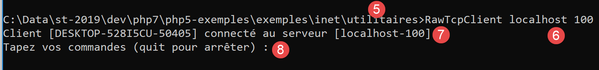
- في [5]، نكون داخل مجلد الأدوات المساعدة؛
- في [6]، نقوم بتشغيل العميل TCP: ونطلب منه الاتصال بالمنفذ 100 للجهاز المحلي (الجهاز الذي تعمل عليه)؛
- في [7]، نجح العميل في الاتصال بالخادم. نحدد إحداثيات العميل: فهو موجود على الجهاز [DESKTOP-528I5CU] (الجهاز المحلي في هذا المثال) ويستخدم المنفذ [50405] للتواصل مع الخادم:
- في [8]، ينتظر العميل أمرًا يكتبه المستخدم على لوحة المفاتيح؛
لنعد إلى نافذة الخادم. لقد تغير محتواها:

- في [9]، تم اكتشاف عميل. وقد خصصه الخادم بالرقم 1. وقد تعرف الخادم بشكل صحيح على العميل البعيد (الجهاز والمنفذ)؛
- في [10]، يعود الخادم إلى انتظار عميل جديد؛
لنعد إلى نافذة العميل ونرسل أمرًا إلى الخادم:

- في [11]، الأمر المرسل إلى الخادم؛
لنعد إلى نافذة الخادم. لقد تغير محتواها:

- إلى [12]، بين الأقواس، الرسالة التي استقبلها الخادم؛
لنرسل ردًا إلى العميل:
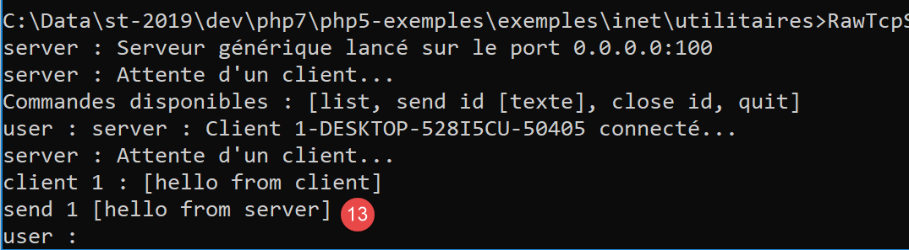
- إلى [13]، وهي الرد المرسل إلى العميل 1. يتم إرسال النص الموجود بين الأقواس فقط، وليس الأقواس نفسها؛
لنعد إلى نافذة العميل:
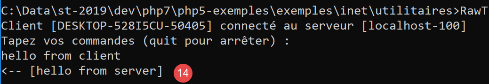
- إلى [14]، وهي الرد الذي تلقّاه العميل. النص الذي تم تلقيه هو النص الموجود بين الأقواس؛
لنعد إلى نافذة الخادم لنرى أوامر أخرى:

- في [15]، نطلب قائمة العملاء؛
- في [16]، الرد؛
- في [17]، نغلق الاتصال مع العميل رقم 1؛
- في [18]، تأكيد الخادم؛
- في [19]، نقوم بإيقاف تشغيل الخادم؛
- في [20]، تأكيد الخادم؛
لنعد إلى نافذة العميل:
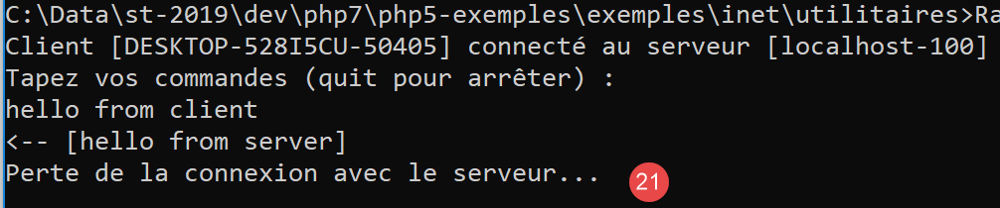
- في [21]، اكتشف العميل انتهاء الخدمة؛
تم إنشاء ملفين للسجلات، أحدهما للخادم والآخر للعميل:

- إلى [25]، سجلات الخادم: اسم الملف هو اسم العميل [machine-port]؛
- في [26]، سجلات العميل: اسم الملف هو اسم الخادم [machine-port]؛
سجلات الخادم هي كما يلي:
سجلات العميل هي كما يلي:
16.3. الحصول على اسم أو عنوان IP لجهاز على الإنترنت
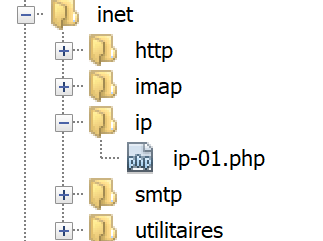
يتم تعريف أجهزة الإنترنت بواسطة عنوان (IP أو IPv4 أو IPv6) وغالبًا ما يتم تعريفها باسم. ولكن في النهاية، يتم استخدام العنوان فقط. لذلك، قد يكون من الضروري أحيانًا معرفة العنوان IP لجهاز يتم تعريفه باسمه.
النص البرمجي [ip-01.php] هو كما يلي:
<?php
// الالتزام الصارم بأنواع المعلمات المعلنة للدوال
declare (strict_types=1);
//
// إدارة الأخطاء
error_reporting(E_ALL & E_STRICT);
ini_set("display_errors", "on");
//
// الثوابت
$HOTES = array("istia.univ-angers.fr", "www.univ-angers.fr", "www.ibm.com", "localhost", "", "xx");
// عناوين IP وأسماء الأجهزة في $HOTES
for ($i = 0; $i < count($HOTES); $i++) {
getIPandName($HOTES[$i]);
}
// النهاية
print "Terminé\n";
exit;
//------------------------------------------------
function getIPandName(string $nomMachine): void {
//$nomMachine: اسم الجهاز الذي نريد الحصول على عنوانه IP
//
// nomMachine-->عنوان IP
$ip = gethostbyname($nomMachine);
print "---------------\n";
if ($ip !== $nomMachine) {
print "ip[$nomMachine]=$ip\n";
// العنوان IP --> nomMachine
$name = gethostbyaddr($ip);
if ($name !== $ip) {
print "name[$ip]=$name\n";
} else {
print "Erreur, machine[$ip] non trouvée\n";
}
} else {
print "Erreur, machine[$nomMachine] non trouvée\n";
}
}
تعليقات
- السطران 7-8: يُطلب من PHP الإبلاغ عن جميع الأخطاء (E_ALL و E_STRICT) وعرضها. لا يُنصح باستخدام هذا الوضع إلا في وضع التطوير لتحسين الكود باستخدام تحذيرات PHP. في وضع الإنتاج، في السطر 8، يجب تعيين القيمة على «off». بدءًا من الإصدار PHP 5.4، تم تضمين المستوى E_STRICT في E_ALL؛
- السطر 11: قائمة الأجهزة التي نريد الحصول على اسمها وعنوانها IP؛
يتم استخدام وظائف الشبكة الخاصة بـ PHP في الوظيفة getIpandName في السطر 21.
- السطر 25: تتيح الدالة gethostbyname($nom) الحصول على العنوان IP "ip3.ip2.ip1.ip0" للجهاز المسمى $nom. إذا لم يكن الجهاز $nom موجودًا، فإن الدالة تُرجع $nom كنتيجة؛
- السطر 30: تسمح الدالة gethostbyaddr($ip) بالحصول على اسم الجهاز ذي العنوان $ip بالصيغة "ip3.ip2.ip1.ip0". إذا لم يكن الجهاز $ip موجودًا، فإن الدالة تُرجع $ip كنتيجة؛
النتائج:
---------------
ip[istia.univ-angers.fr]=193.49.144.41
name[193.49.144.41]=ametys-fo-2.univ-angers.fr
---------------
ip[www.univ-angers.fr]=193.49.144.41
name[193.49.144.41]=ametys-fo-2.univ-angers.fr
---------------
ip[www.ibm.com]=2.18.220.211
name[2.18.220.211]=a2-18-220-211.deploy.static.akamaitechnologies.com
---------------
ip[localhost]=127.0.0.1
name[127.0.0.1]=DESKTOP-528I5CU
---------------
ip[]=192.168.1.38
name[192.168.1.38]=DESKTOP-528I5CU.home
---------------
Erreur, machine[xx] non trouvée
Terminé
16.4. بروتوكول HTTP (بروتوكول النقل HyperText)
16.4.1. المثال 1
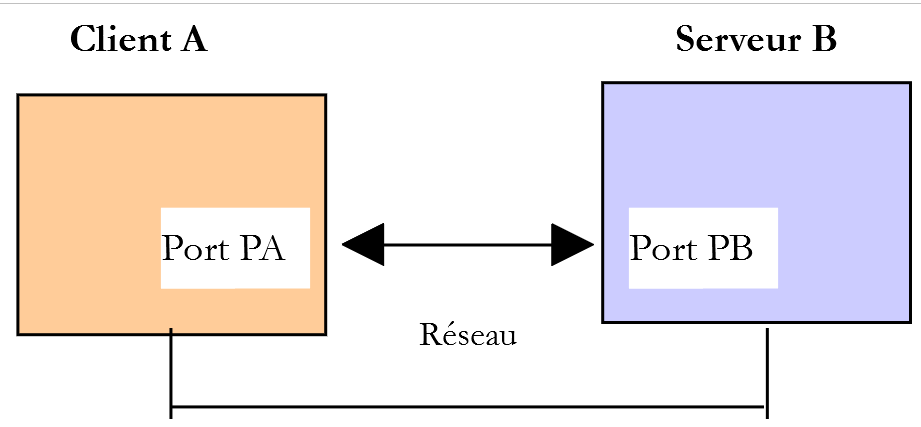
عندما يعرض متصفح ما ملف URL، فإنه يكون عميلاً لخادم ويب أو بعبارة أخرى لخادم HTTP. وهو الذي يأخذ زمام المبادرة ويبدأ بإرسال عدد من الأوامر إلى الخادم. في هذا المثال الأول:
- سيكون الخادم هو الأداة المساعدة [RawTcpServer]؛
- سيكون العميل متصفحًا؛
نقوم أولاً بتشغيل الخادم على المنفذ 100:

ثم نطلب، باستخدام متصفح، URL و[localhost:100]، أي أننا نقول إن الخادم HTTP الذي تم الاستعلام عنه يعمل على المنفذ 100 للجهاز المحلي:
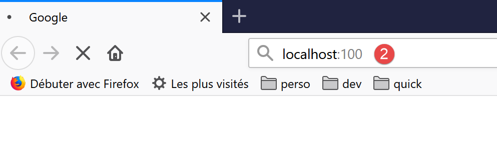
لنعد إلى نافذة الخادم:

- في [3]، العميل الذي قام بالاتصال؛
- في [4-7]، سلسلة أسطر النص التي أرسلها:
- في [4]: هذا السطر له التنسيق [GET URL HTTP/1.1]. وهو يطلب URL / ويطلب من الخادم استخدام بروتوكول HTTP 1.1؛
- في [5]: هذا السطر له التنسيق [Host: serveur:port]. لا يهم استخدام الأحرف الكبيرة أو الصغيرة في الأمر [Host]. ونذكر هنا أن العميل يستعلم عن خادم محلي يعمل على المنفذ 100؛
- يحدد الأمر [User-Agent] هوية العميل؛
- يحدد الأمر [Accept] أنواع المستندات التي يقبلها العميل؛
- يحدد الأمر [Accept-Language] اللغة المطلوبة للمستندات المطلوبة في حال توفرها بعدة لغات؛
- الأمر [Connection] يحدد طريقة الاتصال المطلوبة: [keep-alive] يشير إلى أنه يجب الحفاظ على الاتصال حتى انتهاء التبادل؛
- في الأمر [7]: ينهي العميل أوامره بسطر فارغ؛
ننهي الاتصال بإيقاف تشغيل الخادم:

16.4.2. المثال 2
الآن بعد أن أصبحنا على دراية بالأوامر التي يرسلها المتصفح لطلب URL، سنقوم بطلب هذا URL باستخدام عميلنا TCP [RawTcpClient]. سيكون خادم Apache الخاص بـ Laragon هو خادم الويب الخاص بنا.
لنقم بتشغيل Laragon ثم خادم الويب Apache:


الآن، باستخدام متصفح، دعونا نطلب URL و [http://localhost:80]. هنا نحدد فقط الخادم [localhost:80] دون تحديد أي مستند URL. في هذه الحالة، يتم طلب URL /، أي جذر خادم الويب:

- إلى [1]، وهو URL المطلوب. كنا قد أدخلنا في البداية [http://localhost:80]، وقام المتصفح (Firefox هنا) قام بتحويلها ببساطة إلى [localhost] لأن البروتوكول [http] يكون ضمنيًا عندما لا يُذكر أي بروتوكول، والمنفذ [80] يكون ضمنيًا عندما لا يُحدد المنفذ؛
- في [2]، الصفحة الجذرية / لخادم الويب المستعلم عنه؛
الآن، لنعرض النص الذي تلقّاه المتصفح:

- نضغط بزر الفأرة الأيمن على الصفحة المستلمة ونختار الخيار [2]. نحصل على شفرة المصدر التالية:
<!DOCTYPE HTML>
<HTML>
<head>
<title>Laragon</title>
<link href="https://fonts.googleapis.com/css?family=Karla:400" rel="stylesheet" type="text/css">
<style>
HTML, body {
height: 100%;
}
body {
margin: 0;
padding: 0;
width: 100%;
display: table;
font-weight: 100;
font-family: 'Karla';
}
.container {
text-align: center;
display: table-cell;
vertical-align: middle;
}
.content {
text-align: center;
display: inline-block;
}
.title {
font-size: 96px;
}
.opt {
margin-top: 30px;
}
.opt a {
text-decoration: none;
font-size: 150%;
}
a:hover {
color: red;
}
</style>
</head>
<body>
<div class="container">
<div class="content">
<div class="title" title="Laragon">Laragon</div>
<div class="info"><br />
Apache/2.4.35 (Win64) OpenSSL/1.1.0i PHP/7.2.11<br />
PHP version: 7.2.11 <span><a title="phpinfo()" href="/?q=info">info</a></span><br />
Document Root: C:/myprograms/laragon-lite/www<br />
</div>
<div class="opt">
<div><a title="Getting Started" href="https://laragon.org/docs">Getting Started</a></div>
</div>
</div>
</div>
</body>
</HTML>
الآن دعونا نطلب URL و [http://localhost:80] مع عميلنا TCP:

- في [1]، نتصل بالمنفذ 80 لخادم localhost. هذا هو المكان الذي يعمل فيه خادم الويب الخاص بـ Laragon؛
نقوم الآن بكتابة الأوامر التي اكتشفناها في الفقرة السابقة:

- في [1]، الأمر [GET]. نطلب الجذر / لخادم الويب؛
- في [2]، الأمر [Host]؛
- هذان هما الأمران الوحيدان الضروريان. أما بالنسبة للأوامر الأخرى، فسيستخدم خادم الويب القيم الافتراضية؛
- في [3]، السطر الفارغ الذي يجب أن ينهي أوامر العميل؛
- تحت السطر 3، تأتي استجابة خادم الويب؛
- من [4] وحتى السطر الفارغ [5] تأتي رؤوس HTTP الخاصة برد الخادم؛
- بعد السطر [5] يأتي المستند HTML المطلوب [6]؛
نكتب [quit] لإنهاء العميل ونقوم بتحميل ملف السجلات [localhost-80.txt]:
- الأسطر 11-79: المستند HTML المستلم. في المثال السابق، تلقى Firefox نفس المستند؛
لدينا الآن الأساس اللازم لبرمجة عميل TCP الذي سيطلب ملف URL.
16.4.3. المثال 3

البرنامج النصي [http-01.php] هو عميل HTTP تم تكوينه بواسطة الملف jSON [config-http-01.json]. ومحتوى هذا الملف هو كما يلي:
- السطر 2: اسم الجهاز الذي يستضيف خادم الويب المطلوب الوصول إليه؛
- السطر 3: المنفذ الذي يعمل عليه خادم الويب هذا؛
- السطر 4: رقم URL للوثيقة المطلوبة؛
- السطر 5: الجهاز المستهدف بالصيغة machine:port؛
- السطر 6: معرّف العميل HTTP: يمكن إدخال أي قيمة مرغوبة؛
- السطر 7: نوع المستند الذي يقبله العميل، وهو هنا نص HTML؛
- السطر 8: اللغة المطلوبة للوثيقة المطلوبة؛
- السطر 9: علامة نهاية السطر للأوامر المرسلة من العميل: فقد تختلف هذه العلامة حسب ما إذا كان الخادم يعمل على جهاز Unix (\n) أو Windows (\r\n)؛
النص البرمجي [http-01.php] هو كما يلي:
<?php
// الالتزام الصارم بأنواع المعلمات المعلنة للدوال
declare (strict_types=1);
//
// معالجة الأخطاء
// error_reporting(E_ALL & E_STRICT);
// ini_set("display_errors", "on");
//
// الثوابت
const CONFIG_FILE_NAME = "config-http-01.json";
//
// يتم استرداد التكوين
$config = \json_decode(\file_get_contents(CONFIG_FILE_NAME), true);
// الحصول على النص HTML من URL في ملف التكوين
foreach ($config as $site => $protocole) {
// قراءة الصفحة الرئيسية للموقع $ite
$résultat = getURL($site, $protocole);
// عرض النتيجة
print "$résultat\n";
}//لـ
// نهاية
exit;
//-----------------------------------------------------------------------
function getURL(string $site, array $protocole, $suivi = TRUE): string {
// يقرأ $siteURL ويخزنه في الملف $site.HTML
// يتم الحوار بين العميل والخادم وفقًا لبروتوكول $protocole
//
// فتح اتصال على منفذ $site
$erreurNumber = 0;
$erreur = "";
$connexion = fsockopen($site, $protocole["port"], $erreurNumber, $erreur);
// العودة في حالة حدوث خطأ
if ($connexion === FALSE) {
return "Echec de la connexion au site (" . $site . " ," . $protocole["port"] . " : $erreur";
}
// يمثل $connexion تدفقًا اتصاليًا ثنائي الاتجاه
// بين العميل (هذا البرنامج) وخادم الويب الذي تم الاتصال به
// تُستخدم هذه القناة لتبادل الأوامر والمعلومات
// بروتوكول الاتصال هو HTTP
//
// إنشاء الملف $site.HTML
$HTML = fopen("output/$site.HTML", "w");
if ($HTML === FALSE) {
// إغلاق اتصال العميل/الخادم
fclose($connexion);
// خطأ في الاستجابة
return "Erreur lors de la création du fichier $site.HTML";
}
// سيبدأ العميل الحوار HTTP مع الخادم
if ($suivi) {
print "Client : début de la communication avec le serveur [$site] ----------------------------\n";
}
// وفقًا للخوادم، يجب أن تنتهي أسطر العميل بـ \n أو \r\n
$endOfLine = $protocole["endOfLine"];
// للتبسيط، لا يتم اختبار حالات الخطأ في الاتصال بين العميل والخادم
// يرسل العميل الأمر GET لطلب $protocole["GET"]
// صيغة GET URL HTTP/1.1
$commande = "GET " . $protocole["GET"] . " HTTP/1.1$endOfLine";
// متابعة؟
if ($suivi) {
print "--> $commande";
}
// يتم إرسال الأمر إلى الخادم
fputs($connexion, $commande);
// إرسال الرؤوس الأخرى HTTP
foreach ($protocole as $verb => $value) {
if ($verb !== "GET" && $verb != "port"" && $verb !="endOfLine") {
// يتم إنشاء الأمر
$commande = "$verb: $value$endOfLine";
// متابعة؟
if ($suivi) {
print "--> $commande";
}
// يتم إرسال الأمر إلى الخادم
fputs($connexion, $commande);
}
}
// يجب أن تنتهي رؤوس (headers) بروتوكول HTTP بسطر فارغ
fputs($connexion, $endOfLine);
//
// سيقوم الخادم الآن بالرد على القناة $connexion. سيقوم بإرسال جميع
// بياناته ثم يغلق القناة. وبالتالي، يقرأ العميل كل ما يصل من $connexion
// حتى يتم إغلاق القناة
//
// يتم قراءة الرؤوس أولاً HTTP المرسلة من الخادم
// وهي أيضًا تنتهي بسطر فارغ
if ($suivi) {
print "Réponse du serveur [$site] ----------------------------\n";
}
$fini = FALSE;
while (!$fini && $ligne = fgets($connexion, 1000)) {
// هل يوجد سطر فارغ؟
$champs = [];
preg_match("/^(.*?)\s+$/", $ligne, $champs);
if ($champs[1] !== "") {
if ($suivi) {
// نقوم بعرض الرأس HTTP
print "<-- " . $champs[1] . "\n";
}
} else {
// كان هذا السطر الفارغ - انتهت الرؤوس HTTP
$fini = TRUE;
}
}
// يتم قراءة المستند HTML الذي سيأتي بعد السطر الفارغ
while ($ligne = fgets($connexion, 1000)) {
// يتم تخزين السطر في الملف HTML الخاص بالموقع
fputs($HTML, $ligne);
}
// أغلق الخادم الاتصال - وأغلقه العميل بدوره
fclose($connexion);
// إغلاق الملف $HTML
fclose($HTML);
// العودة
return "Fin de la communication avec le site [$site]. Vérifiez le fichier [$site.HTML]";
}
تعليقات على الكود:
- السطر 14: يتم استخدام ملف التكوين لإنشاء قاموس:
- مفاتيح القاموس هي خوادم الويب المطلوب الاستعلام عنها؛
- تحدد القيم بروتوكول HTTP الذي يجب اتباعه؛
- الأسطر 16-21: يتم تكرار قائمة خوادم الويب الموجودة في التكوين؛
- السطر 26: تطلب الدالة getURL($site,$protocole,$suivi) تطلب مستندًا من موقع الويب $site وتخزنه في الملف النصي $site.HTML.Par: بشكل افتراضي، يتم تسجيل التبادلات بين العميل والخادم في وحدة التحكم ($suivi=TRUE)؛
- السطر 33: تسمح الدالة fsockopen($site,$port,$errNumber,$erreur) إنشاء اتصال بخدمة TCP / IP تعمل على المنفذ $port للجهاز $site. إذا فشل الاتصال، فإن [$errNumber] هو رقم الخطأ و [$erreur] هو رسالة الخطأ المرتبطة به. بمجرد فتح اتصال العميل/الخادم، تتبادل العديد من الخدمات TCP / IP أسطر النص. وهذا هو الحال هنا بالنسبة لبروتوكول HTTP (بروتوكول النقل HyperText). يمكن عندئذٍ معالجة تدفق الخادم الذي يصل إلى العميل كملف نصي يُقرأ باستخدام [fgets]. وينطبق الأمر نفسه على التدفق الصادر من العميل إلى الخادم والذي يمكن كتابته باستخدام [fputs]؛
- الأسطر 44-50: إنشاء الملف [$site.HTML] الذي سيتم تخزين المستند HTML المستلم فيه؛
- السطر 60: يجب أن يكون الأمر الأول للعميل هو الأمر [GET URL HTTP/1.1]؛
- السطر 66: تتيح الدالة fputs للعميل إرسال البيانات إلى الخادم. وفي هذه الحالة، فإن السطر النصي المرسل له المعنى التالي: "أريد (GET) الصفحة [URL] من موقع الويب الذي أنا متصل به. أنا أعمل باستخدام بروتوكول HTTP الإصدار 1.1"؛
- الأسطر 68-79: يتم إرسال الأسطر الأخرى لبروتوكول HTTP [Host, User-Agent, Accept, Accept-Language]. ولا يهم ترتيبها؛
- السطر 81: يتم إرسال سطر فارغ إلى الخادم للإشارة إلى أن العميل قد انتهى من إرسال رؤوسه HTTP وأنه ينتظر الآن المستند المطلوب؛
- الأسطر 92-106: سيقوم الخادم أولاً بإرسال سلسلة من الرؤوس HTTP التي ستقدم معلومات متنوعة عن المستند المطلوب. تنتهي هذه الرؤوس بسطر فارغ؛
- السطر 93: نقرأ سطرًا أرسله الخادم باستخدام الدالة PHP [fgets]؛
- السطر 96: يتم استرداد نص السطر بدون المسافات (الفراغات وعلامة نهاية السطر) في نهاية السطر؛
- السطر 97: يتم التحقق مما إذا تم استرداد السطر الفارغ الذي يشير إلى نهاية الرؤوس HTTP المرسلة من الخادم؛
- الأسطر 98-101: إذا كنا في الوضع [suivi]، يتم عرض الرأس HTTP الذي تم استلامه على وحدة التحكم؛
- الأسطر 108-111: يمكن قراءة أسطر النص في استجابة الخادم سطراً سطراً باستخدام حلقة while وتسجيلها في ملف نصي [output/$site.HTML]. عندما يرسل خادم الويب الصفحة المطلوبة بالكامل، فإنه يغلق اتصاله مع العميل. ومن جانب العميل، سيتم اكتشاف ذلك على أنه نهاية الملف؛
النتائج:
تعرض وحدة التحكم السجلات التالية:
Client : début de la communication avec le serveur [localhost] ----------------------------
--> GET / HTTP/1.1
--> Host: localhost:80
--> User-Agent: client PHP
--> Accept: text/HTML
--> Accept-Language: fr
Réponse du serveur [localhost] ----------------------------
<-- HTTP/1.1 200 OK
<-- Date: Thu, 16 May 2019 15:43:18 GMT
<-- Server: Apache/2.4.35 (Win64) OpenSSL/1.1.0i PHP/7.2.11
<-- X-Powered-By: PHP/7.2.11
<-- Content-Length: 1781
<-- Content-Type: text/HTML; charset=UTF-8
Fin de la communication avec le site [localhost]. Vérifiez le fichier [localhost.HTML]
في مثالنا، الملف [output/localhost.HTML] الذي تم استلامه هو التالي:
<!DOCTYPE HTML>
<HTML>
<head>
<title>Laragon</title>
<link href="https://fonts.googleapis.com/css?family=Karla:400" rel="stylesheet" type="text/css">
<style>
HTML, body {
height: 100%;
}
body {
margin: 0;
padding: 0;
width: 100%;
display: table;
font-weight: 100;
font-family: 'Karla';
}
.container {
text-align: center;
display: table-cell;
vertical-align: middle;
}
.content {
text-align: center;
display: inline-block;
}
.title {
font-size: 96px;
}
.opt {
margin-top: 30px;
}
.opt a {
text-decoration: none;
font-size: 150%;
}
a:hover {
color: red;
}
</style>
</head>
<body>
<div class="container">
<div class="content">
<div class="title" title="Laragon">Laragon</div>
<div class="info"><br />
Apache/2.4.35 (Win64) OpenSSL/1.1.0i PHP/7.2.11<br />
PHP version: 7.2.11 <span><a title="phpinfo()" href="/?q=info">info</a></span><br />
Document Root: C:/myprograms/laragon-lite/www<br />
</div>
<div class="opt">
<div><a title="Getting Started" href="https://laragon.org/docs">Getting Started</a></div>
</div>
</div>
</div>
</body>
</HTML>
لقد حصلنا بالفعل على نفس المستند الذي حصلنا عليه باستخدام متصفح Firefox.
16.4.4. المثال 4
في هذا المثال، سنوضح أن العميل HTTP الذي كتبناه غير كافٍ. لنقم بتعديل ملف التكوين [config-http-01.json] على النحو التالي:
هنا، سنطلب URL [http://tahe.developpez.com:443/]. المنفذ 443 للجهاز [tahe.developpez.com] هو منفذ يُستخدم لبروتوكول http الآمن المسمى https. في هذا البروتوكول، يبدأ الحوار بين العميل والخادم بتبادل المعلومات التي ستؤمن الاتصال. يجب على العميل عندئذٍ استخدام بروتوكول [HTTPS] وليس بروتوكول [HTTP]، وهو ما لا يفعله عميلنا.
باستخدام ملف التكوين هذا، تكون نتائج وحدة التحكم كما يلي:
Client : début de la communication avec le serveur [tahe.developpez.com] ----------------------------
--> GET / HTTP/1.1
--> Host: sergetahe.com:443
--> User-Agent: script PHP 7
--> Accept: text/HTML
--> Accept-Language: fr
Réponse du serveur [tahe.developpez.com] ----------------------------
<-- HTTP/1.1 400 Bad Request
<-- Date: Fri, 17 May 2019 13:02:26 GMT
<-- Server: Apache/2.4.25 (Debian)
<-- Content-Length: 454
<-- Connection: close
<-- Content-Type: text/HTML; charset=iso-8859-1
Fin de la communication avec le site [tahe.developpez.com]. Vérifiez le fichier [output/tahe.developpez.com.HTML]
- السطر 8: رد الخادم [tahe.developpez.com] بأن طلب العميل غير صحيح؛
ومن ثم، يكون محتوى الملف [output/tahe.developpez.com.HTML] كما يلي:
<!DOCTYPE HTML PUBLIC "-//IETF//DTD HTML 2.0//EN">
<HTML><head>
<title>400 Bad Request</title>
</head><body>
<h1>Bad Request</h1>
<p>Your browser sent a request that this server could not understand.<br />
Reason: You're speaking plain HTTP to an SSL-enabled server port.<br />
Instead use the HTTPS scheme to access this URL, please.<br />
</p>
<hr>
<address>Apache/2.4.25 (Debian) Server at 2eurocents.developpez.com Port 443</address>
</body></HTML>
يذكر الخادم بوضوح أننا لم نستخدم البروتوكول الصحيح.
لنستخدم الآن ملف التكوين التالي:
تكون نتائج وحدة التحكم كما يلي:
Client : début de la communication avec le serveur [sergetahe.com] ----------------------------
--> GET /cours-tutoriels-de-programmation/ HTTP/1.1
--> Host: sergetahe.com:80
--> User-Agent: script PHP 7
--> Accept: text/HTML
--> Accept-Language: fr
Réponse du serveur [sergetahe.com] ----------------------------
<-- HTTP/1.1 200 OK
<-- Date: Fri, 17 May 2019 13:36:06 GMT
<-- Content-Type: text/HTML; charset=UTF-8
<-- Transfer-Encoding: chunked
<-- Server: Apache
<-- X-Powered-By: PHP/7.0
<-- Vary: Accept-Encoding
<-- Set-Cookie: SERVERID68971=2621207|XN64y|XN64y; path=/
<-- Cache-control: private
<-- X-IPLB-Instance: 17106
Fin de la communication avec le site [sergetahe.com]. Vérifiez le fichier [output/sergetahe.com.HTML]
- تشير السطر 11 إلى أن الخادم يرسل المستند على أجزاء؛
وهذا يترجم إلى وجود أرقام في التدفق المرسل إلى العميل: كل رقم يشير للعميل إلى عدد الأحرف في الجزء التالي الذي يرسله الخادم. وإليك ما يظهر في الملف [output/sergetahe.com.HTML]:

- في [1] و [2]، الحجم السداسي العشري للجزأين 1 و 2 من المستند؛
لا ينبغي لعميل HTTP الصحيح أن يترك هذه الأرقام في المستند النهائي HTML.
إليك مثال آخر:
يشبه المثال السابق، لكن URL المطلوب في السطر 4 لا يحتوي على الحرف / لإنهائه. هذان ليسا نفس URL. وعند تشغيل عميل HTTP، تظهر النتائج التالية في وحدة التحكم:
Client : début de la communication avec le serveur [sergetahe.com] ----------------------------
--> GET /cours-tutoriels-de-programmation HTTP/1.1
--> Host: sergetahe.com:80
--> User-Agent: script PHP 7
--> Accept: text/HTML
--> Accept-Language: fr
Réponse du serveur [sergetahe.com] ----------------------------
<-- HTTP/1.1 301 Moved Permanently
<-- Date: Fri, 17 May 2019 13:47:00 GMT
<-- Content-Type: text/HTML; charset=iso-8859-1
<-- Content-Length: 262
<-- Server: Apache
<-- Location: http://sergetahe.com:80/دورات-تعليمية-في-البرمجة/
<-- Set-Cookie: SERVERID68971=2621207|XN67V|XN67V; path=/
<-- Cache-control: private
<-- X-IPLB-Instance: 17095
Fin de la communication avec le site [sergetahe.com]. Vérifiez le fichier [output/sergetahe.com.HTML]
- تشير السطر 8 إلى أن المستند المطلوب قد تغير من URL. ويظهر الرمز الجديد URL في السطر 13. لاحظ هذه المرة الحرف / الذي ينهي الرمز الجديد URL؛
يصبح ملف [output/serge.tahe.com.HTML] كما يلي:
<!DOCTYPE HTML PUBLIC "-//IETF//DTD HTML 2.0//EN">
<HTML><head>
<title>301 Moved Permanently</title>
</head><body>
<h1>Moved Permanently</h1>
<p>The document has moved <a href="http://sergetahe.com/cours-tutoriels-de-programmation/">here</a>.</p>
</body></HTML>
من المفترض أن يتمكن عميل HTTP من متابعة عمليات إعادة التوجيه. وهنا، من المفترض أن يطلب تلقائيًا الملف الجديد URL [http://sergetahe.com/cours-tutoriels-de-programmation/].
16.4.5. المثال 5
أظهرت لنا الأمثلة السابقة أن عميلنا HTTP غير كافٍ. سنقدم الآن أداة تسمى [curl] تتيح استرداد مستندات الويب من خلال معالجة الصعوبات المذكورة: بروتوكول https، والمستندات المرسلة على أجزاء، وعمليات إعادة التوجيه... تم تثبيت الأداة [curl] باستخدام Laragon:

لنفتح محطة عمل Laragon [1]:

في نافذة الأوامر، نكتب الأمر التالي:
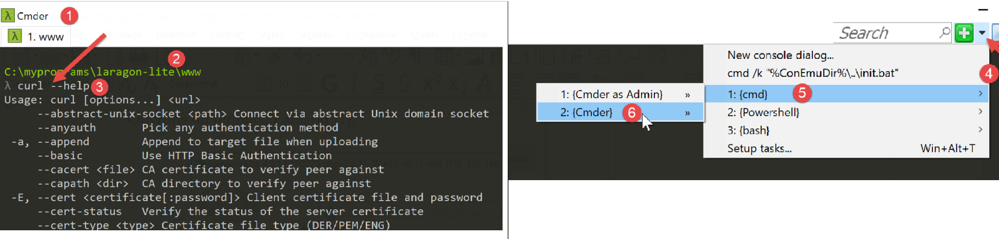
- في [1]، نوع وحدة التحكم؛
- في [2]، المجلد الحالي. هذا المجلد خاص: فهو المكان الذي يبحث فيه خادم Apache الخاص بـ Laragon عن المستندات المطلوبة. لذا يجب تجنب إفساد هذا المجلد؛
- في [3]، الأمر الذي تم كتابته؛
من المحتمل أن ينتج عن الأمر [curl --help] خطأ. السبب الأكثر احتمالًا هو أنك لا تستخدم النوع الصحيح من المحطات الطرفية. في هذه الحالة، افتح محطة طرفية أخرى باستخدام الأوامر [4-6]؛
يُظهر الأمر [curl --help] جميع خيارات تكوين [curl]. وهناك العشرات منها. ولن نستخدم سوى القليل منها. لطلب URL، يكفي كتابة الأمر [curl URL]. سيُظهر هذا الأمر المستند المطلوب على وحدة التحكم. وإذا أردنا أيضًا عرض التبادلات بين العميل والخادم، فسنكتب HTTP. وأخيرًا، لتسجيل المستند المطلوب في ملف، سنكتب HTML.
لتجنب إثقال مجلد [www] الخاص بـ Laragon، دعونا ننتقل إلى مكان آخر في نظام الملفات:

- في [1]، ننتقل إلى المجلد [c:\temp]. إذا لم يكن هذا المجلد موجودًا، فيمكنك إنشاؤه أو اختيار مجلد آخر؛
- في [2]، نقوم بإنشاء مجلد باسم [curl]؛
- في [3]، نضع المؤشر عليه؛
- في [4]، نعرض محتوياته. إنه فارغ؛
تأكد من تشغيل خادم Apache الخاص بـ Laragon، ثم باستخدام [curl]، اطلب URL و [http://localhost/] باستخدام الأمر [curl –verbose –output localhost.HTML http://localhost/]. نحصل على النتائج التالية:
c:\Temp\curl
λ curl --verbose --output localhost.HTML http://localhost/
% Total % Received % Xferd Average Speed Time Time Time Current
Dload Upload Total Spent Left Speed
0 0 0 0 0 0 0 0 --:--:-- --:--:-- --:--:-- 0* Trying ::1…
* TCP_NODELAY set
* Connected to localhost (::1) port 80 (#0)
> GET / HTTP/1.1
> Host: localhost
> User-Agent: curl/7.63.0
> Accept: */*
>
< HTTP/1.1 200 OK
< Date: Fri, 17 May 2019 14:32:47 GMT
< Server: Apache/2.4.35 (Win64) OpenSSL/1.1.0i PHP/7.2.11
< X-Powered-By: PHP/7.2.11
< Content-Length: 1781
< Content-Type: text/HTML; charset=UTF-8
<
{ [1781 bytes data]
100 1781 100 1781 0 0 14248 0 --:--:-- --:--:-- --:--:-- 14248
* Connection #0 إلى المضيف localhost دون تغيير
- الأسطر 8-12: الأسطر المرسلة بواسطة [curl] إلى الخادم [localhost]. يمكن التعرف على بروتوكول HTTP؛
- الأسطر 13-19: الأسطر التي أرسلها الخادم كرد؛
- السطر 13: يشير إلى أننا تلقينا المستند المطلوب؛
يحتوي الملف [localhost.HTML] على المستند المطلوب. يمكنك التحقق من ذلك عن طريق تحميل الملف في محرر نصوص.
الآن لنطلب URL و [https://tahe.developpez.com:443/]. للحصول على ملف URL، يجب أن يكون العميل HTTP قادرًا على التعامل مع ملف HTTPS. وهذا هو الحال بالنسبة للعميل [curl].
نتائج وحدة التحكم هي كما يلي:
c:\Temp\curl
λ curl --verbose --output tahe.developpez.com.HTML https://tahe.developpez.com:443/
% Total % Received % Xferd Average Speed Time Time Time Current
Dload Upload Total Spent Left Speed
0 0 0 0 0 0 0 0 --:--:-- --:--:-- --:--:-- 0* Trying 87.98.130.52…
* TCP_NODELAY set
* Connected to tahe.developpez.com (87.98.130.52) port 443 (#0)
* ALPN, offering h2
* ALPN, offering http/1.1
* successfully set certificate verify locations:
* CAfile: C:\myprograms\laragon-lite\bin\laragon\utils\curl-ca-bundle.crt
CApath: none
} [5 bytes data]
* TLSv1.3 (OUT), TLS handshake, Client hello (1):
} [512 bytes data]
* TLSv1.3 (IN), TLS handshake, Server hello (2):
{ [108 bytes data]
* TLSv1.2 (IN), TLS handshake, Certificate (11):
{ [2558 bytes data]
* TLSv1.2 (IN), TLS handshake, Server key exchange (12):
{ [333 bytes data]
* TLSv1.2 (IN), TLS handshake, Server finished (14):
{ [4 bytes data]
* TLSv1.2 (OUT), TLS handshake, Client key exchange (16):
} [70 bytes data]
* TLSv1.2 (OUT), TLS change cipher, Change cipher spec (1):
} [1 bytes data]
* TLSv1.2 (OUT), TLS handshake, Finished (20):
} [16 bytes data]
* TLSv1.2 (IN), TLS handshake, Finished (20):
{ [16 bytes data]
* SSL connection using TLSv1.2 / ECDHE-RSA-AES128-GCM-SHA256
* ALPN, server accepted to use http/1.1
* Server certificate:
* subject: CN=*.developpez.com
* start date: Apr 4 08:25:09 2019 GMT
* expire date: Jul 3 08:25:09 2019 GMT
* subjectAltName: host "tahe.developpez.com" matched cert's "*.developpez.com"
* issuer: C=US; O=Let's Encrypt; CN=Let's Encrypt Authority X3
* SSL certificate verify ok.
} [5 bytes data]
> GET / HTTP/1.1
> Host: tahe.developpez.com
> User-Agent: curl/7.63.0
> Accept: */*
>
{ [5 bytes data]
< HTTP/1.1 200 OK
< Date: Fri, 17 May 2019 14:39:41 GMT
< Server: Apache/2.4.25 (Debian)
< X-Powered-By: PHP/5.3.29
< Vary: Accept-Encoding
< Transfer-Encoding: chunked
< Content-Type: text/HTML
<
{ [6 bytes data]
100 96559 0 96559 0 0 163k 0 --:--:-- --:--:-- --:--:-- 163k
* Connection #0 إلى المضيف tahe.developpez.com بقيت كما هي
- الأسطر 10-40: التبادلات بين العميل والخادم لتأمين الاتصال: سيتم تشفير هذا الاتصال؛
- الأسطر 42-45: رؤوس HTTP المرسلة من العميل [curl] إلى الخادم؛
- السطر 48: تم العثور على المستند المطلوب؛
- السطر 53: يتم إرسال المستند على أجزاء؛
يدير [curl] بشكل صحيح كلاً من البروتوكول الآمن HTTPS وحقيقة أن المستند يتم إرساله على أجزاء. سيتم العثور على المستند المرسل هنا في الملف [tahe.developpez.com.HTML].
لنطلب الآن URL [http://sergetahe.com/cours-tutoriels-de-programmation]. كنا قد لاحظنا أنه بالنسبة لملف URL هذا، كان هناك إعادة توجيه إلى ملف URL و[http://sergetahe.com/cours-tutoriels-de-programmation/] (مع وجود علامة / في النهاية).
وتكون نتائج وحدة التحكم كما يلي:
c:\Temp\curl
λ curl --verbose --output sergetahe.com.HTML --location http://sergetahe.com/دورات-ودروس-البرمجة
% Total % Received % Xferd Average Speed Time Time Time Current
Dload Upload Total Spent Left Speed
0 0 0 0 0 0 0 0 --:--:-- --:--:-- --:--:-- 0* Trying 87.98.154.146…
* TCP_NODELAY set
* Connected to sergetahe.com (87.98.154.146) port 80 (#0)
> GET /cours-tutoriels-de-programmation HTTP/1.1
> Host: sergetahe.com
> User-Agent: curl/7.63.0
> Accept: */*
>
< HTTP/1.1 301 Moved Permanently
< Date: Fri, 17 May 2019 15:13:03 GMT
< Content-Type: text/HTML; charset=iso-8859-1
< Content-Length: 262
< Server: Apache
< Location: http://sergetahe.com/دورات-دروس-البرمجة/
< Set-Cookie: SERVERID68971=2621207|XN7Pg|XN7Pg; path=/
< Cache-control: private
< X-IPLB-Instance: 17095
<
* Ignoring the response-body
{ [262 bytes data]
100 262 100 262 0 0 1401 0 --:--:-- --:--:-- --:--:-- 1401
* Connection #0 لاستضافة sergetahe.com دون تغيير
* Issue another request to this URL: 'http://sergetahe.com/دورات-ودروس-البرمجة/'
* Found bundle for host sergetahe.com: 0x1c88548 [can pipeline]
* Could pipeline, but not asked to!
* Re-using existing connection! (#0) مع المضيف sergetahe.com
* Connected to sergetahe.com (87.98.154.146) port 80 (#0)
0 0 0 0 0 0 0 0 --:--:-- --:--:-- --:--:-- 0
> GET /cours-tutoriels-de-programmation/ HTTP/1.1
> Host: sergetahe.com
> User-Agent: curl/7.63.0
> Accept: */*
>
< HTTP/1.1 200 OK
< Date: Fri, 17 May 2019 15:13:04 GMT
< Content-Type: text/HTML; charset=UTF-8
< Transfer-Encoding: chunked
< Server: Apache
< X-Powered-By: PHP/7.0
< Vary: Accept-Encoding
< Set-Cookie: SERVERID68971=2621207|XN7Pg|XN7Pg; path=/
< Cache-control: private
< X-IPLB-Instance: 17095
<
{ [14205 bytes data]
100 43101 0 43101 0 0 78795 0 --:--:-- --:--:-- --:--:-- 168k
* Connection #0 إلى المضيف sergetahe.com دون تغيير
- السطر 2: يتم استخدام الخيار [--location] للإشارة إلى الرغبة في اتباع عمليات إعادة التوجيه المرسلة من الخادم؛
- السطر 13: يشير الخادم إلى أن المستند المطلوب قد تغير إلى URL؛
- السطر 18: يشير إلى الرابط الجديد URL للوثيقة المطلوبة؛
- السطر 27: يرسل [curl] طلبًا جديدًا إلى العنوان الجديد URL هذه المرة؛
- السطر 33: يتم استخدام الرمز الجديد URL؛
- السطر 38: يرد الخادم بأنه عثر على المستند المطلوب؛
- السطر 41: يرسلها على أجزاء؛
سيتم العثور على المستند المطلوب في الملف [sergetahe.com.HTML].
16.4.6. المثال 6
يحتوي الملف PHP على امتداد يُسمى [libcurl]، والذي يتيح استخدام إمكانيات الأداة [curl] في برنامج PHP. يجب أولاً التأكد من تنشيط هذا الملحق في الملف [php.ini] الموصوف في الفقرة الرابط:

تأكد من إزالة علامة التعليق عن السطر 889 أعلاه.
سنقوم بكتابة برنامج نصي [http-02.php] الذي سيستخدم ملف التكوين jSON التالي:
كل عنصر في القاموس [clé, valeur] له البنية التالية:
- clé: اسم خادم ويب؛
- valeur هو قاموس يحتوي على المفاتيح التالية:
- timeout: المدة القصوى لانتظار استجابة الخادم. بعد انقضاء هذه المدة، سيتم قطع اتصال العميل؛
- url: URL للوثيقة المطلوبة؛
رمز البرنامج النصي [http-02.php] هو كما يلي:
<?php
// الالتزام الصارم بأنواع المعلمات المعلنة للدوال
declare (strict_types=1);
//
// معالجة الأخطاء
//error_reporting(E_ALL & E_STRICT);
//ini_set("display_errors", "on");
//
// الثوابت
const CONFIG_FILE_NAME = "config-http-02.json";
//
// استرداد التكوين
$config = \json_decode(\file_get_contents(CONFIG_FILE_NAME), true);
// الحصول على النص HTML من URL في ملف التكوين
foreach ($config as $site => $infos) {
// قراءة URL من الموقع $ite
$résultat = getUrl($site, $infos["url"], $infos["timeout"]);
// عرض النتيجة
print "$résultat\n";
}//لـ
// النهاية
exit;
//-----------------------------------------------------------------------
function getUrl(string $site, string $url, int $timeout, $suivi = TRUE): string {
// يقرأ URL $url ويخزنه في الملف output/$site.HTML
//
// متابعة
print "Client : début de la communication avec le serveur [$site] ----------------------------\n";
// تم تهيئة جلسة عمل cURL
$curl = curl_init($url);
if ($curl === FALSE) {
// حدث خطأ
return "Erreur lors de l'initialisation de la session cURL pour le site [$site]";
}
// خيارات curl
$options = [
// الوضع التفصيلي
CURLOPT_VERBOSE => true,
// اتصال جديد - بدون ذاكرة تخزين مؤقت
CURLOPT_FRESH_CONNECT => true,
// مهلة انتظار الطلب (بالثواني)
CURLOPT_TIMEOUT => $timeout,
CURLOPT_CONNECTTIMEOUT => $timeout,
// عدم التحقق من صحة الشهادات SSL
CURLOPT_SSL_VERIFYPEER => false,
// متابعة عمليات إعادة التوجيه
CURLOPT_FOLLOWLOCATION => true,
// استرداد المستند المطلوب في شكل سلسلة أحرف
CURLOPT_RETURNTRANSFER => true
];
// إعدادات curl
curl_setopt_array($curl, $options);
// تنفيذ الطلب
$page_content = curl_exec($curl);
// إغلاق الجلسة cURL
curl_close($curl);
// استخدام النتيجة
if ($page_content !== FALSE) {
// تسجيل النتيجة في $site.HTML
$result = file_put_contents("output/$site.HTML", $page_content);
if ($result === FALSE) {
// إرجاع خطأ
return "Erreur lors de la création du fichier [output/$site.HTML]";
}
// العودة بنجاح
return "Fin de la communication avec le serveur [$site]. Vérifiez le fichier [output/$site.HTML]";
} else {
// حدث خطأ في الاتصال
return "Erreur de communication avec le serveur [$site]";
}
}
تعليقات
- السطر 14: يتم استخدام ملف التكوين لإنشاء القاموس [$config]؛
- الأسطر 17-22: يتم إجراء حلقة تكرار على قائمة المواقع الموجودة في التكوين؛
- السطر 19: بالنسبة لكل موقع، يتم استدعاء الدالة [getUrl] التي ستقوم بتنزيلURL $infos[«url»] مع مهلة $infos[«timeout»]؛
- السطر 34: يتم بدء جلسة [curl]. [curl_init] لم تقم بعد بالاتصال بخادم الويب. وهي تُرجع موردًا [$curl] الذي سيكون معلمة لجميع الدوال التالية [curl]؛
- الأسطر 35-38: إذا فشلت تهيئة الجلسة [curl]، فإن الدالة [curl_init] تُرجع القيمة المنطقية FALSE؛
- الأسطر 40-54: سيقوم القاموس [$options] بتكوين اتصال [curl] بالخادم؛
- السطر 57: يتم إرسال خيارات الاتصال إلى المورد [$curl]؛
- السطر 59: تم طلب الاتصال بـ URL باستخدام الخيارات المحددة. وبسبب الخيار [CURLOPT_RETURNTRANSFER => true]، تُرجع الدالة [curl_exec] المستند المرسل من الخادم كسلسلة أحرف. تُرجع الدالة [curl_exec] القيمة المنطقية FALSE في حالة فشل الاتصال؛
- السطر 64: يتم تحليل نتيجة الدالة [curl_exec]؛
- السطر 66: يتم حفظ الصفحة المستلمة في ملف محلي؛
- الأسطر 69 و72 و75: يتم إرجاع نتيجة الدالة [getUrl]؛
عند تنفيذ البرنامج النصي [http-02.php]، نحصل على النتائج التالية في وحدة التحكم:
* Rebuilt URL to: http://sergetahe.com/
Client : début de la communication avec le serveur [sergetahe.com] ----------------------------
* Trying 87.98.154.146…
* TCP_NODELAY set
* Connected to sergetahe.com (87.98.154.146) port 80 (#0)
> GET / HTTP/1.1
Host: sergetahe.com
Accept: */*
< HTTP/1.1 302 Found
< Date: Sat, 18 May 2019 08:46:38 GMT
< Content-Type: text/HTML; charset=UTF-8
< Transfer-Encoding: chunked
< Server: Apache
< X-Powered-By: PHP/7.0
< Location: http://sergetahe.com/دورات-تعليمية-في-البرمجة
< Set-Cookie: SERVERID68971=2621236|XN/Gc|XN/Gc; path=/
< X-IPLB-Instance: 17097
<
* Ignoring the response-body
* Connection #0 لاستضافة sergetahe.com دون تغيير
* Issue another request to this URL: 'http://sergetahe.com/دورات-ودروس-في-البرمجة'
* Found bundle for host sergetahe.com: 0x1fee4ebe090 [can pipeline]
* Re-using existing connection! (#0) مع المضيف sergetahe.com
* Connected to sergetahe.com (87.98.154.146) port 80 (#0)
> GET /cours-tutoriels-de-programmation HTTP/1.1
Host: sergetahe.com
Accept: */*
< HTTP/1.1 301 Moved Permanently
< Date: Sat, 18 May 2019 08:46:38 GMT
< Content-Type: text/HTML; charset=iso-8859-1
< Content-Length: 262
< Server: Apache
< Location: http://sergetahe.com/دورات-ودروس-البرمجة/
< Set-Cookie: SERVERID68971=2621236|XN/Gc|XN/Gc; path=/
< Cache-control: private
< X-IPLB-Instance: 17097
<
* Ignoring the response-body
* Connection #0 إلى المضيف sergetahe.com دون تغيير
* Issue another request to this URL: 'http://sergetahe.com/دورات-ودروس-البرمجة/'
* Found bundle for host sergetahe.com: 0x1fee4ebe090 [can pipeline]
* Re-using existing connection! (#0) مع المضيف sergetahe.com
* Connected to sergetahe.com (87.98.154.146) port 80 (#0)
> GET /cours-tutoriels-de-programmation/ HTTP/1.1
Host: sergetahe.com
Accept: */*
< HTTP/1.1 200 OK
< Date: Sat, 18 May 2019 08:46:39 GMT
< Content-Type: text/HTML; charset=UTF-8
< Transfer-Encoding: chunked
< Server: Apache
< X-Powered-By: PHP/7.0
< Link: <http://sergetahe.com/دورات-ودروس-البرمجة/wp-json/>; rel="https://api.w.org/"
< Link: <http://sergetahe.com/دورات-ودروس-البرمجة/>; rel=shortlink
< Vary: Accept-Encoding
< Set-Cookie: SERVERID68971=2621236|XN/Gc|XN/Gc; path=/
< Cache-control: private
< X-IPLB-Instance: 17097
<
Fin de la communication avec le serveur [sergetahe.com]. Vérifiez le fichier [output/sergetahe.com.HTML]
Client : début de la communication avec le serveur [tahe.developpez.com] ----------------------------
* Connection #0 لاستضافة sergetahe.com دون تغيير
* Rebuilt URL to: https://tahe.developpez.com/
* Trying 87.98.130.52…
* TCP_NODELAY set
* Connected to tahe.developpez.com (87.98.130.52) port 443 (#0)
* ALPN, offering http/1.1
* successfully set certificate verify locations:
* CAfile: C:\myprograms\laragon-lite\etc\ssl\cacert.pem
CApath: none
* SSL connection using TLSv1.2 / ECDHE-RSA-AES128-GCM-SHA256
* ALPN, server accepted to use http/1.1
* Server certificate:
* subject: CN=*.developpez.com
* start date: Apr 4 08:25:09 2019 GMT
* expire date: Jul 3 08:25:09 2019 GMT
* subjectAltName: host "tahe.developpez.com" matched cert's "*.developpez.com"
* issuer: C=US; O=Let's Encrypt; CN=Let's Encrypt Authority X3
* SSL certificate verify ok.
> GET / HTTP/1.1
Host: tahe.developpez.com
Accept: */*
< HTTP/1.1 200 OK
< Date: Sat, 18 May 2019 08:46:42 GMT
< Server: Apache/2.4.25 (Debian)
< X-Powered-By: PHP/5.3.29
< Vary: Accept-Encoding
< Transfer-Encoding: chunked
< Content-Type: text/HTML
<
Fin de la communication avec le serveur [tahe.developpez.com]. Vérifiez le fichier [output/tahe.developpez.com.HTML]
Client : début de la communication avec le serveur [www.polytech-angers.fr] ----------------------------
* Connection #0 إلى المضيف tahe.developpez.com يُترك كما هو
* Rebuilt URL to: http://www.polytech-angers.fr/
* Trying 193.49.144.41…
* TCP_NODELAY set
* Connected to www.polytech-angers.fr (193.49.144.41) port 80 (#0)
> GET / HTTP/1.1
Host: www.polytech-angers.fr
Accept: */*
< HTTP/1.1 301 Moved Permanently
< Date: Sat, 18 May 2019 08:46:45 GMT
< Server: Apache/2.4.29 (Ubuntu)
< Location: http://www.polytech-angers.fr/fr/index.HTML
< Cache-Control: max-age=1
< Expires: Sat, 18 May 2019 08:46:46 GMT
< Content-Length: 339
< Content-Type: text/HTML; charset=iso-8859-1
<
* Ignoring the response-body
* Connection #0 لاستضافة www.polytech-angers.fr دون تغيير
* Issue another request to this URL: 'http://www.polytech-angers.fr/fr/index.HTML'
* Found bundle for host www.polytech-angers.fr: 0x1fee4ebe390 [can pipeline]
* Re-using existing connection! (#0) مع المضيف www.polytech-angers.fr
* Connected to www.polytech-angers.fr (193.49.144.41) port 80 (#0)
> GET /fr/index.HTML HTTP/1.1
Host: www.polytech-angers.fr
Accept: */*
< HTTP/1.1 200
< Date: Sat, 18 May 2019 08:46:46 GMT
< Server: Apache/2.4.29 (Ubuntu)
< X-Cocoon-Version: 2.1.13-dev
< Accept-Ranges: bytes
< Last-Modified: Sat, 18 May 2019 08:01:36 GMT
< Content-Type: text/HTML; charset=UTF-8
< Content-Length: 47372
< Vary: Accept-Encoding
< Cache-Control: max-age=1
< Expires: Sat, 18 May 2019 08:46:47 GMT
< Content-Language: fr
<
* Connection #0 إلى المضيف www.polytech-angers.fr الذي بقي سليماً
Fin de la communication avec le serveur [www.polytech-angers.fr]. Vérifiez le fichier [output/www.polytech-angers.fr.HTML]
Client : début de la communication avec le serveur [localhost] ----------------------------
* Rebuilt URL to: http://localhost/
* Trying ::1…
* TCP_NODELAY set
* Connected to localhost (::1) port 80 (#0)
> GET / HTTP/1.1
Host: localhost
Accept: */*
< HTTP/1.1 200 OK
< Date: Sat, 18 May 2019 08:46:47 GMT
< Server: Apache/2.4.35 (Win64) OpenSSL/1.1.0i PHP/7.2.11
< X-Powered-By: PHP/7.2.11
< Content-Length: 1781
< Content-Type: text/HTML; charset=UTF-8
<
* Connection #0 إلى المضيف localhost تركت كما هي
Fin de la communication avec le serveur [localhost]. Vérifiez le fichier [output/localhost.HTML]
تعليقات
- نحصل على نفس التبادلات التي نحصل عليها باستخدام الأداة [curl]؛
- باللون الأخضر، سجلات البرنامج النصي؛
- باللون الأزرق، الأوامر المرسلة إلى الخادم؛
- باللون الأصفر، الأوامر التي يتلقاها العميل كرد؛
16.4.7. الخلاصة
لقد اكتشفنا في هذه الفقرة بروتوكول HTTP وكتبنا برنامجًا نصيًّا [http-02.php] قادرًا على تنزيل ملف URL من الويب.
16.5. بروتوكول SMTP (بروتوكول نقل البريد البسيط)
16.5.1. مقدمة

في هذا الفصل:
- سيكون [Serveur B] خادمًا محليًّا من نوع SMTP سنقوم بتثبيته؛
- سيكون [Client A] عميلاً لـ SMTP بأشكال مختلفة:
- العميل [RawTcpClient] لاكتشاف بروتوكول SMTP؛
- برنامج نصي PHP يعيد تشغيل بروتوكول SMTP الخاص بالعميل [RawTcpClient]؛
- نص برمجي PHP يستخدم مكتبة [SwiftMailServer] التي تسمح بإرسال جميع أنواع الرسائل الإلكترونية؛
16.5.2. إنشاء عنوان بريد إلكتروني [gmail]
لإجراء اختباراتنا SMTP، سنحتاج إلى عنوان بريد إلكتروني نرسل إليه. ولهذا الغرض، سننشئ عنوانًا على Gmail:
- في [5]، نقوم بإنشاء المستخدم [php7parlexemple] (اختر اسمًا آخر)؛
- في [6]، ستكون كلمة المرور هي [PHP7parlexemple] (اختر اسم مستخدم آخر)؛
- في [7]، نقوم بالتحقق من صحة هذه المعلومات؛

- املأ الحقول [9-10] ثم قم بالتحقق (11)؛
- وافق على شروط استخدام Google (12-13) ثم اضغط على «تأكيد» (14)؛

- في [15]، صندوق الوارد (Inbox) للمستخدم [PHP7] (16)؛
- في [17]، صندوق الوارد الخاص بهذا المستخدم فارغ؛
- في [18-19]، قم بتسجيل الدخول إلى حساب Google الخاص بالمستخدم [php7parlexemple@gmail.com]. سنقوم بإعداد أمان الحساب؛

- في [21]، قم بالسماح لتطبيقات أخرى غير تطبيقات Google باستخدام الحساب [php7parlexemple]. وإذا لم نقم بذلك، فلن يتمكن خادم البريد الإلكتروني المحلي الخاص بنا [hMailServer] من التواصل مع خادم Gmail SMTP؛

16.5.3. تثبيت خادم SMTP
لأغراض الاختبارات التي سنجريها، سنقوم بتثبيت خادم البريد الإلكتروني [hMailServer]، وهو في الوقت نفسه خادم SMTP يتيح إرسال رسائل البريد الإلكتروني، وخادم POP3 (بروتوكول مكتب البريد) الذي يتيح قراءة رسائل البريد الإلكتروني المخزنة على الخادم، وخادم IMAP (بروتوكول الوصول إلى رسائل الإنترنت) الذي يتيح هو الآخر قراءة رسائل البريد الإلكتروني المخزنة على الخادم، ولكنه يتجاوز ذلك. فهو يتيح على وجه الخصوص إدارة تخزين رسائل البريد الإلكتروني على الخادم.
خادم البريد [hMailServer] متاح على URL و[https://www.hmailserver.com/] (مايو 2019).

أثناء التثبيت، سيُطلب منك تقديم بعض المعلومات:

- في [1-2]، حدد كل من خادم البريد الإلكتروني وأدوات إدارته؛
- خلال التثبيت، سيُطلب منك كلمة مرور المسؤول: قم بتدوينها، لأنها ستكون ضرورية لك؛
يتم تثبيت [hMailServer] كخدمة Windows يتم تشغيلها تلقائيًا عند بدء تشغيل الجهاز. يفضل اختيار التشغيل اليدوي:
- في [3]، اكتب [services] في حقل الإدخال في شريط الحالة؛

- في [4-8]، نضع الخدمة في الوضع [manuel] (6)، ثم نطلقها (7)؛
بمجرد بدء تشغيله، يجب تكوين الخادم [hMailServer]. تم تثبيت الخادم مع برنامج إدارة [hMailServer Administrator]:

- في [2]، في منطقة الإدخال بشريط الحالة، اكتب [hmailserver]؛
- في [3]، قم بتشغيل المسؤول؛
- في [4]، قم بتوصيل المسؤول بالخادم [hMailServer]؛
- في [5]، اكتب كلمة المرور التي أدخلتها عند تثبيت [hMailServer]؛

سنقوم بإنشاء حساب مستخدم:
- انقر بزر الماوس الأيمن على [Accounts] (7) ثم (8) لإضافة مستخدم جديد؛
- في علامة التبويب [General] (9)، نقوم بتعيين مستخدم [guest] (10) بكلمة المرور [guest] (11). وسيكون عنوان بريده الإلكتروني [guest@localhost] (10)؛
- في [12]، تم تنشيط المستخدم [guest]؛


- في [15]، يتم تكوين بروتوكول SMTP لخادم البريد الإلكتروني؛
- في [16]، يتم تكوين توزيع الرسائل الإلكترونية؛
- في [17]، يتم تكوين توزيع رسائل البريد الإلكتروني الموجهة إلى الجهاز المضيف (localhost)؛
- في [18]، يتم تكوين اسم الجهاز المحلي (localhost). تتيح لك البرنامج النصي الموجود في الفقرة «رابط» الحصول على هذا الاسم؛
- في [19]، يتم تكوين خادم ترحيل SMTP: وهو الخادم الذي سيتولى توزيع رسائل البريد الإلكتروني غير الموجهة إلى الجهاز المحلي (localhost)؛
- في [20]، خادم Gmail SMTP. نختار Gmail لأننا أنشأنا حسابًا عليه في الفقرة "الرابط"؛
- في [21]، المنفذ SMTP الخاص بـ Gmail؛
- في [22]، خدمة SMTP الخاصة بـ Gmail هي خدمة آمنة: يلزم وجود حساب Gmail للوصول إليها؛
- في [23]، تم إنشاء المستخدم [php7parlexemple] في الفقرة "الرابط"؛
- في [24]، كلمة مرور هذا المستخدم: [PHP7parlexemple] التي تم إنشاؤها في الفقرة "رابط"؛
- في [25]، يُشار إلى نوع بروتوكول الأمان المستخدم من قِبل Gmail؛

- في [27]، منفذ الخدمة SMTP؛
- في [28]، لا تتطلب هذه الخدمة مصادقة؛
- في [30]، أدخل رسالة الترحيب التي سيرسلها الخادم SMTP إلى عملائه؛
16.5.4. بروتوكول SMTP

سنستكشف بروتوكول SMTP في البيئة التالية:
- سيكون العميل «أ» هو العميل العام TCP [RawTcpClient]؛
- الخادم B سيكون خادم البريد الإلكتروني [hMailServer]؛
- سيطلب العميل A من الخادم B توزيع رسالة بريد إلكتروني على المستخدم [php7parlexemple@gmail.com]؛
- سنتحقق من أن هذا المستخدم قد تلقى بالفعل البريد المرسل؛
نقوم بتشغيل العميل على النحو التالي:

- في [1]، يتم الاتصال بالمنفذ 25 للجهاز المحلي، حيث تعمل الخدمة SMTP التابعة لـ [hMailServer]. تشير الحجة [--quit bye] إلى أن المستخدم سيخرج من البرنامج عن طريق كتابة الأمر [bye]. وبدون هذه الحجة، يكون الأمر الخاص بإنهاء البرنامج هو [quit]. ومع ذلك، فإن [quit] هو أيضًا أمر تابع لبروتوكول SMTP. لذا، يتعين علينا تجنب هذا الغموض؛
- في الأمر [2]، يكون العميل متصلاً بالفعل؛
- في [3]، ينتظر العميل الأوامر المكتوبة على لوحة المفاتيح؛
- في [4]، يرسل الخادم إليه رسالة الترحيب؛

- في [5]، يرسل العميل الأمر [EHLO nom-de-la-machine-client]. يرد عليه الخادم بسلسلة من الرسائل على شكل [250-xx] (6). يشير الرمز [250] إلى نجاح الأمر الذي أرسله العميل؛
- في [7]، يشير العميل إلى مرسل الرسالة، وهو هنا [guest@localhost]. يجب أن يكون هذا المستخدم موجودًا على خادم البريد [hMailServer]. وهذا هو الحال هنا لأننا أنشأنا هذا المستخدم مسبقًا؛
- في [8]، رد الخادم؛
- في [9]، يُشار إلى مستلم الرسالة، وهو هنا مستخدم Gmail [php7parlexemple@gmail.com]؛
- في [10]، رد الخادم؛
- في [11]، يُعلم الأمر [DATA] الخادم بأن العميل سيقوم بإرسال محتوى الرسالة؛
- في [12]، رد الخادم؛
- في [13-16]، يجب على العميل إرسال قائمة بأسطر نصية تنتهي بسطر لا يحتوي إلا على نقطة واحدة. يمكن أن تحتوي الرسالة على أسطر [Subject :, From :, To :] (13) لتحديد موضوع الرسالة والمرسل والمستلم على التوالي؛
- في [14]، يجب أن يتبع العناوين السابقة سطر فارغ؛
- في [15]، نص الرسالة؛
- في [16]، السطر الذي يحتوي على نقطة واحدة فقط تشير إلى نهاية الرسالة؛
- في [17]، بمجرد أن يتلقى الخادم السطر الذي يحتوي على نقطة واحدة فقط، يضع الرسالة في قائمة الانتظار؛
- في [18]، يُعلم العميل الخادم بأنه قد انتهى؛
- في [19]، رد الخادم؛
- في [20]، نلاحظ أن الخادم قد أغلق الاتصال الذي كان يربطه بالعميل؛
الآن دعونا نتحقق من أن المستخدم [php7parlexemple@gmail.com] قد تلقى الرسالة بالفعل:
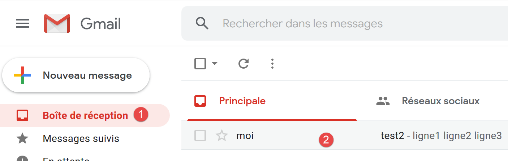
- في [2]، نرى أن المستخدم [php7parlexemple@gmail.com] قد تلقى الرسالة بالفعل؛
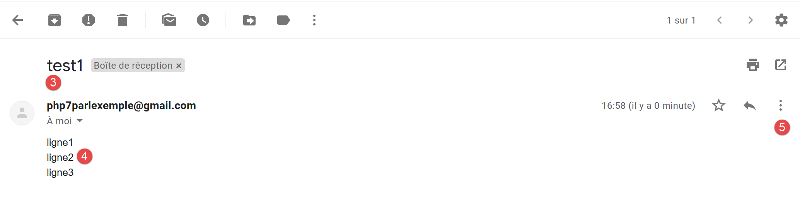


- في [7]، مرسل البريد الإلكتروني. نرى أنه ليس [guest@localhost]. ويرجع ذلك إلى أن الخادم الوسيط المحدد في تكوين [hmailServer] هو الذي قام بتسليم الرسالة. وهذا الخادم الترحيل هو [smtp.gmail.com] المرتبط بمعرفات مستخدم Gmail [php7parlexemple@gmail.com]. سيبدو أن أي بريد إلكتروني قادم من [hMailServer] صادر عن المستخدم [php7parlexemple@gmail.com]. وهذا ليس ما نريده هنا، ولكن إذا لم نستخدم خادم الترحيل هذا، فإن خدمة SMTP من Gmail ترفض الرسائل المرسلة من [hMailServer] لأن SMTP من Gmail تطلب مصادقة لا يرسلها [hMailServer]. لا شك أن هناك طريقة للتغلب على هذه المشكلة، لكنني لم أجدها؛
- في [8]، نرى أن الرسالة قد تم استلامها من الجهاز [DESKTOP-528I5CU] الذي يستضيف خادم البريد [hMailServer]؛
- في [9]، نرى مرسل الرسالة. ونلاحظ أنه ليس [guest@localhost]؛
- في [10]، المرسل الأصلي للرسالة. هذه المرة هو بالفعل [guest@localhost]؛
- في [11]، الموضوع؛
- في [12]، المستلم؛
- في [13]، الرسالة؛
أخيرًا، نجح عميلنا [RawTcpClient] في إرسال الرسالة على الرغم من أننا واجهنا مشكلة في المرسل. لدينا الأساس لإنشاء عميل SMTP مكتوب في PHP.
16.5.5. عميل SMTP بسيط مكتوب بلغة PHP
سنقوم بتطبيق ما تعلمناه سابقًا من بروتوكول SMTP على PHP.

يتم تكوين البرنامج النصي [smtp-01.php] بواسطة الملف jSON [config-smtp-01.json] التالي:
{
"mail to localhost via localhost": {
"smtp-server": "localhost",
"smtp-port": "25",
"from": "guest@localhost",
"to": "guest@localhost",
"subject": "to localhost via localhost",
"message": "ligne 1\nligne 2\nligne 3"
},
"mail to gmail via localhost": {
"smtp-server": "localhost",
"smtp-port": "25",
"from": "guest@localhost",
"to": "php7parlexemple@gmail.com",
"subject": "to gmail via localhost",
"message": "ligne 1\nligne 2\nligne 3"
},
"mail to gmail via gmail": {
"smtp-server": "smtp.gmail.com",
"smtp-port": "587",
"from": "guest@localhost",
"to": "php7parlexemple@gmail.com",
"subject": "to gmail via gmail",
"message": "ligne 1\nligne 2\nligne 3"
}
}
[config-smtp-01.json] عبارة عن مصفوفة حيث يمثل كل عنصر فيها قاموسًا من النوع [nom=>infos]. والقيمة [infos] هي نفسها قاموس يحتوي على المفاتيح والقيم التالية:
- [smtp-server]: اسم الخادم SMTP المطلوب استخدامه؛
- [smtp-port]: رقم منفذ الخدمة SMTP؛
- [from]: مرسل الرسالة؛
- [to]: مستلم الرسالة؛
- [subject]: موضوع الرسالة؛
- [message]: الرسالة المراد إرسالها؛
- يستخدم العنصر الأول الخادم SMTP [localhost] لإرسال بريد إلكتروني إلى مستخدم [localhost]؛
- العنصر الثاني يستخدم الخادم SMTP [localhost] لإرسال بريد إلكتروني إلى مستخدم على [Gmail]؛
- العنصر الثالث يستخدم الخادم SMTP [Gmail] لإرسال بريد إلكتروني إلى مستخدم [Gmail]؛
الرمز [smtp-01.php] الخاص بالعميل SMTP هو كما يلي:
<?php
// العميل SMTP (بروتوكول النقل SendMail) الذي يسمح بإرسال رسالة
// بروتوكول الاتصال SMTP بين العميل والخادم
// -> يقوم العميل بالاتصال بالمنفذ 25 لخادم SMTP
// <- يرسل له الخادم رسالة ترحيب
// -> يرسل العميل الأمر EHLO اسم جهازه
// <- الخادم يرد بـ OK أو لا
// -> يرسل العميل الأمر MAIL FROM: <المرسل>
// <- الخادم يرد بـ OK أو لا
// -> العميل يرسل الأمر RCPT TO: <المستلم>
// <- الخادم يرد بـ OK أو لا يرد
// -> العميل يرسل الأمر DATA
// <- الخادم يرد بـ OK أو لا
// -> يرسل العميل جميع أسطر رسالته وينهيها بسطر يحتوي على
// الحرف الوحيد.
// <- الخادم يرد بـ OK أو لا
// -> يرسل العميل الأمر QUIT
// <- الخادم يرد بـ OK أو لا
// تكون ردود الخادم على شكل xxx نص، حيث xxx هو رقم مكون من 3 أرقام. كل
// الرقم xxx >=500 يشير إلى وجود خطأ.
// قد تتضمن الإجابة عدة أسطر تبدأ جميعها بـ xxx باستثناء السطر الأخير
// على الشكل xxx (مسافة)
// يجب أن تنتهي أسطر النص المتبادلة بالأحرف RC(#13) و LF(#10)
//
// عميل SMTP (بروتوكول النقل SendMail) الذي يسمح بإرسال رسالة
//
// إدارة الأخطاء
//ini_set ("error_reporting"، E_ALL & ~ E_WARNING & ~E_DEPRECATED & ~E_NOTICE);
//ini_set("display_errors", "off");
//
// الالتزام الصارم بأنواع المعلمات المعلنة للدوال
declare (strict_types=1);
//
// معلمات إرسال البريد
const CONFIG_FILE_NAME = "config-smtp-01.json";
// استرداد التكوين
$mails = \json_decode(\file_get_contents(CONFIG_FILE_NAME), true);
// إرسال الرسائل
foreach ($mails as $name => $infos) {
// التتبع
print "Envoi du mail [$name]\n";
// إرسال البريد
$résultat = sendmail($name, $infos, TRUE);
// عرض النتيجة
print "$résultat\n";
}//لـ
// النهاية
exit;
//إرسال البريد
//-----------------------------------------------------------------------
function sendmail(string $name, array $infos, bool $verbose = TRUE): string {
// إرسال رسالة [$name,$infos]. إذا كان $verbose=TRUE ، يتم تتبع التبادلات بين العميل والخادم
// يتم استرداد اسم العميل
$client = gethostbyaddr(gethostbyname(""));
// فتح اتصال مع الخادم SMTP
$connexion = fsockopen($infos["smtp-server"], (int) $infos["smtp-port"]);
// العودة في حالة حدوث خطأ
if ($connexion === FALSE) {
return sprintf("Echec de la connexion au site (%s,%s) : %s", $infos["smtp-server"], $infos["smtp-port"]);
}
// يمثل $connexion تدفقًا للاتصال ثنائي الاتجاه
// بين العميل (هذا البرنامج) والخادم smtp الذي تم الاتصال به
// يُستخدم هذا القناة لتبادل الأوامر والمعلومات
// بعد الاتصال، يرسل الخادم رسالة ترحيب يتم قراءتها
$erreur = sendCommand($connexion, "", $verbose, TRUE);
if ($erreur !== "") {
// إغلاق الاتصال
fclose($connexion);
// العودة
return $erreur;
}
// الأمر EHLO
$erreur = sendCommand($connexion, "EHLO $client", $verbose, TRUE);
if ($erreur !== "") {
// إغلاق الاتصال
fclose($connexion);
// العودة
return $erreur;
}
// الأمر MAIL FROM:
$erreur = sendCommand($connexion, sprintf("MAIL FROM: <%s>", $infos["from"]), $verbose, TRUE);
if ($erreur !== "") {
// إغلاق الاتصال
fclose($connexion);
// العودة
return $erreur;
}
// الأمر RCPT TO:
$erreur = sendCommand($connexion, sprintf("RCPT TO: <%s>", $infos["to"]), $verbose, TRUE);
if ($erreur !== "") {
// إغلاق الاتصال
fclose($connexion);
// العودة
return $erreur;
}
// الأمر DATA
$erreur = sendCommand($connexion, "DATA", $verbose, TRUE);
if ($erreur !== "") {
// إغلاق الاتصال
fclose($connexion);
// العودة
return $erreur;
}
// تحضير الرسالة المراد إرسالها
// يجب أن تحتوي على الأسطر التالية
// من: المرسل
// إلى: المستلم
// الموضوع:
// سطر فارغ
// الرسالة
// .
$data = sprintf("From: %s\r\nTo: %s\r\nSubject: %s\r\n\r\n%s\r\n.\r\n", $infos["from"], $infos["to"], $infos["subject"], $infos["message"]);
$erreur = sendCommand($connexion, $data, $verbose, FALSE);
if ($erreur !== "") {
// إنهاء الاتصال
fclose($connexion);
// العودة
return $erreur;
}
// أمر الخروج
$erreur = sendCommand($connexion, "QUIT", $verbose, TRUE);
if ($erreur !== "") {
// إغلاق الاتصال
fclose($connexion);
// العودة
return $erreur;
}
// النهاية
fclose($connexion);
return "Message envoyé";
}
// --------------------------------------------------------------------------
function sendCommand($connexion, string $commande, bool $verbose, bool $withRCLF): string {
// إرسال $commande إلى القناة $connexion
// وضع التفصيل إذا كان $verbose=1
// إذا كان $withRCLF=1، يضيف التسلسل RCLF إلى التبادل
// البيانات
if ($withRCLF) {
$RCLF = "\r\n";
} else {
$RCLF = "";
}
// إرسال الأمر إذا كان $commande غير فارغ
if ($commande!=="") {
fputs($connexion, "$commande$RCLF");
// صدى محتمل
if ($verbose) {
affiche($commande, 1);
}
}//إذا
// قراءة الرد
$réponse = fgets($connexion, 1000);
// رد محتمل
if ($verbose) {
affiche($réponse, 2);
}
// استرداد رمز الخطأ
$codeErreur = (int) substr($réponse, 0, 3);
// آخر سطر في الرد؟
while (substr($réponse, 3, 1) === "-") {
// قراءة الرد
$réponse = fgets($connexion, 1000);
// صدى محتمل
if ($verbose) {
affiche($réponse, 2);
}
}//while
// انتهت الإجابة
// هل أرسل الخادم خطأً؟
if ($codeErreur >= 500) {
return substr($réponse, 4);
}
// العودة دون أخطاء
return "";
}
// --------------------------------------------------------------------------
function affiche($échange, $sens) {
// يعرض $échange على الشاشة
// إذا كان $sens=1، يعرض -->$echange
// إذا كان $sens=2 يعرض <-- $échange بدون الحرفين الأخيرين RCLF
switch ($sens) {
case 1:
print "--> [$échange]\n";
break;
case 2:
$L = strlen($échange);
print "<-- [" . substr($échange, 0, $L - 2) . "]\n";
break;
}//التبديل
}
تعليقات
- السطر 39: يتم استغلال ملف التكوين؛
- السطر 42: يتم تكرار عناصر المصفوفة [mails]. كل عنصر هو قاموس [name=>infos] حيث [name] هو اسم يمكن أن يكون أي اسم، و[infos] هو قاموس يحتوي على المعلومات اللازمة لإرسال بريد إلكتروني؛
- السطر 46: يتم إرسال البريد الإلكتروني بواسطة الدالة [sendmail] التي تقبل ثلاثة معلمات:
- $name: الاسم الممنوح لهذا الإرسال؛
- $infos: القاموس الذي يحتوي على المعلومات اللازمة للإرسال؛
- verbose: قيمة منطقية تشير إلى ما إذا كان يجب تسجيل التبادلات بين العميل والخادم في سجلات وحدة التحكم أم لا؛
- السطر 46: تُرجع الدالة [sendmail] رسالة خطأ فارغة في حالة عدم وجود أي خطأ؛
- السطر 56: ترسل الدالة [sendmail] الأوامر المختلفة التي يجب على عميل SMTP إرسالها:
- الأسطر 77-84: الأمر EHLO؛
- الأسطر 85-92: الأمر MAIL FROM:؛
- الأسطر 93-100: الأمر RCPT TO:؛
- الأسطر 101-108: الأمر DATA؛
- الأسطر 117-124: إرسال الرسالة (من، إلى، الموضوع، النص)؛
- الأسطر 125-132: الأمر QUIT؛
- السطر 140: الوظيفة [sendCommand] مسؤولة عن إرسال أوامر العميل إلى الخادم SMTP. وهي تقبل أربعة معلمات:
- [$connexion]: الاتصال الذي يربط العميل بالخادم؛
- [$commande]: الأمر المراد إرساله؛
- [$verbose]: إذا كانت القيمة هي TRUE، يتم تسجيل التبادلات بين العميل والخادم في وحدة التحكم؛
- [$withRCLF]: إذا كان TRUE، يتم إرسال الأمر منتهياً بالتسلسل \r\n. وهذا ضروري لجميع الأوامر الخاصة ببروتوكول SMTP، لكن [sendCommand] يُستخدم أيضًا لإرسال الرسالة. وفي هذه الحالة لا يتم إضافة التسلسل \r\n؛
- الأسطر 150-157: يتم إرسال الأمر إلى الخادم؛
- الأسطر 158-163: قراءة السطر الأول من الرد. وقد يتألف الرد من عدة أسطر. كل سطر يأخذ الشكل XXX-YYY حيث XXX هو رمز رقمي باستثناء السطر الأخير من الرد الذي يأخذ الشكل XXX YYY (عدم وجود الحرف -)؛
- الأسطر 167-174: قراءة جميع أسطر الرد؛
- السطر 177: إذا كان الرمز الرقمي XXX أكبر من 500، فهذا يعني أن الخادم قد أرسل خطأً؛
النتائج
يُظهر تنفيذ البرنامج النصي النتائج التالية على وحدة التحكم:
Envoi du mail [mail to localhost via localhost]
<-- [220 Bienvenue sur sergetahe@localhost]
--> [EHLO DESKTOP-528I5CU.home]
<-- [250-DESKTOP-528I5CU]
<-- [250-SIZE 20480000]
<-- [250-AUTH LOGIN]
<-- [250 HELP]
--> [MAIL FROM: <guest@localhost>]
<-- [250 OK]
--> [RCPT TO: <guest@localhost>]
<-- [250 OK]
--> [DATA]
<-- [354 OK, send.]
--> [From: guest@localhost
To: guest@localhost
Subject: to localhost via localhost
ligne 1
ligne 2
ligne 3
.
]
<-- [250 Queued (0.016 seconds)]
--> [QUIT]
<-- [221 goodbye]
Message envoyé
Envoi du mail [mail to gmail via localhost]
<-- [220 Bienvenue sur sergetahe@localhost]
--> [EHLO DESKTOP-528I5CU.home]
<-- [250-DESKTOP-528I5CU]
<-- [250-SIZE 20480000]
<-- [250-AUTH LOGIN]
<-- [250 HELP]
--> [MAIL FROM: <guest@localhost>]
<-- [250 OK]
--> [RCPT TO: <php7parlexemple@gmail.com>]
<-- [250 OK]
--> [DATA]
<-- [354 OK, send.]
--> [From: guest@localhost
To: php7parlexemple@gmail.com
Subject: to gmail via localhost
ligne 1
ligne 2
ligne 3
.
]
<-- [250 Queued (0.000 seconds)]
--> [QUIT]
<-- [221 goodbye]
Message envoyé
Envoi du mail [mail to gmail via gmail]
<-- [220 smtp.gmail.com ESMTP d9sm21623375wro.26 - gsmtp]
--> [EHLO DESKTOP-528I5CU.home]
<-- [250-smtp.gmail.com at your service, [90.93.230.110]]
<-- [250-SIZE 35882577]
<-- [250-8BITMIME]
<-- [250-STARTTLS]
<-- [250-ENHANCEDSTATUSCODES]
<-- [250-PIPELINING]
<-- [250-CHUNKING]
<-- [250 SMTPUTF8]
--> [MAIL FROM: <guest@localhost>]
<-- [530 5.7.0 Must issue a STARTTLS command first. d9sm21623375wro.26 - gsmtp]
5.7.0 Must issue a STARTTLS command first. d9sm21623375wro.26 - gsmtp
Done.
- الأسطر 1-26: يتم استخدام الخادم SMTP [hMailServer] لإرسال بريد إلكتروني إلى [guest@localhost] بنجاح؛
- الأسطر 27-52: يتم استخدام الخادم SMTP [hMailServer] لإرسال بريد إلكتروني إلى [php7parlexemple@gmail.com] بشكل سليم؛
- الأسطر 53-65: استخدام الخادم SMTP [Gmail] لإرسال بريد إلكتروني إلى [php7parlexemple@gmail.com] لا يسير على ما يرام: في السطر 65، يرسل الخادم SMTP رمز خطأ 530 مصحوبًا برسالة الخطأ. تشير هذه الرسالة إلى أن العميل SMTP يجب أن يقوم أولاً بالمصادقة عبر اتصال آمن. لم يقم عميلنا بذلك، وبالتالي تم رفض طلبه؛
16.5.6. عميل ثانٍ SMTP يكتب باستخدام مكتبة [SwiftMailer]
يحتوي العميل السابق على عيبين على الأقل:
- لا يستطيع استخدام اتصال آمن إذا طلب الخادم ذلك؛
- لا يستطيع إرفاق ملفات بالرسالة؛
في البرنامج النصي الجديد، سنستخدم المكتبة [SwiftMailer] [https://swiftmailer.symfony.com/] (مايو 2019). يتم وصف طريقة تثبيت [SwiftMailer] في URL [https://swiftmailer.symfony.com/docs/introduction.HTML] (مايو 2019).
قم أولاً بتشغيل Laragon:

- في [1]، افتح محطة طرفية؛

- في [3]، تأكد من أنك في المجلد [<laragon>/www] حيث <laragon> هو مجلد تثبيت Laragon؛
- في [3]، اكتب الأمر المحدد (مايو 2019). تحقق من الأمر الصحيح في URL و[https://swiftmailer.symfony.com/docs/introduction.HTML]؛
- في [4]، يشار إلى أنه لم يتم إجراء أي تثبيت أو تحديث. ويرجع ذلك إلى أن المكتبة كانت مثبتة بالفعل على هذا الجهاز؛
- في [5]، مجلد تثبيت [swiftmailer] و[6]؛
- في [7]، ملف سنحتاج إليه في البرنامج النصي الخاص بنا؛
بعد الانتهاء من ذلك، تأكد من أن المجلد [<laragon>/www/vendor] [5] موجود بالفعل في فرع [Include Path] في NetBeans (انظر الفقرة «الرابط»).
وأخيرًا، تتطلب المكتبة [SwiftMailer] أن يكون الملحق PHP [mbstring] نشطًا. وللقيام بذلك، نتحقق من الملف [php.ini] (انظر الفقرة «الرابط»):

سيستخدم البرنامج النصي [smtp-02.php] ملف التكوين jSON [config-smtp-02.json] التالي:
توجد هنا نفس العناوين الموجودة في الملف [config-smtp-01.json] مع إضافة عنوانين إضافيين:
- [tls]: يشير إلى أن TRUE يتطلب استخدام اتصال آمن مع الخادم SMTP. في حالة ما إذا كانت قيمة [tls] تساوي TRUE، يجب إضافة حقلين:
- [user]: اسم المستخدم الذي يقوم بالمصادقة على الاتصال؛
- [password]: كلمة المرور الخاصة به؛
في مثالنا هذا، استخدمنا بيانات اعتماد المستخدم [php7parlexemple@gmail.com] لتسجيل الدخول إلى خادم Gmail. استخدم بيانات اعتمادك الخاصة؛
- [attachments]: يحدد أسماء الملفات المراد إرفاقها بالبريد الإلكتروني؛
رمز البرنامج النصي [smtp-02.php] هو التالي:
<?php
// عميل SMTP (بروتوكول النقل SendMail) الذي يسمح بإرسال رسالة
//
// إدارة الأخطاء
//ini_set("error_reporting", E_ALL & ~ E_WARNING & ~E_DEPRECATED & ~E_NOTICE);
//ini_set("display_errors", "off");
//
// التبعيات
require_once 'C:/myprograms/laragon-lite/www/vendor/autoload.php';
//
// إعدادات إرسال البريد
const CONFIG_FILE_NAME = "config-smtp-02.json";
// استرداد التكوين
$mails = \json_decode(\file_get_contents(CONFIG_FILE_NAME), true);
// إرسال الرسائل
foreach ($mails as $name => $infos) {
// التتبع
print "Envoi du mail [$name]\n";
// إرسال البريد
$résultat = sendmail($name, $infos);
// عرض النتيجة
print "$résultat\n";
}//for
// النهاية
exit;
//-----------------------------------------------------------------------
function sendmail($name, $infos) {
// يرسل $infos[message] إلى خادم smtp $infos[smtp-server] على المنفذ $infos[smt-port]
// إذا كان $infos[tls] صحيحًا، فسيتم استخدام الدعم TLS
// يتم إرسال البريد الإلكتروني نيابة عن $infos[from]
// إلى المستلم $infos['to']
// المستند $info[attachment] مرفق بالرسالة
// موضوع الرسالة هو $infos[subject]
//
// الرسالة بتنسيق HTML
$messageHTML = str_replace("\n", "<br/>", $infos["message"]);
try {
// إنشاء الرسالة
$message = (new \Swift_Message())
// موضوع الرسالة
->setSubject($infos["subject"])
// المرسل
->setFrom($infos["from"])
// المستلمون باستخدام قاموس (setTo/setCc/setBcc)
->setTo($infos["to"])
// نص الرسالة
->setBody($infos["message"])
// نسخة HTML
->addPart("<b>$messageHTML</b>", 'text/html')
;
// المرفقات
foreach ($infos["attachments"] as $attachment) {
// مسار المرفق
$fileName = __DIR__ . $attachment;
// التحقق من وجود الملف
if (file_exists($fileName)) {
// إرفاق المستند بالرسالة
$message->attach(\Swift_Attachment::fromPath($fileName));
} else {
// خطأ
print "L'attachement [$fileName] n'existe pas\n";
}
}
// بروتوكول TLS؟
if ($infos["tls"] === "TRUE") {
// TLS
$transport = (new \Swift_SmtpTransport($infos["smtp-server"], $infos["smtp-port"], 'tls'))
->setUsername($infos["user"])
->setPassword($infos["password"]);
} else {
// لا يوجد TLS
$transport = (new \Swift_SmtpTransport($infos["smtp-server"], $infos["smtp-port"]));
}
// مدير الإرسال
$mailer = new \Swift_Mailer($transport);
// إرسال الرسالة
$result = $mailer->send($message);
// النهاية
return "Message [$name] envoyé";
} catch (\Throwable $ex) {
// خطأ
return "Erreur lors de l'envoi du message [$name] : " . $ex->getMessage();
}
}
تعليقات
- السطر 10: نقوم بتحميل الملف [autoload.php] الموجود في المجلد [<lagagon>/www/vendor] حيث <laragon> هو مجلد تثبيت Laragon. سيسمح هذا الملف بتحميل ملفات تعريف فئات [SwiftMailer] فور أول استخدام لهذه الفئات. وهو يوفر علينا إنشاء عدد من ملفات [require] يساوي عدد الفئات والواجهات في SwiftMailer التي سنستخدمها؛
- السطر 32: الدالة الجديدة [sendmail] التي تحتوي على معلمتين:
- [$name] التي تُستخدم لتمييز الرسائل عن بعضها البعض؛
- [$infos]: المعلومات اللازمة لإرسال الرسالة إلى المستلم؛
- السطر 42: سيكون لدينا نسختان من الرسالة: إحداهما بنص عادي والأخرى بتنسيق HTML. هنا، نقوم بتغيير علامات نهاية السطر إلى الرمز HTML <br/>؛
- الأسطر 45-69: نحدد الرسالة باستخدام الفئة [\SwiftMessage]؛
- السطر 47: تُستخدم الطريقة [SwiftMessage→setSubject] لتحديد موضوع الرسالة؛
- السطر 49: تُستخدم الطريقة [SwiftMessage→setFrom] لتحديد مرسل الرسالة؛
- السطر 51: تُستخدم الطريقة [SwiftMessage→setTo] لتحديد مستلم الرسالة؛
- السطر 53: تُستخدم الطريقة [SwiftMessage→setBody] لتحديد نص الرسالة؛
- السطر 55: تُستخدم الطريقة [SwiftMessage→addPart] لتحديد إصدارات مختلفة من الرسالة، وهنا الرسالة بتنسيق HTML. عندما تحتوي الرسالة على متغيرات، تعرض برامج قراءة البريد الإلكتروني المتغير المفضل لدى المستخدم؛
- الأسطر 58-69: تسمح الطريقة [SwiftMessage→addAttachment] (64) بإرفاق ملف بالرسالة؛
- الأسطر 70-79: بمجرد تحديد الرسالة المراد إرسالها، يجب تحديد كيفية إرسالها. يتم تحديد طريقة نقل الرسالة بواسطة الفئة [\Swift_SmtpTransport]. هناك معلومتان على الأقل يجب توفيرهما: nom و port الخاصان بالخادم SMTP. وهناك معلومة ثالثة أيضًا: هل يفرض الخادم SMTP مصادقة آمنة؟
- السطور 73-75: المثيل [\Swift_SmtpTransport] للاتصال الآمن بالخادم SMTP؛
- السطر 78: المثيل [\Swift_SmtpTransport] للاتصال غير الآمن بالخادم SMTP؛
- السطر 81: الفئة [\SwiftMailer] هي التي ترسل الرسائل. يجب تمرير طريقة النقل المختارة إليها؛
- السطر 83: يتم إرسال الرسالة [\SwiftMessage] عبر وسيلة النقل [\Swift_SmtpTransport] المختارة. تعرض الطريقة [SwiftMailer→send] القيمة المنطقية FALSE إذا تعذر إرسال الرسالة؛
- الأسطر 86-89: تطلق المكتبة [SwiftMailer] استثناءً بمجرد حدوث أي خطأ؛
ملاحظة: تجدر الإشارة إلى أن مساحة أسماء فئات المكتبة [SwiftMailer] هي الجذر \. وقد تمت الإشارة صراحةً إلى الفئات [\SwiftMessage, \Swift_SmtpTransport, \SwiftMailer] لتذكير بذلك؛
النتائج
عند تشغيل البرنامج النصي [smtp-02.php]، نحصل على النتائج التالية في وحدة التحكم:
إذا قمنا بالاطلاع على حساب Gmail الخاص بالمستخدم [php7parlexemple]، فسنحصل على ما يلي:

- في [1]، الموضوع؛
- في [2]، المرسل؛
- في [3]، المستلم؛
- في [4]، الرسالة؛
- في [5-10]، المرفقات؛
إذا طلبنا الاطلاع على الرسالة الأصلية، فسنحصل على المستند التالي:
Return-Path: <php7parlexemple@gmail.com>
Received: from [127.0.0.1] (lfbn-1-11924-110.w90-93.abo.wanadoo.fr. [90.93.230.110])
by smtp.gmail.com with ESMTPSA id e14sm7773816wma.41.2019.05.26.03.11.53
for <php7parlexemple@gmail.com>
(version=TLS1_2 cipher=ECDHE-RSA-AES128-GCM-SHA256 bits=128/128);
Sun, 26 May 2019 03:11:54 -0700 (PDT)
Message-ID: <e613c47a421a66e2cf7f8e319616ec49@swift.generated>
Date: Sun, 26 May 2019 10:11:53 +0000
Subject: test-gmail-via-gmail
From: php7parlexemple@gmail.com
To: php7parlexemple@gmail.com
MIME-Version: 1.0
Content-Type: multipart/mixed; boundary="_=_swift_1558865513_a3a939017128a4cfb867e968bce5df49_=_"
--_=_swift_1558865513_a3a939017128a4cfb867e968bce5df49_=_
Content-Type: multipart/alternative; boundary="_=_swift_1558865513_43c6d2a54065e4917fb06e3327f8d927_=_"
--_=_swift_1558865513_43c6d2a54065e4917fb06e3327f8d927_=_
Content-Type: text/plain; charset=utf-8
Content-Transfer-Encoding: quoted-printable
ligne 1
ligne 2
ligne 3
--_=_swift_1558865513_43c6d2a54065e4917fb06e3327f8d927_=_
Content-Type: text/HTML; charset=utf-8
Content-Transfer-Encoding: quoted-printable
<b>ligne 1<br/>ligne 2<br/>ligne 3</b>
--_=_swift_1558865513_43c6d2a54065e4917fb06e3327f8d927_=_--
--_=_swift_1558865513_a3a939017128a4cfb867e968bce5df49_=_
Content-Type: application/vnd.openxmlformats-officedocument.wordprocessingml.document; name="Hello from SwiftMailer.docx"
Content-Transfer-Encoding: base64
Content-Disposition: attachment; filename="Hello from SwiftMailer.docx"
--_=_swift_1558865513_a3a939017128a4cfb867e968bce5df49_=_
Content-Type: application/pdf; name="Hello from SwiftMailer.pdf"
Content-Transfer-Encoding: base64
Content-Disposition: attachment; filename="Hello from SwiftMailer.pdf"
--_=_swift_1558865513_a3a939017128a4cfb867e968bce5df49_=_
Content-Type: application/vnd.oasis.opendocument.text; name="Hello from SwiftMailer.odt"
Content-Transfer-Encoding: base64
Content-Disposition: attachment; filename="Hello from SwiftMailer.odt"
--_=_swift_1558865513_a3a939017128a4cfb867e968bce5df49_=_
Content-Type: image/png; name="Cours-Tutoriels-Serge-Tahé-1568x268.png"
Content-Transfer-Encoding: base64
Content-Disposition: attachment; filename="Cours-Tutoriels-Serge-Tahé-1568x268.png"
--_=_swift_1558865513_a3a939017128a4cfb867e968bce5df49_=_
Content-Type: message/rfc822; name=test-localhost.eml
Content-Transfer-Encoding: base64
Content-Disposition: attachment; filename=test-localhost.eml
Return-Path: guest@localhost
Received: from [127.0.0.1] (localhost [127.0.0.1]) by DESKTOP-528I5CU with ESMTP ; Sat, 25 May 2019 09:48:23 +0200
Message-ID: <620f4628882b011feebe4faa30b45092@swift.generated>
Date: Sat, 25 May 2019 07:48:22 +0000
Subject: test-localhost
From: guest@localhost
To: guest@localhost
MIME-Version: 1.0
Content-Type: multipart/mixed; boundary="_=_swift_1558770502_c4b808c99c27ded04595bd11f4bad11b_=_"
--_=_swift_1558770502_c4b808c99c27ded04595bd11f4bad11b_=_
Content-Type: multipart/alternative; boundary="_=_swift_1558770503_3561ca315f33bd15ef6556e98db4a5b8_=_"
--_=_swift_1558770503_3561ca315f33bd15ef6556e98db4a5b8_=_
Content-Type: text/plain; charset=utf-8
Content-Transfer-Encoding: quoted-printable
j'ai =C3=A9t=C3=A9 invit=C3=A9 =C3=A0 d=C3=A9je=C3=BBner
--_=_swift_1558770503_3561ca315f33bd15ef6556e98db4a5b8_=_
Content-Type: text/HTML; charset=utf-8
Content-Transfer-Encoding: quoted-printable
<b>j'ai =C3=A9t=C3=A9 invit=C3=A9 =C3=A0 d=C3=A9je=C3=BBner</b>
--_=_swift_1558770503_3561ca315f33bd15ef6556e98db4a5b8_=_--
--_=_swift_1558770502_c4b808c99c27ded04595bd11f4bad11b_=_
Content-Type: application/vnd.openxmlformats-officedocument.wordprocessingml.document; name="Hello from SwiftMailer.docx"
Content-Transfer-Encoding: base64
Content-Disposition: attachment; filename="Hello from SwiftMailer.docx"
--_=_swift_1558770502_c4b808c99c27ded04595bd11f4bad11b_=_
Content-Type: application/pdf; name="Hello from SwiftMailer.pdf"
Content-Transfer-Encoding: base64
Content-Disposition: attachment; filename="Hello from SwiftMailer.pdf"
--_=_swift_1558770502_c4b808c99c27ded04595bd11f4bad11b_=_
Content-Type: application/vnd.oasis.opendocument.text; name="Hello from SwiftMailer.odt"
Content-Transfer-Encoding: base64
Content-Disposition: attachment; filename="Hello from SwiftMailer.odt"
--_=_swift_1558770502_c4b808c99c27ded04595bd11f4bad11b_=_
Content-Type: image/png; name="Cours-Tutoriels-Serge-Tahé-1568x268.png"
Content-Transfer-Encoding: base64
Content-Disposition: attachment; filename="Cours-Tutoriels-Serge-Tahé-1568x268.png"
--_=_swift_1558770502_c4b808c99c27ded04595bd11f4bad11b_=_--
--_=_swift_1558865513_a3a939017128a4cfb867e968bce5df49_=_--
- السطر 9: الموضوع؛
- السطر 10: المرسل؛
- السطر 11: المستلم؛
- السطر 13: تحتوي الرسالة على عدة أجزاء مفصولة بعلامات [--_=_swift_xx]؛
- الأسطر 19-24: الرسالة بنص عادي؛
- الأسطر 27-30: الرسالة بتنسيق HTML؛
- الأسطر 34-36: الملف المرفق [Hello from SwiftMailer.docx]؛
- الأسطر 40-42: الملف المرفق [Hello from SwiftMailer.pdf]؛
- الأسطر 46-48: الملف المرفق [Hello from SwiftMailer.odt]؛
- الأسطر 58-60: الملف المرفق [Cours-Tutoriels-Serge-Tahé-1568x268.png]؛
- الأسطر 58-60: الملف المرفق [test-localhost.eml]؛
- الأسطر 62-114: الملف المرفق [test-localhost.eml] هو في حد ذاته رسالة يُعرض محتواها في الأسطر 62-114. ويمكن ملاحظة أن هذه الرسالة تحتوي بدورها على مرفقات؛
16.6. البروتوكولات POP3 (بروتوكول مكتب البريد) و IMAP (بروتوكول الوصول إلى رسائل الإنترنت)
16.6.1. مقدمة
لقراءة رسائل البريد الإلكتروني المخزنة في خادم البريد، يوجد بروتوكولان:
- بروتوكول POP3 (بروتوكول مكتب البريد)، وهو البروتوكول الأول تاريخيًا ولكنه قليل الاستخدام حاليًا؛
- بروتوكول IMAP (بروتوكول الوصول إلى رسائل الإنترنت)، وهو بروتوكول أحدث من POP3 والأكثر استخدامًا حاليًا؛
لاكتشاف بروتوكول POP3، سنستخدم البنية التالية:

- سيكون [Serveur B] خادمًا محليًا لـ POP3 / IMAP، يتم تنفيذه بواسطة خادم البريد [hMailServer]؛
- [Client A] سيكون عميلاً لـ POP3 / IMAP بأشكال متنوعة:
- العميل [RawTcpClient] لاكتشاف البروتوكول POP3؛
- نص برمجي PHP يعيد تشغيل بروتوكول POP3 الخاص بالعميل [RawTcpClient]؛
- برنامج نصي PHP يستخدم مكتبة IMAP الخاصة بـ PHP، والتي تتيح تنفيذ كل من عملاء IMAP و POP3؛
16.6.2. اكتشاف بروتوكول POP3
أولاً، نستخدم البرنامج النصي [smtp-01.php] لإرسال بريد إلكتروني إلى المستخدم [guest@localhost]. إذا كنت قد أجريت الاختبارات المرتبطة بالبرنامج النصي، فمن المفترض أن يكون هذا المستخدم قد تلقى رسائل بريد إلكتروني، لكننا لم نتمكن من التحقق من ذلك. لإرسال بريد إلكتروني جديد إليه، استخدم على سبيل المثال ملف التكوين [config-smtp-01.json] التالي:
الآن دعونا نرى مع العميل [RawTcpClient] كيف يمكننا قراءة صندوق البريد الإلكتروني للمستخدم [guest@localhost]:
C:\Data\st-2019\dev\php7\php5-exemples\exemples\inet\utilitaires>RawTcpClient --quit bye localhost 110
Client [DESKTOP-528I5CU:55593] connecté au serveur [localhost-110]
Tapez vos commandes (bye pour arrêter) :
<-- [+OK Bienvenue sur sergetahe@localhost]
USER guest@localhost
<-- [+OK Send your password]
PASS guest
<-- [+OK Mailbox locked and ready]
LIST
<-- [+OK 2 messages (610 octets)]
<-- [1 305]
<-- [2 305]
<-- [.]
RETR 1
<-- [+OK 305 octets]
<-- [Return-Path: guest@localhost]
<-- [Received: from DESKTOP-528I5CU.home (localhost [127.0.0.1])]
<-- [ by DESKTOP-528I5CU with ESMTP]
<-- [ ; Tue, 21 May 2019 12:59:11 +0200]
<-- [Message-ID: <1356373A-33C9-4F31-BA43-2B119E128CE3@DESKTOP-528I5CU>]
<-- [From: guest@localhost]
<-- [To: guest@localhost]
<-- [Subject: to localhost via localhost]
<-- []
<-- [ligne 1]
<-- [ligne 2]
<-- [ligne 3]
<-- [.]
DELE 1
<-- [+OK msg deleted]
LIST
<-- [+OK 1 messages (305 octets)]
<-- [2 305]
<-- [.]
DELE 2
<-- [+OK msg deleted]
LIST
<-- [+OK 0 messages (0 octets)]
<-- [.]
QUIT
<-- [+OK POP3 server saying goodbye…]
Perte de la connexion avec le serveur…
- السطر 1: يعمل الخادم POP3 عادةً على المنفذ 110. وهذا هو الحال هنا؛
- السطر 5: يُستخدم الأمر [USER] لتحديد المستخدم الذي نريد قراءة صندوق بريده؛
- السطر 7: يستخدم الأمر [PASS] لتحديد كلمة المرور الخاصة به؛
- السطر 9: الأمر [LIST] يطلب قائمة بالرسائل الموجودة في صندوق بريد المستخدم؛
- السطر 14: الأمر [RETR] يطلب عرض الرسالة التي يتم تمرير رقمها؛
- السطر 29: الأمر [DELE] يطلب حذف الرسالة التي يتم إدخال رقمها؛
- السطر 40: الأمر [QUIT] يُعلم الخادم بأن العملية قد اكتملت؛
قد تأتي استجابة الخادم بعدة أشكال:
- سطر واحد يبدأ بـ [+OK] للإشارة إلى نجاح الأمر السابق للعميل؛
- سطر واحد يبدأ بـ [-ERR] للإشارة إلى أن الأمر السابق للعميل قد فشل؛
- عدة أسطر حيث:
- يبدأ السطر الأول بـ [+OK]؛
- يتكون السطر الأخير من نقطة واحدة؛
16.6.3. نص برمجي بسيط ينفذ بروتوكول POP3

نظرًا لأن البروتوكول POP3 له نفس بنية البروتوكول SMTP، فإن البرنامج النصي [pop3-01.php] هو نسخة معدلة من البرنامج النصي [smtp-01.php]. وسيحتوي على ملف التكوين [config-pop3-01.json] التالي:
- السطران 3-4: الخادم POP3 الذي يتم الاستعلام عنه هو الخادم المحلي [hMailServer]؛
- السطران 5-6: نريد قراءة صندوق بريد المستخدم [guest@localhost]؛
- السطر 7: سيتم قراءة 5 رسائل بريد إلكتروني كحد أقصى؛
النص البرمجي [pop3-01.php] هو التالي:
<?php
// العميل POP3 (بروتوكول مكتب البريد) الذي يسمح بقراءة الرسائل من صندوق البريد
// بروتوكول الاتصال POP3 عميل-خادم
// -> العميل يتصل بالمنفذ 110 لخادم smtp
// <- الخادم يرسل له رسالة ترحيب
// -> العميل يرسل الأمر USER المستخدم
// <- يرد الخادم بـ OK أو لا
// -> يرسل العميل الأمر PASS mot_de_passe
// <- الخادم يرد بـ OK أو لا
// -> يرسل العميل الأمر LIST
// <- الخادم يرد بـ OK أو لا
// -> يرسل العميل الأمر RETR رقم لكل رسالة بريد إلكتروني
// <- يرد الخادم بـ OK أو لا يرد. إذا كان الرد OK، فإنه يرسل محتوى البريد الإلكتروني المطلوب
// -> يرسل الخادم جميع أسطر البريد الإلكتروني وينتهي بسطر يحتوي على
// الحرف الوحيد.
// -> يرسل العميل الأمر DELE رقم لحذف رسالة بريد إلكتروني
// <- الخادم يرد بـ OK أو لا
// // -> يرسل العميل الأمر QUIT لإنهاء الحوار مع الخادم
// <- الخادم يرد بـ OK أو لا
// تكون ردود الخادم على شكل +OK نص أو -ERR نص
// قد تتألف الإجابة من عدة أسطر. وفي هذه الحالة، تتكون السطر الأخير من نقطة واحدة
// يجب أن تنتهي أسطر النص المتبادلة بالأحرف RC(#13) و LF(#10)
//
// عميل POP3 (بروتوكول النقل SendMail) الذي يتيح قراءة رسائل البريد الإلكتروني
//
// إدارة الأخطاء
//ini_set ("error_reporting"، E_ALL & ~ E_WARNING & ~E_DEPRECATED & ~E_NOTICE);
//ini_set("display_errors", "off");
//
// الالتزام الصارم بأنواع المعلمات المعلنة للدوال
declare (strict_types=1);
//
// معلمات إرسال البريد
const CONFIG_FILE_NAME = "config-pop3-01.json";
// استرداد التكوين
$mailboxes = \json_decode(\file_get_contents(CONFIG_FILE_NAME), true);
// قراءة صناديق البريد
foreach ($mailboxes as $name => $infos) {
// المتابعة
print "Lecture de la boîte à lettres [$name]\n";
// قراءة صندوق البريد
$résultat = readmail($name, $infos, TRUE);
// عرض النتيجة
print "$résultat\n";
}//for
// النهاية
exit;
//قراءة البريد
//-----------------------------------------------------------------------
function readmail(string $name, array $infos, bool $verbose = TRUE): string {
// قراءة محتوى صندوق البريد [$name]
// يستورد جميع الرسائل
// يتم حذف كل رسالة بعد قراءتها
// إذا كانت قيمة $verbose تساوي 1، يتم تتبع التبادلات بين العميل والخادم
//
// فتح اتصال مع الخادم SMTP
$connexion = fsockopen($infos["server"], (int) $infos["port"]);
// العودة في حالة حدوث خطأ
if ($connexion === FALSE) {
return sprintf("Echec de la connexion au site (%s,%s) : %s", $infos["smtp-server"], $infos["smtp-port"]);
}
// يمثل $connexion تدفقًا اتصاليًا ثنائي الاتجاه
// بين العميل (هذا البرنامج) والخادم POP3 الذي تم الاتصال به
// يُستخدم هذا القناة لتبادل الأوامر والمعلومات
// بعد الاتصال، يرسل الخادم رسالة ترحيب يتم قراءتها
$erreur = sendCommand($connexion, "", $verbose, TRUE);
if ($erreur !== "") {
// إغلاق الاتصال
fclose($connexion);
// العودة
return $erreur;
}
// الأمر USER
$erreur = sendCommand($connexion, "USER {$infos["user"]}", $verbose, TRUE);
if ($erreur !== "") {
// إغلاق الاتصال
fclose($connexion);
// العودة
return $erreur;
}
// الأمر PASS
$erreur = sendCommand($connexion, "PASS {$infos["password"]}", $verbose, TRUE);
if ($erreur !== "") {
// إغلاق الاتصال
fclose($connexion);
// العودة
return $erreur;
}
// أمر LIST
$premièreLigne = "";
$erreur = sendCommand($connexion, "LIST", $verbose, TRUE, $premièreLigne);
if ($erreur !== "") {
// إغلاق الاتصال
fclose($connexion);
// العودة
return $erreur;
}
// تحليل السطر الأول لمعرفة عدد الرسائل
$champs = [];
preg_match("/^\+OK (\d+)/", $premièreLigne, $champs);
$nbMessages = (int) $champs[1];
// التكرار على الرسائل
$iMessage = 0;
while ($iMessage < $nbMessages && $iMessage < $infos["maxmails"]) {
// الأمر RETR
$erreur = sendCommand($connexion, "RETR " . ($iMessage + 1), $verbose, TRUE);
if ($erreur !== "") {
// إغلاق الاتصال
fclose($connexion);
// العودة
return $erreur;
}
// أمر DELE
$erreur = sendCommand($connexion, "DELE " . ($iMessage + 1), $verbose, TRUE);
if ($erreur !== "") {
// إغلاق الاتصال
fclose($connexion);
// العودة
return $erreur;
}
// الرسالة التالية
$iMessage++;
}
// الأمر QUIT
$erreur = sendCommand($connexion, "QUIT", $verbose, TRUE);
if ($erreur !== "") {
// إغلاق الاتصال
fclose($connexion);
// رجوع
return $erreur;
}
// نهاية
fclose($connexion);
return "Terminé";
}
// --------------------------------------------------------------------------
function sendCommand($connexion, string $commande, bool $verbose, bool $withRCLF, string &$premièreLigne = ""): string {
// إرسال $commande إلى القناة $connexion
// وضع التفصيل إذا كان $verbose=1
// إذا كان $withRCLF=1، يضيف التسلسل RCLF إلى التبادل
// يضع السطر الأول من الرد في [$premièreLigne
// ]
// البيانات
if ($withRCLF) {
$RCLF = "\r\n";
} else {
$RCLF = "";
}
// إرسال الأمر إذا كان $commande غير فارغ
if ($commande !== "") {
fputs($connexion, "$commande$RCLF");
// رد محتمل
if ($verbose) {
affiche($commande, 1);
}
}//إذا
// قراءة الرد
$réponse = fgets($connexion, 1000);
// يتم تخزين السطر الأول
$premièreLigne = $réponse;
// صدى محتمل
if ($verbose) {
affiche($réponse, 2);
}
// استرداد رمز الخطأ
$codeErreur = substr($réponse, 0, 1);
if ($codeErreur === "-") {
// حدث خطأ
return substr($réponse, 5);
}
// حالات خاصة للأوامر RETR و LIST التي تحتوي على ردود متعددة الأسطر
$commande = substr(strtolower($commande), 0, 4);
if ($commande === "list" || $commande === "retr") {
// السطر الأخير من الرد؟
$champs = [];
$match = preg_match("/^\.\s+$/", $réponse, $champs);
while (!$match) {
// قراءة الرد
$réponse = fgets($connexion, 1000);
// صدى محتمل
if ($verbose) {
affiche($réponse, 2);
}
// تحليل الرد
$champs = [];
$match = preg_match("/^\.\s+$/", $réponse, $champs);
}//while
}
// العودة بدون أخطاء
return "";
}
// --------------------------------------------------------------------------
function affiche($échange, $sens) {
// يعرض $échange على الشاشة
// إذا كان $sens=1، يُعرض -->$echange
// إذا كان $sens=2، فسيتم عرض <-- $échange بدون الحرفين الأخيرين RCLF
switch ($sens) {
case 1:
print "--> [$échange]\n";
break;
case 2:
$L = strlen($échange);
print "<-- [" . substr($échange, 0, $L - 2) . "]\n";
break;
}//التبديل
}
تعليقات
كما ذكرنا سابقًا، فإن [pop3-01.php] هو نسخة معدلة من البرنامج النصي [smtp-01.php] الذي سبق أن قمنا بتعليقه. لن نعلق إلا على الاختلافات الرئيسية:
- السطر 55: تتولى الدالة [readmail] مهمة قراءة رسائل البريد الإلكتروني من صندوق البريد. توجد معلومات الاتصال بهذا الصندوق في القاموس [$infos]؛
- الأسطر 61-66: فتح اتصال مع الخادم POP3؛
- الأسطر 71-77: قراءة رسالة الترحيب المرسلة من الخادم؛
- الأسطر 78-85: إرسال الأمر [USER] لتحديد هوية المستخدم الذي نريد رسائله الإلكترونية؛
- الأسطر 86-93: إرسال الأمر [PASS] لإدخال كلمة مرور هذا المستخدم؛
- الأسطر 94-102: إرسال الأمر [LIST] لمعرفة عدد رسائل البريد الإلكتروني الموجودة في صندوق بريد هذا المستخدم.
- السطر 96: نضيف المعلمة [$premièreLigne] إلى معلمات الدالة [readmail]. في السطر الأول من رد الخادم على الأمر LIST، يحدد الخادم عدد الرسائل الموجودة في صندوق البريد؛
- الأسطر 104-106: يتم استرداد عدد الرسائل من السطر الأول من الرد؛
- الأسطر 109-128: يتم تكرار العملية على كل رسالة. لكل رسالة يتم إصدار أمرين:
- RETR i: لاسترداد الرسالة رقم i (الأسطر 111-117)؛
- DELE i: لحذفها بمجرد قراءتها (الأسطر 118-125)؛
- الأسطر 129-136: يتم إرسال الأمر [QUIT] لإعلام الخادم بأن العملية قد اكتملت؛
- الأسطر 178-194: بالنسبة للأوامر [LIST] و [RETR]، تتكون استجابة الخادم من عدة أسطر، حيث تتألف آخرها من نقطة واحدة؛
النتائج
عند التنفيذ، نحصل على النتائج التالية:
Lecture de la boîte à lettres [localhost:110]
<-- [+OK Bienvenue sur sergetahe@localhost]
--> [USER guest@localhost]
<-- [+OK Send your password]
--> [PASS guest]
<-- [+OK Mailbox locked and ready]
--> [LIST]
<-- [+OK 1 messages (305 octets)]
<-- [1 305]
<-- [.]
--> [RETR 1]
<-- [+OK 305 octets]
<-- [Return-Path: guest@localhost]
<-- [Received: from DESKTOP-528I5CU.home (localhost [127.0.0.1])]
<-- [ by DESKTOP-528I5CU with ESMTP]
<-- [ ; Tue, 21 May 2019 14:25:39 +0200]
<-- [Message-ID: <5F912826-F9C4-41B6-BDA7-4A29537781C9@DESKTOP-528I5CU>]
<-- [From: guest@localhost]
<-- [To: guest@localhost]
<-- [Subject: to localhost via localhost]
<-- []
<-- [ligne ]
<-- [ligne ]
<-- [ligne 3]
<-- [.]
--> [DELE 1]
<-- [+OK msg deleted]
--> [QUIT]
<-- [+OK POP3 server saying goodbye…]
Terminé
Done.
لدينا هنا عميل POP3 بسيط يفتقر إلى بعض القدرات:
- القدرة على التواصل مع خادم POP3 آمن؛
- القدرة على قراءة المرفقات المرفقة برسالة ما؛
سنقوم بتنفيذ الإمكانية الأولى باستخدام وظائف [imap] من PHP.
16.6.4. عميل POP3 / IMAP تم تنفيذه باستخدام وظائف [imap] من PHP
علينا أولاً التحقق من أن وظائف [imap] متوفرة في إصدار PHP الذي نستخدمه. نفتح الملف [php.ini] الموصوف في الفقرة «الرابط» ونبحث عن الأسطر التي تشير إلى [imap]:

السطر 895، تحقق من أن الامتداد [imap] مفعل بالفعل.
سيستخدم البرنامج النصي [imap-01.php] الملفين التاليين: jSON و [config-imap-01.json]:
يحدد الملف [config-imap-01.json] مصفوفة من خوادم IMAP / POP3 التي يجب الاتصال بها. كل عنصر هو بنية [clé:valeur]، حيث:
- [clé]: هو الخادم المطلوب الاتصال به. لدينا خادمان هنا:
- [{imap.gmail.com:993/imap/ssl/novalidate-cert}INBOX]: يشير إلى الخادم [imap.gmail.com] الذي يستمع على المنفذ 993. بروتوكول العميل/الخادم هو IMAP. تشير المعلمة /ssl إلى أن الاتصال بين العميل والخادم آمن. أما المعلمة /novalidate-cert فتطلب من العميل عدم التحقق من شهادة الأمان التي سيرسلها إليه الخادم. وأخيرًا، يدير الخادم IMAP مجموعة من صناديق البريد لمستخدم واحد. عند تحديد INBOX في URL الخاص بالخادم IMAP، فإننا نشير إلى أننا مهتمون بصندوق البريد المسمى INBOX، وهو عادةً الصندوق الذي تصل إليه الرسائل الجديدة؛
- [{localhost:110/pop3}INBOX]: يشير إلى الخادم [localhost] الذي يستمع على المنفذ 110. بروتوكول العميل/الخادم هنا هو POP3؛
- [valeur]: هو قاموس يحدد النقاط التالية:
- [imap-server]: اسم الخادم IMAP أو POP3؛
- [imap-port]: منفذ الخادم IMAP أو POP3؛
- [user]: المالك الذي نريد قراءة صندوق بريده؛
- [password]: كلمة المرور الخاصة به؛
- [output-dir]: المجلد الذي يجب حفظ الرسائل فيه؛
- [prefix]: أسماء الملفات التي سيتم حفظ الرسائل فيها ستكون بالصيغة prefixN حيث N هو رقم الرسالة؛
- [pop3]: قيمة منطقية تساوي TRUE للإشارة إلى أن البروتوكول المستخدم هو POP3. في هذه الحالة، بعد قراءة الرسالة، سيتم حذفها. هذه هي الطريقة المعتادة لعمل خوادم POP3: لا يتم الاحتفاظ بالرسالة التي تمت قراءتها على الخادم؛
النص البرمجي [imap-01.php] هو التالي:
<?php
// عميل IMAP (بروتوكول الوصول إلى رسائل الإنترنت) الذي يتيح قراءة رسائل البريد الإلكتروني
//
// الالتزام الصارم بأنواع المعلمات المعلنة للدوال
declare (strict_types=1);
// إدارة الأخطاء
error_reporting(E_ALL & ~ E_WARNING & ~E_DEPRECATED & ~E_NOTICE);
//ini_set("display_errors", "off");
//
//
// معلمات قراءة البريد
const CONFIG_FILE_NAME = "config-imap-01.json";
// استرداد التكوين
$mailboxes = \json_decode(\file_get_contents(CONFIG_FILE_NAME), true);
// قراءة صناديق البريد
foreach ($mailboxes as $name => $infos) {
// المتابعة
print "------------Lecture de la boîte à lettres [$name]\n";
// قراءة صندوق البريد
readmailbox($name, $infos);
}
// النهاية
exit;
//-----------------------------------------------------------------------
function readmailbox(string $name, array $infos): void {
// محاولة الاتصال
$imapResource = imap_open($name, $infos["user"], $infos["password"]);
// اختبار استجابة الدالة imap_open()
if (!$imapResource) {
// فشل
print "La connexion au serveur [$name] a échoué : " . imap_last_error() . "\n";
} else {
// تم الاتصال
print "Connexion établie avec le serveur [$name].\n";
// إجمالي الرسائل في صندوق البريد
$nbmsg = imap_num_msg($imapResource);
print "Il y a [$nbmsg] messages dans la boîte à lettres [$name]\n";
// الرسائل غير المقروءة في صندوق البريد الحالي
if ($nbmsg > 0) {
print "Récupération de la liste des messages non lus de la boîte à lettres [$name]\n";
$msgNumbers = imap_search($imapResource, 'UNSEEN');
if ($msgNumbers === FALSE) {
print "Il n'y a pas de nouveaux messages dans la boîte à lettres [$name]\n";
} else {
foreach ($msgNumbers as $msgNumber) {
// يتم استرداد معلومات عن الرسالة رقم $msgNumber
$infosMail = imap_headerinfo($imapResource, $msgNumber);
if ($infosMail === FALSE) {
print "Statut du message n° [$msgNumber] de la boîte à lettres [$name] non récupéré : " . imap_last_error() . "\n";
} else {
print "Statut du message n° [$msgNumber] de la boîte à lettres [$name]\n";
print_r($infosMail);
}
// يتم استرداد نص الرسالة رقم $msgNumber
getMailBody($imapResource, $msgNumber, $infos);
// إذا كان البروتوكول هو POP3، يتم حذف الرسالة
$pop3 = $infos["pop3"];
if ($pop3 !== NULL) {
// يتم حذف الرسالة على مرحلتين
imap_delete($imapResource, $msgNumber);
imap_expunge($imapResource);
}
}
}
}
}
// إغلاق الاتصال
$imapClose = imap_close($imapResource);
if (!$imapClose) {
// فشل
print "La fermeture de la connexion a échoué : " . imap_last_error() . "\n";
} else {
// نجاح
print "Fermeture de la connexion réussie.\n";
}
}
function getMailBody($imapResource, int $msgNumber, array $infos): void {
// استرداد نص الرسالة رقم $msgNumber
$corpsMail = imap_body($imapResource, $msgNumber);
print "Enregistrement du message dans le fichier {$infos["output-dir"]}/{$infos["prefix"]}$msgNumber\n";
// يتم إنشاء المجلد إذا لزم الأمر
if (!file_exists($infos["output-dir"])) {
mkdir($infos["output-dir"]);
}
// يتم حفظ الرسالة
if (!file_put_contents($infos["output-dir"] . "/" . $infos["prefix"] . $msgNumber, $corpsMail)) {
print "Echec de l'enregistrement\n";
}
}
تعليقات
- الأسطر 19-24: يتم إجراء حلقة على جميع الخوادم الموجودة في ملف التكوين؛
- السطر 32: تقوم الدالة [raedmailbox] بقراءة صندوق البريد المحدد في [$name]؛
- السطر 32: فتح اتصال IMAP؛
- المعلمة الأولى هي URL IMAP لصندوق البريد المراد قراءته؛
- المعلمة الثانية هي اسم المستخدم المالك لهذا البريد الإلكتروني؛
- المعلمة الثالثة هي كلمة المرور الخاصة به؛
تقوم الدالة [imap_open] بتأمين الاتصال إذا كان عنوان البريد الإلكتروني URL IMAP يحتوي على المعلمة /ssl؛
- السطر 41: تتيح الدالة [imap_num_msg] الحصول على العدد الإجمالي للرسائل الموجودة في صندوق البريد؛
- السطر 46: تتيح الدالة [imap_search] البحث عن رسائل معينة. هنا، نبحث عن الرسائل التي لم تُقرأ بعد (UNSEEN). المعلمة الثانية هي معيار للاختيار. وهناك ما يقارب العشرين معيارًا. تُرجع الدالة [imap_search] مصفوفة من أرقام الرسائل. ويمكن أن تتخذ هذه الأرقام شكلين: رقم التسلسل أو معرّف الرسالة UID. بشكل افتراضي، تُرجع الدالة [imap_search] مصفوفة من أرقام التسلسل. إذا أضفنا معلمة ثالثة [SE_UID]، فسنحصل على معرّفات الرسائل UID؛
- السطر 47: تُرجع الدالة [imap_search] القيمة المنطقية FALSE إذا لم تعثر على أي رسالة؛
- السطر 50: يتم إجراء حلقة تكرارية على جميع الرسائل غير المقروءة؛
- السطر 52: تحتوي الرسالة على رؤوس يمكن الحصول عليها باستخدام الدالة [imap_headerinfo]. وعادةً ما يكون المعامل الثاني لهذه الدالة هو رقم تسلسل الرسالة. إذا أردنا تعيين معرف رسالة UID، يجب تعيين المعلمة الثالثة إلى [FT_UID]؛
- السطر 53: تُرجع الدالة [imap_headerinfo] القيمة المنطقية FALSE إذا لم تتمكن من إنجاز مهمتها. وإلا فإنها تُرجع كائنًا مركبًا يتم عرضه باستخدام الدالة [print_r]، السطر 57؛
- السطر 60: بعد الرؤوس، نطلب الآن نص الرسالة باستخدام الدالة [imap_body]. تُرجع هذه الدالة القيمة المنطقية NULL إذا لم تتمكن من إنجاز مهمتها؛
- الأسطر 84-87: يتم تسجيل نص الرسالة في ملف محلي؛
- الأسطر 63-68: إذا كان البروتوكول المستخدم هو POP3، يتم حذف الرسالة التي تمت قراءتها للتو:
- تقوم الدالة [imap_delete] بوضع علامة «للحذف» على الرسالة ولكنها لا تحذفها؛
- تقوم الدالة [imap_expunge] بحذف جميع الرسائل التي تم وضع علامة «للحذف» عليها فعليًّا؛
- السطر 74: يتم إغلاق الاتصال بالخادم IMAP. ويُستخدم في ذلك الدالة [imap_close]؛
- السطر 86: تتيح الدالة [imap_body] الحصول على نص رسالة محددة برقمها؛
لنقم بتشغيل البرنامج النصي [smtp-02.json] حتى يتلقى المستخدم [php7parlexemple] في Gmail والمستخدم [guest] في [localhost] رسائل جديدة. وبعد ذلك، لنقم بتشغيل البرنامج النصي [imap-01.php] لقراءة صناديق بريدهما.
فيما يلي نتائج وحدة التحكم:
------------Lecture de la boîte à lettres [{imap.gmail.com:993/imap/ssl/novalidate-cert}INBOX]
Connexion établie avec le serveur [{imap.gmail.com:993/imap/ssl/novalidate-cert}INBOX].
Il y a [27] messages dans la boîte à lettres [{imap.gmail.com:993/imap/ssl/novalidate-cert}INBOX]
Récupération de la liste des messages non lus de la boîte à lettres [{imap.gmail.com:993/imap/ssl/novalidate-cert}INBOX]
Statut du message n° [26] de la boîte à lettres [{imap.gmail.com:993/imap/ssl/novalidate-cert}INBOX]
stdClass Object
(
[date] => Wed, 22 May 2019 10:08:24 +0000
[Date] => Wed, 22 May 2019 10:08:24 +0000
[subject] => test-gmail-via-gmail
[Subject] => test-gmail-via-gmail
[message_id] => <d8405cac62d57bd9c531ea79c146c72d@swift.generated>
[toaddress] => php7parlexemple@gmail.com
[to] => Array
(
[0] => stdClass Object
(
[mailbox] => php7parlexemple
[host] => gmail.com
)
)
[fromaddress] => php7parlexemple@gmail.com
[from] => Array
(
[0] => stdClass Object
(
[mailbox] => php7parlexemple
[host] => gmail.com
)
)
[reply_toaddress] => php7parlexemple@gmail.com
[reply_to] => Array
(
[0] => stdClass Object
(
[mailbox] => php7parlexemple
[host] => gmail.com
)
)
[senderaddress] => php7parlexemple@gmail.com
[sender] => Array
(
[0] => stdClass Object
(
[mailbox] => php7parlexemple
[host] => gmail.com
)
)
[Recent] =>
[Unseen] => U
[Flagged] =>
[Answered] =>
[Deleted] =>
[Draft] =>
[Msgno] => 26
[MailDate] => 22-May-2019 10:08:29 +0000
[Size] => 19086
[udate] => 1558519709
)
Enregistrement du message dans le fichier output/gmail-imap/message-26
Statut du message n° [27] de la boîte à lettres [{imap.gmail.com:993/imap/ssl/novalidate-cert}INBOX]
stdClass Object
(
…
)
Enregistrement du message dans le fichier output/gmail-imap/message-27
Fermeture de la connexion réussie.
------------Lecture de la boîte à lettres [{localhost:110/pop3}]
Connexion établie avec le serveur [{localhost:110/pop3}].
Il y a [1] messages dans la boîte à lettres [{localhost:110/pop3}]
Récupération de la liste des messages non lus de la boîte à lettres [{localhost:110/pop3}]
Statut du message n° [1] de la boîte à lettres [{localhost:110/pop3}]
stdClass Object
(
…
)
Enregistrement du message dans le fichier output/localhost-pop3/message-1
Fermeture de la connexion réussie.
Done.
وإذا أعدنا تشغيل البرنامج النصي [imap-01.php] فور ظهور هذه النتائج، فستكون النتائج كما يلي:
------------Lecture de la boîte à lettres [{imap.gmail.com:993/imap/ssl/novalidate-cert}INBOX]
Connexion établie avec le serveur [{imap.gmail.com:993/imap/ssl/novalidate-cert}INBOX].
Il y a [27] messages dans la boîte à lettres [{imap.gmail.com:993/imap/ssl/novalidate-cert}INBOX]
Récupération de la liste des messages non lus de la boîte à lettres [{imap.gmail.com:993/imap/ssl/novalidate-cert}INBOX]
Il n'y a pas de nouveaux messages dans la boîte à lettres [{imap.gmail.com:993/imap/ssl/novalidate-cert}INBOX]
Fermeture de la connexion réussie.
------------Lecture de la boîte à lettres [{localhost:110/pop3}]
Connexion établie avec le serveur [{localhost:110/pop3}].
Il y a [0] messages dans la boîte à lettres [{localhost:110/pop3}]
Fermeture de la connexion réussie.
- السطر 3: لا يزال عدد الرسائل في صندوق بريد Gmail كما هو، ولكن لم تعد هناك رسائل جديدة غير مقروءة (السطر 5). وهذا يدل على أن التنفيذ السابق قد غيّر حالة الرسائل المقروءة من «غير مقروءة» إلى «مقروءة»؛
- السطر 9: لم تعد هناك أي رسائل في صندوق بريد المستخدم [guest@localhost]. ويرجع ذلك إلى أنه في العملية السابقة، تم حذف الرسائل التي تمت قراءتها في [localhost] بعد ذلك؛
تم حفظ الرسائل محليًّا:

إذا نظرنا على سبيل المثال إلى محتوى الرسالة رقم 26 في Gmail، نجد ما يلي:
--_=_swift_1558519704_f31b373d6e416dc88eb4db0e45fb3a95_=_
Content-Type: multipart/alternative;
boundary="_=_swift_1558519706_9bffb48891232e50ab645383ca62242d_=_"
--_=_swift_1558519706_9bffb48891232e50ab645383ca62242d_=_
Content-Type: text/plain; charset=utf-8
Content-Transfer-Encoding: quoted-printable
ligne 1
ligne 2
ligne 3
--_=_swift_1558519706_9bffb48891232e50ab645383ca62242d_=_
Content-Type: text/HTML; charset=utf-8
Content-Transfer-Encoding: quoted-printable
<b>ligne 1<br/>ligne 2<br/>ligne 3</b>
--_=_swift_1558519706_9bffb48891232e50ab645383ca62242d_=_--
--_=_swift_1558519704_f31b373d6e416dc88eb4db0e45fb3a95_=_
Content-Type: application/pdf; name=Hello.pdf
Content-Transfer-Encoding: base64
Content-Disposition: attachment; filename=Hello.pdf
JVBERi0xLjUKJcOkw7zDtsOfCjIgMCBvYmoKPDwvTGVuZ3RoIDMgMCBSL0ZpbHRlci9GbGF0ZURl
Y29kZT4+CnN0cmVhbQp4nHWPuQoCQQyG+3mK1MKMyThHFoaAq7uF3cKAhdh5gIXgNr6+swcWshII
……………………………….…
OTQwODU4RDUzRDVENjU0QzJCNTM3Mjc+IF0KL0RvY0NoZWNrc3VtIC9DMjU3MUY1MUNDRjgwQ0Ex
ODU0OUI0RTQ4NDkwMDM3OAo+PgpzdGFydHhyZWYKMTIzMjYKJSVFT0YK
--_=_swift_1558519704_f31b373d6e416dc88eb4db0e45fb3a95_=_--
- الأسطر 11-13: الرسالة بنص عادي؛
- السطر 19: الرسالة HTML؛
- السطر 25: المرفق؛
دعونا نحاول تحسين هذا البرنامج النصي للحصول على أنواع مختلفة من الرسائل والمرفقات في ملفات منفصلة.
16.6.5. العميل POP3 / IMAP المحسّن
في البرنامج النصي [imap-01.php]، يتم عرض نص الرسالة رقم i كملف نصي يحتوي في الوقت نفسه على أنواع الرسائل المختلفة وكذلك المحتوى المشفر للملحقات المختلفة. من الممكن الحصول على بنية الرسالة لمعرفة هذه الأجزاء المختلفة. في البرنامج النصي [imap-02.php]، نقوم بتعديل الدالة [getMailBody] على النحو التالي:
function getMailBody($imapResource, int $msgNumber, array $infos): void {
// يتم استرداد بنية الرسالة
$structure=imap_fetchstructure($imapResource, $msgNumber);
// يتم عرضها
print_r($structure);
}
- السطر 3: نطلب بنية الرسالة؛
- السطر 5: نعرضها؛
والهدف هو معرفة المعلومات الموجودة في بنية الرسالة لمعرفة كيفية الحصول على أجزائها المختلفة. في مثالنا، يتم إرسال الرسالة بواسطة البرنامج النصي [smtp-02.php] باستخدام التكوين [config-smtp-02.json] التالي:
وبالتالي، يتم إرسال رسالة تحتوي على خمسة مرفقات إلى [guest@localhost] (الأسطر 11-15). يتم تنفيذ البرنامج النصي [imap-02.php] باستخدام التكوين [config-imap-01.json] التالي:
وبالتالي، يتم استغلال صندوق بريد [guest@localhost] (السطر 5). ثم يعرض البرنامج النصي [imap-02.php] بنية الرسالة المرسلة بواسطة [smtp-02.php]. وهذه البنية، التي تُعرض على وحدة التحكم، هي كما يلي:
stdClass Object
(
[type] => 1
[encoding] => 0
[ifsubtype] => 1
[subtype] => MIXED
[ifdescription] => 0
[ifid] => 0
[bytes] => 253599
[ifdisposition] => 0
[ifdparameters] => 0
[ifparameters] => 1
[parameters] => Array
(
[0] => stdClass Object
(
[attribute] => BOUNDARY
[value] => _=_swift_1558872295_5bc8ee2ca8b3723c0b39ca8bbfbebdeb_=_
)
)
[parts] => Array
(
[0] => stdClass Object
(
[type] => 1
[encoding] => 0
[ifsubtype] => 1
[subtype] => ALTERNATIVE
[ifdescription] => 0
[ifid] => 0
[bytes] => 429
[ifdisposition] => 0
[ifdparameters] => 0
[ifparameters] => 1
[parameters] => Array
(
[0] => stdClass Object
(
[attribute] => BOUNDARY
[value] => _=_swift_1558872296_1e51aae79dfca4e7e0af112489fe8734_=_
)
)
[parts] => Array
(
[0] => stdClass Object
(
[type] => 0
[encoding] => 4
[ifsubtype] => 1
[subtype] => PLAIN
[ifdescription] => 0
[ifid] => 0
[lines] => 3
[bytes] => 27
[ifdisposition] => 0
[ifdparameters] => 0
[ifparameters] => 1
[parameters] => Array
(
[0] => stdClass Object
(
[attribute] => CHARSET
[value] => utf-8
)
)
)
[1] => stdClass Object
(
[type] => 0
[encoding] => 4
[ifsubtype] => 1
[subtype] => HTML
[ifdescription] => 0
[ifid] => 0
[lines] => 1
[bytes] => 40
[ifdisposition] => 0
[ifdparameters] => 0
[ifparameters] => 1
[parameters] => Array
(
[0] => stdClass Object
(
[attribute] => CHARSET
[value] => utf-8
)
)
)
)
)
[1] => stdClass Object
(
[type] => 3
[encoding] => 3
[ifsubtype] => 1
[subtype] => VND.OPENXMLFORMATS-OFFICEDOCUMENT.WORDPROCESSINGML.DOCUMENT
[ifdescription] => 0
[ifid] => 0
[bytes] => 16302
[ifdisposition] => 1
[disposition] => ATTACHMENT
[ifdparameters] => 1
[dparameters] => Array
(
[0] => stdClass Object
(
[attribute] => FILENAME
[value] => Hello from SwiftMailer.docx
)
)
[ifparameters] => 1
[parameters] => Array
(
[0] => stdClass Object
(
[attribute] => NAME
[value] => Hello from SwiftMailer.docx
)
)
)
[2] => stdClass Object
(
[type] => 3
[encoding] => 3
[ifsubtype] => 1
[subtype] => PDF
[ifdescription] => 0
[ifid] => 0
[bytes] => 17514
[ifdisposition] => 1
[disposition] => ATTACHMENT
[ifdparameters] => 1
[dparameters] => Array
(
[0] => stdClass Object
(
[attribute] => FILENAME
[value] => Hello from SwiftMailer.pdf
)
)
[ifparameters] => 1
[parameters] => Array
(
[0] => stdClass Object
(
[attribute] => NAME
[value] => Hello from SwiftMailer.pdf
)
)
)
[3] => stdClass Object
(
…
)
[4] => stdClass Object
(
…
)
[5] => stdClass Object
(
[type] => 2
[encoding] => 3
[ifsubtype] => 1
[subtype] => RFC822
[ifdescription] => 0
[ifid] => 0
[lines] => 1881
[bytes] => 146682
[ifdisposition] => 1
[disposition] => ATTACHMENT
[ifdparameters] => 1
[dparameters] => Array
(
[0] => stdClass Object
(
[attribute] => FILENAME
[value] => test-localhost.eml
)
)
[ifparameters] => 1
[parameters] => Array
(
[0] => stdClass Object
(
[attribute] => NAME
[value] => test-localhost.eml
)
)
[parts] => Array
(
…
)
)
)
)
تعليقات
- توضح الوثائق الخاصة بـ PHP الخاصة بالوظيفة [imap_fetchstructure] معنى الحقول المختلفة للكائن الذي ترجعها الوظيفة:

القيم الرقمية للحقل [type] لها المعاني التالية:

القيم الرقمية للحقل [encoding] لها المعاني التالية:

كانت الرسالة المسجلة بواسطة [imap-01.php] تبدأ بالنص التالي:
Return-Path: <php7parlexemple@gmail.com>
Received: from [127.0.0.1] (lfbn-1-11924-110.w90-93.abo.wanadoo.fr. [90.93.230.110])
by smtp.gmail.com with ESMTPSA id e14sm7773816wma.41.2019.05.26.03.11.53
for <php7parlexemple@gmail.com>
(version=TLS1_2 cipher=ECDHE-RSA-AES128-GCM-SHA256 bits=128/128);
Sun, 26 May 2019 03:11:54 -0700 (PDT)
Message-ID: <e613c47a421a66e2cf7f8e319616ec49@swift.generated>
Date: Sun, 26 May 2019 10:11:53 +0000
Subject: test-gmail-via-gmail
From: php7parlexemple@gmail.com
To: php7parlexemple@gmail.com
MIME-Version: 1.0
Content-Type: multipart/mixed; boundary="_=_swift_1558865513_a3a939017128a4cfb867e968bce5df49_=_"
--_=_swift_1558865513_a3a939017128a4cfb867e968bce5df49_=_
Content-Type: multipart/alternative; boundary="_=_swift_1558865513_43c6d2a54065e4917fb06e3327f8d927_=_"
--_=_swift_1558865513_43c6d2a54065e4917fb06e3327f8d927_=_
Content-Type: text/plain; charset=utf-8
Content-Transfer-Encoding: quoted-printable
ligne 1
ligne 2
ligne 3
--_=_swift_1558865513_43c6d2a54065e4917fb06e3327f8d927_=_
Content-Type: text/HTML; charset=utf-8
Content-Transfer-Encoding: quoted-printable
<b>ligne 1<br/>ligne 2<br/>ligne 3</b>
--_=_swift_1558865513_43c6d2a54065e4917fb06e3327f8d927_=_--
--_=_swift_1558865513_a3a939017128a4cfb867e968bce5df49_=_
- السطران 15) و33) يحددان الرسالة من النوع [multipart/mixed] (السطر m)؛
- السطران 18) و16) يحددان الجزء الأول من الرسالة: الرسالة بالنص العادي؛
- السطران 26) و32) يحددان الجزء الثاني من الرسالة: الرسالة HTML؛
نجد المعلومات المختلفة للرسالة أعلاه في الكائن الذي أعادته [imap_fetchstructure]:
stdClass Object
(
[type] => 1
[encoding] => 0
[ifsubtype] => 1
[subtype] => MIXED
[ifdescription] => 0
[ifid] => 0
[bytes] => 253599
[ifdisposition] => 0
[ifdparameters] => 0
[ifparameters] => 1
[parameters] => Array
(
[0] => stdClass Object
(
[attribute] => BOUNDARY
[value] => _=_swift_1558872295_5bc8ee2ca8b3723c0b39ca8bbfbebdeb_=_
)
)
[parts] => Array
(
[0] => stdClass Object
(
[type] => 1
[encoding] => 0
[ifsubtype] => 1
[subtype] => ALTERNATIVE
[ifdescription] => 0
[ifid] => 0
[bytes] => 429
[ifdisposition] => 0
[ifdparameters] => 0
[ifparameters] => 1
[parameters] => Array
(
[0] => stdClass Object
(
[attribute] => BOUNDARY
[value] => _=_swift_1558872296_1e51aae79dfca4e7e0af112489fe8734_=_
)
)
[parts] => Array
(
[0] => stdClass Object
(
[type] => 0
[encoding] => 4
[ifsubtype] => 1
[subtype] => PLAIN
[ifdescription] => 0
[ifid] => 0
[lines] => 3
[bytes] => 27
[ifdisposition] => 0
[ifdparameters] => 0
[ifparameters] => 1
[parameters] => Array
(
[0] => stdClass Object
(
[attribute] => CHARSET
[value] => utf-8
)
)
)
[1] => stdClass Object
(
[type] => 0
[encoding] => 4
[ifsubtype] => 1
[subtype] => HTML
[ifdescription] => 0
[ifid] => 0
[lines] => 1
[bytes] => 40
[ifdisposition] => 0
[ifdparameters] => 0
[ifparameters] => 1
[parameters] => Array
(
[0] => stdClass Object
(
[attribute] => CHARSET
[value] => utf-8
)
)
)
)
)
- السطر 3: الرسالة من النوع MIME (ملحقات البريد الإلكتروني متعددة الأغراض) [multipart]؛
- السطر 4: الرسالة مشفرة بـ 7 بت؛
- السطر 5: يشير [ifsubtype]=1 إلى وجود حقل [subtype] في البنية؛
- السطر 6: يشير الحقل [subtype] إلى نوع فرعي MIME، وهو في هذه الحالة النوع [mixed]. إجمالاً، النوع MIME للوثيقة هو [multipart/mixed]؛
- السطر 7: [ifdescription]=0 يشير إلى عدم وجود حقل [description] في البنية؛
- السطر 8: [ifid]=0 يشير إلى عدم وجود حقل [id] في البنية؛
- السطر 10: [ifdisposition]=0 يشير إلى عدم وجود حقل [disposition] في البنية؛
- السطر 11: [ifdparameters]=0 يشير إلى عدم وجود حقل [dparameters] في البنية؛
- السطر 12: [ifparameters]=1 يشير إلى وجود حقل [parameters] في البنية؛
- السطر 13: يصف الحقل [parameters] معلمات الرسالة. يوجد هنا حقل واحد فقط؛
- الأسطر 15-19: يصف هذا الكائن السطر التالي من الرسالة النصية:
تُستخدم هذه الأسطر لتحديد حدود الرسالة. في الرسالة التي تم استردادها بواسطة [imap-01.php]، يتوافق الجزء من الرسالة الذي تم وصفه للتو مع السطر m). السمة [boundary] ليست هي نفسها لأن لقطات الشاشة تتوافق مع نفس الرسالة ولكن تم إرسالها في أوقات مختلفة؛
- السطر 23: تبدأ هنا بنية الأجزاء المختلفة للرسالة؛
- الأسطر 25-45: هذا الجزء الأول من النوع [multipart/alternative]. وهو يتطابق مع السطر (p) من نص الرسالة؛
- السطر 47: هذا الجزء الأول يحتوي بدوره على أجزاء فرعية؛
- الأسطر 47-70: هذا الجزء الفرعي الأول من النوع [text/plain] (الأسطر 51، 54)، وهو مشفر من النوع [ENCQUOTEDPRINTABLE] (السطر 52) وله معلمة [charset=utf-8] (السطور 66-67)؛
- تصف الأسطر 49-72 الأسطر s-x من الرسالة النصية؛
- الأسطر 74-99: تصف الجزء الفرعي الثاني من الجزء [multipart/alternative]؛
- الأسطر 74-99: هذا الجزء الفرعي الثاني من النوع [text/HTML] (السطران 76 و79)، وهو مشفر بنوع [ENCQUOTEDPRINTABLE] (السطر 77) ولها معلمة من النوع [charset=utf-8] (الأسطر 89-93)؛
- تصف الأسطر 74-99 الأسطر aa-ad من الرسالة النصية؛
انتهى الآن الجزء [multipart/alternative]. يبدأ الجزء [application/vnd.openxmlformats-officedocument.wordprocessingml.document] الموصوف بالنص التالي:
وهنا أيضًا، توجد هذه المعلومات في الكائن الذي ترجعها الدالة [imap_fetchstructure]:
[1] => stdClass Object
(
[type] => 3
[encoding] => 3
[ifsubtype] => 1
[subtype] => VND.OPENXMLFORMATS-OFFICEDOCUMENT.WORDPROCESSINGML.DOCUMENT
[ifdescription] => 0
[ifid] => 0
[bytes] => 16302
[ifdisposition] => 1
[disposition] => ATTACHMENT
[ifdparameters] => 1
[dparameters] => Array
(
[0] => stdClass Object
(
[attribute] => FILENAME
[value] => Hello from SwiftMailer.docx
)
)
[ifparameters] => 1
[parameters] => Array
(
[0] => stdClass Object
(
[attribute] => NAME
[value] => Hello from SwiftMailer.docx
)
)
)
- السطر 1: هذا هو الجزء الثاني من الرسالة الشاملة. نذكر أن الجزء الأول كان من النوع [multipart/alternative]؛
- الأسطر 3-6: هذا الجزء الثاني من النوع [application/vnd.openxmlformats-officedocument.wordprocessingml.document] (السطران 3 و6)، وهو مشفر بنظام Base 64 (السطر 4)؛
- السطر 11: هذا الجزء الثاني هو مرفق (السطر 11) وله معلمتان: [filename=Hello from SwiftMailer.docx] (الأسطر 15-21) و [name=Hello from SwiftMailer.docx] (الأسطر 26-32). يُلاحظ أن هذا المعامل الأخير غير موجود في الرسالة النصية. لذا تمت إضافته في الدالة [imap_fetchstructure]؛
يتم تكرار الأسطر 1-36 لكل مرفق من المرفقات الخمسة للرسالة.
تتيح لنا الدالة [imap_fetch_structure] الحصول على بنية الرسالة. وتحدد هذه البنية الأجزاء التي قد تحتوي بدورها على أجزاء فرعية. وللحصول على نص جزء أو جزء فرعي، نستخدم الدالة [imap_fetchbody].
نقوم بتعديل الدالة [getMailBody] التي تتيح لنا الحصول على نص الرسالة بالطريقة التالية:
function getMailBody($imapResource, int $msgNumber, array $infos, object $infosMail): void {
// يتم استرداد بنية الرسالة
$structure = imap_fetchstructure($imapResource, $msgNumber);
if ($structure !== FALSE) {
// يتم استرداد هذه الأجزاء المختلفة
getParts($imapResource, $msgNumber, $infos, $infosMail, $structure);
}
}
function getParts($imapResource, int $msgNumber, array $infos, object $infosMail, stdclass $part, string $sectionNumber = "0"): void {
// حساب رقم القسم
if (substr($sectionNumber, 0, 2) === "0.") {
$sectionNumber = substr($sectionNumber, 2);
}
print "-----contenu de la partie n° [$sectionNumber]\n";
// نوع المحتوى
print "Content-Type: ";
switch ($part->type) {
case TYPETEXT:
print "TEXT/{$part->subtype}\n";
break;
case TYPEMULTIPART:
print "MULTIPART/{$part->subtype}\n";
break;
case TYPEAPPLICATION:
print "APPLICATION/{$part->subtype}\n";
break;
case TYPEMESSAGE:
print "MESSAGE/{$part->subtype}\n";
break;
default:
print "UNKNOWN/{$part->subtype}\n";
break;
}
// نوع الترميز
$encodings=["7 bits", "8 bits", "binaire", "base 64", "quoted-printable", "autre"];
print "Transfer-Encoding : ".$encodings[$part->encoding]."\n";
// ننتقل إلى الأجزاء الفرعية إن وجدت
if (isset($part->parts)) {
for ($i = 1; $i <= count($part->parts); $i++) {
// جزء جديد من الرسالة
$subpart = $part->parts[$i - 1];
// استدعاء متكرر - نطلب نص الجزء [$subpart]
getParts($imapResource, $msgNumber, $infos, $infosMail, $subpart, "$sectionNumber.$i");
}
}
}
تعليقات
- السطر 3: نسترد بنية الرسالة؛
- السطر 6: نطلب عرض الأجزاء المختلفة الموجودة في الجدول [parts] التابع للبنية؛
- السطر 10: تتلقى الدالة [getParts] المعلمات التالية:
- [$imapResource]: الاتصال بالخادم IMAP؛
- [$msgNumber]: رقم تسلسل الرسالة التي نريد أجزاءها؛
- [$infos]: معلومات لتحديد مكان تخزين الأجزاء التي سيتم العثور عليها في نظام الملفات المحلي؛
- [$infosMail]: معلومات عامة عن الرسالة الإلكترونية (المرسل، المستلم (المستلمون)، الموضوع...؛
- [$part]: كائن يمثل جزءًا من الرسالة؛
- [$sectionNumber]: رقم قسم (أو جزء) من الرسالة؛
- السطور 17-34: يتم عرض نوع محتوى الجزء رقم [$section] من الرسالة. ولذلك، يتم الاستعانة بالحقول [$part→type] و [$part→subtype] من الجزء [$part]؛
- السطور 36-37: يتم عرض نوع الترميز للجزء [$sectionNumber]؛
- السطور 40-47: ربما يحتوي الجزء الذي تم عرض معلوماته للتو على أجزاء فرعية؛
- الأسطر 41-46: إذا كان الأمر كذلك، نطلب عرض نوع محتوى الأجزاء الفرعية المختلفة للجزء الذي تم عرضه للتو. نقوم هنا باستدعاء متكرر للوظيفة [getParts]؛
مرة أخرى، نرسل بريدًا إلكترونيًّا إلى مستخدم Gmail [php7parlexemple@gmail.com] مع البرنامج النصي [smtp-02.php] ونقرأه باستخدام البرنامج النصي السابق [imap-02.php]. وينتج عن ذلك النتائج التالية في وحدة التحكم:
------------Lecture de la boîte à lettres [{localhost:110/pop3}]
Connexion établie avec le serveur [{localhost:110/pop3}].
Il y a [1] messages dans la boîte à lettres [{localhost:110/pop3}]
Récupération de la liste des messages non lus de la boîte à lettres [{localhost:110/pop3}]
-----contenu de la partie n° [0]
Content-Type: MULTIPART/MIXED
Transfer-Encoding : 7 bits
-----contenu de la partie n° [1]
Content-Type: MULTIPART/ALTERNATIVE
Transfer-Encoding : 7 bits
-----contenu de la partie n° [1.1]
Content-Type: TEXT/PLAIN
Transfer-Encoding : quoted-printable
-----contenu de la partie n° [1.2]
Content-Type: TEXT/HTML
Transfer-Encoding : quoted-printable
-----contenu de la partie n° [2]
Content-Type: APPLICATION/VND.OPENXMLFORMATS-OFFICEDOCUMENT.WORDPROCESSINGML.DOCUMENT
Transfer-Encoding : base 64
-----contenu de la partie n° [3]
Content-Type: APPLICATION/PDF
Transfer-Encoding : base 64
-----contenu de la partie n° [4]
Content-Type: APPLICATION/VND.OASIS.OPENDOCUMENT.TEXT
Transfer-Encoding : base 64
-----contenu de la partie n° [5]
Content-Type: UNKNOWN/PNG
Transfer-Encoding : base 64
-----contenu de la partie n° [6]
Content-Type: MESSAGE/RFC822
Transfer-Encoding : base 64
-----contenu de la partie n° [6.1]
Content-Type: TEXT/PLAIN
Transfer-Encoding : 7 bits
Fermeture de la connexion réussie.
تمكنا بالفعل من استرداد أنواع المحتوى المختلفة للرسالة بالإضافة إلى نوع الترميز الخاص بها. تتبع ترقيم الأجزاء القاعدة التالية:
- السطران 6-7: الجزء [multipart/mixed] الذي يمثل الرسالة بأكملها يحمل الرقم 0. وستحمل الأجزاء المختلفة لهذا الكائن الأرقام 1، 2...
تتكون الرسالة من خمسة أجزاء إجمالًا:
- السطران 9-10: الجزء [multipart/alternative] الذي يحمل الرقم 1؛
- السطران 17-18: الجزء [APPLICATION/VND.OPENXMLFORMATS-OFFICEDOCUMENT.WORDPROCESSINGML.DOCUMENT] الذي يحمل الرقم 2. وهو مرفق ملف Word؛
- السطران 20-21: الجزء [APPLICATION/PDF] الذي يحمل الرقم 3. وهو مرفق ملف PDF؛
- السطران 23-24: الجزء [APPLICATION/VND.OASIS.OPENDOCUMENT.TEXT] الذي يحمل الرقم 4. وهو مرفق لملف OpenOffice؛
- السطران 26-27: الجزء [UNKNOWN/PNG] الذي يحمل الرقم 5. وهو مرفق ملف صورة؛
- السطران 30-31: الجزء [MESSAGE/RFC822] الذي يحمل الرقم 6. وهو مرفق بريد إلكتروني؛
عندما يحتوي جزء ما على أجزاء فرعية، يتم ترقيمها على النحو التالي: x.1، x.2… حيث يمثل الحرف x رقم الجزء الشامل. وهكذا:
- السطران 11-12: الجزء الأول من الجزء [multipart/alternative] يحمل الرقم 1.1. وهو محتوى من النوع [text/plain]: نص رسالة البريد الإلكتروني؛
- السطران 14-15: الجزء الثاني من الجزء [multipart/alternative] يحمل الرقم 1.2. وهو محتوى من النوع [text/HTML]: رسالة البريد الإلكتروني في HTML؛
- السطران 32-33: الجزء الأول من المرفق [MESSAGE/RFC822] يحمل الرقم 6.1. وهو محتوى من النوع [text/plain]. في الواقع، وفقًا لمعيار MIME، يختلف ترقيم أجزاء مرفق البريد الإلكتروني [MESSAGE/RFC822] عن القاعدة الموضحة سابقًا. وبالتالي، فإن الجزء الأول من المرفق [MESSAGE/RFC822] لا يحمل الرقم 6.1 بل رقمًا آخر؛
الآن بعد أن عرفنا كيفية تحديد الأجزاء والأجزاء الفرعية المختلفة للبريد الإلكتروني، يتبقى لنا استرداد محتواها.
يتطور كود البرنامج النصي على النحو التالي:
function getParts($imapResource, int $msgNumber, array $infos, object $infosMail, stdclass $part, string $sectionNumber = "0"): void {
// حساب رقم القسم
if (substr($sectionNumber, 0, 2) === "0.") {
$sectionNumber = substr($sectionNumber, 2);
}
print "-----contenu de la partie n° [$sectionNumber]\n";
// نوع المحتوى
print "Content-Type: ";
switch ($part->type) {
case TYPETEXT:
print "TEXT/{$part->subtype}\n";
break;
case TYPEMULTIPART:
print "MULTIPART/{$part->subtype}\n";
break;
case TYPEAPPLICATION:
print "APPLICATION/{$part->subtype}\n";
break;
case TYPEMESSAGE:
print "MESSAGE/{$part->subtype}\n";
break;
default:
print "UNKNOWN/{$part->subtype}\n";
break;
}
// نوع الترميز
$encodings = ["7 bits", "8 bits", "binaire", "base 64", "quoted-printable", "autre"];
print "Transfer-Encoding : " . $encodings[$part->encoding] . "\n";
// هل هذه رسالة؟
if ($part->type === TYPEMESSAGE) {
// لن يتم معالجة الأجزاء الفرعية لهذه الرسالة (الملف المرفق)
// نقوم بعرض نص الرسالة المرفقة
print imap_fetchbody($imapResource, $msgNumber, $sectionNumber);
} else {
// ننتقل إلى الأجزاء الفرعية المحتملة
if (isset($part->parts)) {
for ($i = 1; $i <= count($part->parts); $i++) {
// جزء جديد من الرسالة
$subpart = $part->parts[$i - 1];
// استدعاء متكرر - نطلب نص الجزء [$subpart]
getParts($imapResource, $msgNumber, $infos, $infosMail, $subpart, "$sectionNumber.$i");
}
} else {
// لا توجد أقسام فرعية - يتم عندئذ عرض نص الرسالة
print imap_fetchbody($imapResource, $msgNumber, $sectionNumber);
}
}
}
تعليقات
- السطر 46: تسترد الدالة [imap_fetchbody] نص الجزء رقم [$sectionNumber] من الرسالة. يتبع ترقيم أجزاء الرسالة القاعدة الموضحة سابقًا؛
- السطر 1: نبدأ بالقسم «0»؛
- السطر 41: سيتم ترقيم الأجزاء الفرعية لهذا القسم بـ «0.1» و«0.2»، في حين أنه ينبغي ترقيمها بـ «1» و«2»...
- الأسطر 3-5: يتم تصحيح هذا الخطأ؛
- الأسطر 37-43: إذا كان الجزء الحالي يحتوي على أجزاء فرعية، يتم تكرار العملية على كل منها (الأسطر 38-43). رقم القسم الخاص بها هو [$sectionNumber.$i]؛
- الأسطر 44-47: عندما لا توجد أجزاء فرعية أخرى، يتم عرض نص الجزء الحالي باستخدام الدالة [imap_fetchbody]. في مثالنا، يتعلق الأمر بالأجزاء [text/plain] و [text/HTML] والمرفقات؛
يؤدي تنفيذ هذا البرنامج النصي إلى النتائج التالية:
------------Lecture de la boîte à lettres [{localhost:110/pop3}]
Connexion établie avec le serveur [{localhost:110/pop3}].
Il y a [1] messages dans la boîte à lettres [{localhost:110/pop3}]
Récupération de la liste des messages non lus de la boîte à lettres [{localhost:110/pop3}]
-----contenu de la partie n° [0]
Content-Type: MULTIPART/MIXED
Transfer-Encoding : 7 bits
-----contenu de la partie n° [1]
Content-Type: MULTIPART/ALTERNATIVE
Transfer-Encoding : 7 bits
-----contenu de la partie n° [1.1]
Content-Type: TEXT/PLAIN
Transfer-Encoding : quoted-printable
ligne 1
ligne 2
ligne 3
-----contenu de la partie n° [1.2]
Content-Type: TEXT/HTML
Transfer-Encoding : quoted-printable
<b>ligne 1<br/>ligne 2<br/>ligne 3</b>
-----contenu de la partie n° [2]
Content-Type: APPLICATION/VND.OPENXMLFORMATS-OFFICEDOCUMENT.WORDPROCESSINGML.DOCUMENT
Transfer-Encoding : base 64
UEsDBBQABgAIAAAAIQDfpNJsWgEAACAFAAATAAgCW0NvbnRlbnRfVHlwZXNdLnhtbCCiBAIooAAC
AAAAAAAAAAAAAAAAAAAAAAAAAAAAAAAAAAAAAAAAAAAAAAAAAAAAAAAAAAAAAAAAAAAAAAAAAAAA
…
AAAAAAAAAF0mAABkb2NQcm9wcy9jb3JlLnhtbFBLAQItABQABgAIAAAAIQCdxkmwcgEAAMcCAAAQ
AAAAAAAAAAAAAAAAAAgpAABkb2NQcm9wcy9hcHAueG1sUEsFBgAAAAALAAsAwQIAALArAAAAAA==
-----contenu de la partie n° [3]
Content-Type: APPLICATION/PDF
Transfer-Encoding : base 64
JVBERi0xLjUKJcOkw7zDtsOfCjIgMCBvYmoKPDwvTGVuZ3RoIDMgMCBSL0ZpbHRlci9GbGF0ZURl
Y29kZT4+CnN0cmVhbQp4nHWNvQoCMRCE+zzF1sLF2WSTSyAEPD0Lu4OAhdj5AxaC1/j6Rk4s5GSa
…
PDcxQUJGQ0JGQURGODYxM0NBNUJDODNFMDNDNjI1QkQwPgo8NzFBQkZDQkZBREY4NjEzQ0E1QkM4
M0UwM0M2MjVCRDA+IF0KL0RvY0NoZWNrc3VtIC9DMTRCN0Q5N0YwNUU1OTYxQzhDODg0NEI3NkNF
OEIwRQo+PgpzdGFydHhyZWYKMTIzMTQKJSVFT0YK
-----contenu de la partie n° [4]
Content-Type: APPLICATION/VND.OASIS.OPENDOCUMENT.TEXT
Transfer-Encoding : base 64
UEsDBBQAAAgAAAs9uU5exjIMJwAAACcAAAAIAAAAbWltZXR5cGVhcHBsaWNhdGlvbi92bmQub2Fz
aXMub3BlbmRvY3VtZW50LnRleHRQSwMEFAAACAAACz25TgAAAAAAAAAAAAAAABwAAABDb25maWd1
…
AQIUABQACAgIAAs9uU42l0SORAQAABIRAAALAAAAAAAAAAAAAAAAAI8bAABjb250ZW50LnhtbFBL
AQIUABQACAgIAAs9uU4Uf52+LgEAACUEAAAVAAAAAAAAAAAAAAAAAAwgAABNRVRBLUlORi9tYW5p
ZmVzdC54bWxQSwUGAAAAABEAEQBlBAAAfSEAAAAA
-----contenu de la partie n° [5]
Content-Type: UNKNOWN/PNG
Transfer-Encoding : base 64
iVBORw0KGgoAAAANSUhEUgAABiAAAAEMCAYAAABN1n5OAAAACXBIWXMAAA7EAAAOxAGVKw4bAAAg
AElEQVR4nOy9e5TdV3Xn+Zm7aqprlBq1Rq1Wq7XU6opGrXaMMI6jAcfj9ihu4hAehkAghBASICF0
…
AAAAAAAAAAAAAAAAAAAAAAAAAAAAAAAAAAAAAAAAAAAAAAAAAAAAAAAAAAAAAAAAAAAAAAAAAAAA
AAAAAAAAAAAAAAAAAAAAAAAAAAAAAAAAAAAAAAAAAAAAAAAAAAAAAAAAAAAAAAAAAAAAAAAAAAAA
AAAA2Mb8f9Q5r2ohJn6/AAAAAElFTkSuQmCC
-----contenu de la partie n° [6]
Content-Type: MESSAGE/RFC822
Transfer-Encoding : base 64
UmV0dXJuLVBhdGg6IGd1ZXN0QGxvY2FsaG9zdA0KUmVjZWl2ZWQ6IGZyb20gWzEyNy4wLjAuMV0g
KGxvY2FsaG9zdCBbMTI3LjAuMC4xXSkNCglieSBERVNLVE9QLTUyOEk1Q1Ugd2l0aCBFU01UUA0K
…
cjJvaEpuNi9BQUFBQUVsRlRrU3VRbUNDDQotLV89X3N3aWZ0XzE1NTg3NzA1MDJfYzRiODA4Yzk5
YzI3ZGVkMDQ1OTViZDExZjRiYWQxMWJfPV8tLQ0K
Fermeture de la connexion réussie.
تعليقات
- الأسطر 14-16: محتوى الرسالة النصية المشفرة في [quoted-printable] (السطر 13)؛
- السطر 20: محتوى الرسالة HTML المشفرة بـ [quoted-printable] (السطر 19)؛
- الأسطر 24-28: محتوى ملف Word المشفر بـ [base64] (السطر 23)؛
- الأسطر 32-37: محتوى الملف PDF الذي تم ترميزه إلى [base64] (السطر 31)؛
- الأسطر 41-45: محتوى الملف OpenOffice المشفر بـ [base64] (السطر 40)؛
- الأسطر 50-55: محتوى ملف الصورة المشفر بـ [base64] (السطر 49)؛
- الأسطر 59-63: محتوى البريد الإلكتروني المرفق المشفر بـ [base64] (السطر 58)؛
والآن بعد أن:
- نحن نعرف كيفية العثور على نصوص الأجزاء المختلفة من رسالة بريد إلكتروني؛
- ونعرف ترميز هذه النصوص؛
يمكننا حفظ هذه النصوص في ملفات.
يتطور الرمز على النحو التالي:
function getParts($imapResource, int $msgNumber, array $infos, object $infosMail, stdclass $part, string $sectionNumber = "0"): void {
// حساب رقم القسم
if (substr($sectionNumber, 0, 2) === "0.") {
$sectionNumber = substr($sectionNumber, 2);
}
print "-----contenu de la partie n° [$sectionNumber]\n";
// نوع المحتوى
print "Content-Type: ";
switch ($part->type) {
case TYPETEXT:
print "TEXT/{$part->subtype}\n";
break;
case TYPEMULTIPART:
print "MULTIPART/{$part->subtype}\n";
break;
case TYPEAPPLICATION:
print "APPLICATION/{$part->subtype}\n";
break;
case TYPEMESSAGE:
print "MESSAGE/{$part->subtype}\n";
break;
default:
print "UNKNOWN/{$part->subtype}\n";
break;
}
// نوع الترميز
$encodings = ["7 bits", "8 bits", "binaire", "base 64", "quoted-printable", "autre"];
print "Transfer-Encoding : " . $encodings[$part->encoding] . "\n";
// هل هذه رسالة؟
if ($part->type === TYPEMESSAGE) {
// لن يتم التعامل مع الأجزاء الفرعية لهذه الرسالة
savePart($imapResource, $msgNumber, $sectionNumber, $infos, $infosMail);
} else {
// ننتقل إلى الأجزاء الفرعية المحتملة
if (isset($part->parts)) {
for ($i = 1; $i <= count($part->parts); $i++) {
// جزء جديد من الرسالة
$subpart = $part->parts[$i - 1];
// استدعاء متكرر - نطلب نص الجزء [$subpart]
getParts($imapResource, $msgNumber, $infos, $infosMail, $subpart, "$sectionNumber.$i");
}
} else {
// لا توجد أجزاء فرعية - يتم حفظ نص الرسالة
savePart($imapResource, $msgNumber, $sectionNumber, $infos, $infosMail);
}
}
}
- السطران 33 و45: تم استبدال عرض نص جزء [$imapResource, $msgNumber, $sectionNumber] من الرسالة الإلكترونية بحفظه في ملف؛
الدالة [savePart] هي كما يلي:
// حفظ جزء من الرسالة
function savePart($imapResource, int $msgNumber, string $sectionNumber, array $infos, object $infosMail): void {
// مجلد الحفظ
$outputDir = $infos["output-dir"] . "/message-$msgNumber";
// إذا لم يكن المجلد موجودًا، يتم إنشاؤه
if (!file_exists($outputDir)) {
mkdir($outputDir);
}
// هيكل الجزء المراد حفظه
$struct = imap_bodystruct($imapResource, $msgNumber, $sectionNumber);
// نوع المستند
$type = $struct->type;
// النوع الفرعي للمستند
$subtype = "";
if (isset($struct->subtype)) {
$subtype = strtolower($struct->subtype);
}
// يتم تحليل نوع الجزء
switch ($type) {
case TYPETEXT:
// في حالة الرسالة النصية: text/xxx
switch ($subtype) {
case plain:
saveText("$outputDir/message.txt", 0, imap_fetchBody($imapResource, $msgNumber, $sectionNumber), $infosMail, $struct);
break;
case HTML:
saveText("$outputDir/message.HTML", 1, imap_fetchBody($imapResource, $msgNumber, $sectionNumber), $infosMail, $struct);
break;
}
break;
default:
// حالات أخرى - نهتم فقط بالمرفقات
if (isset($struct->disposition)) {
$disposition = strtolower($struct->disposition);
if ($disposition === "attachment") {
// نحن أمام مرفق - نقوم بحفظه
saveAttachment($imapResource, $msgNumber, $sectionNumber, $outputDir, $struct);
}
} else {
// لن يتم معالجة هذا الجزء
print "Partie [$sectionNumber] ignorée\n";
}
break;
}
}
- الأسطر 3-8: إنشاء مجلد الحفظ. يحمل هذا المجلد رقم الرسالة التي يتم تحليل أجزائها؛
- السطر 10: يتم تحديد جزء الرسالة المراد نسخه احتياطيًا بشكل فريد من خلال المعلمات الثلاثة [$imapResource, $msgNumber, $sectionNumber]. يتم استدعاء بنية هذا الجزء باستخدام الوظيفة [imap_bodystruct]؛
- السطر 12: يتم استرداد النوع الرئيسي لجزء الرسالة؛
- الأسطر 13-17: يتم استرداد النوع الفرعي الخاص به؛
- الأسطر 20-30: تتم معالجة نوعي المحتوى: [text/plain] (الأسطر 23-25) و [text/HTML] (الأسطر 26-28). يتم تجاهل الأنواع الأخرى [text/xx]؛
- السطر 24: سيتم حفظ نص الجزء [text/plain] في ملف [message.txt]؛
- السطر 27: سيتم حفظ نص الجزء [text/HTML] في ملف [message.HTML]؛
- الأسطر 31-43: يتم معالجة الحالات التي لا يكون النوع الرئيسي للأجزاء فيها هو [text]؛
- السطر 35: يتم التركيز فقط على مرفقات الرسالة؛
- السطر 37: يتم حفظ هذه المرفقات في ملف باستخدام الدالة [saveAttachment]؛
إذا لخصنا الكود السابق:
- يتم حفظ الأجزاء [text/plain] و [text/HTML] باستخدام الدالة [saveText]. تمثل هذه الأجزاء محتوى البريد الإلكتروني؛
- يُحفظ المرفقات المختلفة باستخدام الدالة [saveAttachment]؛
وظيفة [saveText] هي كما يلي:
// حفظ النص [$text] الخاص بالرسالة
function saveText(string $fileName, int $type, string $text, object $infosMail, object $struct) {
// تحضير النص المراد حفظه
// $text مشفر - يتم فك تشفيره
switch ($struct->encoding) {
case ENCBASE64:
$text = base64_decode($text);
break;
case ENCQUOTEDPRINTABLE:
$text = quoted_printable_decode($text);
break;
}
// رؤوس الرسالة
// من
$from = "From: ";
foreach ($infosMail->from as $expéditeur) {
$from .= $expéditeur->mailbox . "@" . $expéditeur->host . ";";
}
// إلى
$to = "To: ";
foreach ($infosMail->to as $destinataire) {
$to .= $destinataire->mailbox . "@" . $destinataire->host . ";";
}
// الموضوع
$subject = "Subject: " . $infosMail->subject;
// إنشاء النص المراد حفظه
switch ($type) {
case 0:
// text/plain
$contents = "$from\n$to\n$subject\n\n$text";
break;
case 1:
// text/HTML
$contents = "$from<br/>\n$to<br/>\n$subject<br/>\n<br/>\n$text";
break;
}
// إنشاء الملف
print "sauvegarde d'un message dans [$fileName]\n";
// إنشاء الملف
if (! file_put_contents($fileName, $contents)) {
// فشل إنشاء الملف
print "Impossible de créer le fichier [$fileName]\n";
}
}
تعليقات
- السطر 1:
- [$fileName] هو اسم الملف الذي سيتم حفظ النص فيه [$text]؛
- [$type]: قيمته 0 للملف النصي، و1 لملف HTML؛
- [$text]: هو النص المراد حفظه. لكن يجب أولاً فك تشفيره لأنه مشفر؛
- [$infosMail]: يحتوي على معلومات عامة عن البريد الإلكتروني. سنستخدم الحقول [from, to, subject]؛
- [$struct]: هي البنية التي تصف جزء البريد الإلكتروني الذي نقوم بحفظه. سيسمح لنا ذلك بمعرفة نوع ترميز النص المراد حفظه؛
- الأسطر 4-12: نقوم بفك تشفير النص المراد حفظه؛
- الأسطر 13-25: نستخرج المعلومات [from, to, subject] من البريد الإلكتروني؛
- الأسطر 27-36: وفقًا لنوع النص المراد حفظه، سواء كان 0 أو 1، يتم إنشاء نص عادي (السطر 30) أو نص HTML (السطر 34)؛
- السطر 40: يتم حفظ النص الكامل في الملف [$fileName]؛
أما المرفقات فيتم حفظها باستخدام الوظيفة التالية [saveAttachment]:
// حفظ مرفق
function saveAttachment($imapResource, int $msgNumber, string $sectionNumber, string $outputDir, object $struct) {
// جاري تحليل بنية المرفق
// يتم البحث عن اسم الملف الذي سيتم حفظ المرفق فيه
// هذا الاسم موجود في [dparameters] ضمن البنية
if (isset($struct->dparameters)) {
// يتم استرداد [dparameters]
$dparameters = $struct->dparameters;
$fileName = "";
// نقوم بتصفح جدول [dparameters]
foreach ($dparameters as $dparameter) {
// كل عنصر من العناصر [dparameter] هو كائن له خاصيتان [attribute, value]
$attribute = strtolower($dparameter->attribute);
// السمة [filename] تمثل اسم الملف المراد إنشاؤه
// في هذه الحالة، يوجد اسم الملف في [$dparameter->value]
if ($attribute === "filename") {
$fileName = $dparameter->value;
break;
}
}
// إذا لم يتم العثور على اسم ملف، يتم البحث في السمة [parameters] في البنية
if ($fileName === "" && isset($struct->parameters)) {
// نستخرج [parameters]
$parameters = $struct->parameters;
foreach ($parameters as $parameter) {
// كل معلمة عبارة عن قاموس يحتوي على مفتاحين [attribute, value]
$attribute = strtolower($parameter->attribute);
// إذا كان السمة هي [name]، فإن [value] هو اسم الملف
if ($attribute === "name") {
$fileName = $parameter->value;
// يمكن ترميز اسم الملف
// على سبيل المثال =?utf-8?Q?دورات-دروس-سيرج-تاه=C3=A9-1568x268=2Ep
// نسترد الترميز باستخدام تعبير عادي
$champs = [];
$match = preg_match("/=\?(.+?)\?/", $fileName, $champs);
// في حالة التطابق، يتم فك تشفير اسم الملف
if ($match) {
$fileName = iconv_mime_decode($fileName, 0, $champs[1]);
}
break;
}
}
}
}
// إذا تم العثور على اسم ملف، يتم حفظ المرفق
if ($fileName !== "") {
// حفظ المرفق
$fileName = "$outputDir/$fileName";
print "sauvegarde de l'attachement dans [$fileName]\n";
// إنشاء ملف
if ($file = fopen($fileName, "w")) {
// استرداد النص المشفر من المرفق
$text = imap_fetchbody($imapResource, $msgNumber, $sectionNumber);
// المرفق مشفر - يتم فك تشفيره
switch ($struct->encoding) {
// قاعدة 64
case ENCBASE64:
$text = base64_decode($text);
break;
// مطبوع مقتبس
case ENCQUOTEDPRINTABLE:
$text = quoted_printable_decode($text);
break;
default:
// يتم تجاهل الحالات الأخرى
break;
}
// كتابة النص في الملف
fputs($file, $text);
// إغلاق الملف
fclose($file);
} else {
// فشل إنشاء الملف
print "L'attachement n'a pu être sauvegardé dans [$fileName]\n";
}
}
}
تعليقات
- السطر 2: تقبل الوظيفة [saveAttachment] المعلمات التالية:
- تحدد [$imapResource, int $msgNumber, string $sectionNumber] بشكل فريد الجزء IMAP المراد حفظه؛
- [string $outputDir] هو مجلد النسخ الاحتياطي؛
- [object $struct] تصف بنية جزء الرسالة المراد نسخه احتياطيًا؛
- السطور 6-44: يتم البحث عن اسم الملف المرتبط بالمرفق. سيتم استخدام نفس اسم الملف هذا لحفظه. يوجد اسم ملف المرفق في الجدول [$struct→dparameters] أو الجدول [$struct→parameters]، أو حتى كليهما؛
- الأسطر 30-40: إذا كان اسم الملف يحتوي على أحرف غير مشفرة بـ 7 بت، فإنه يكون قد تم ترميزه في الجدول [quoted-printable]. في هذه الحالة، في [$struct→dparameters]، يُسمى السمة [fileName*] بدلاً من [fileName]. وهذا يعني أنه لم يستوف شرط السطر 16. ثم يتم البحث عن اسم الملف في الجدول [$struct→parameters]؛
- السطر 32: مثال على اسم ملف مشفر. ويكون على الشكل التالي =?codage_original?codage_actuel?nom_encodé. وبالتالي، فإن الاسم [=?utf-8?Q?Cours-Tutoriels-Serge-Tah=C3=A9-1568x268=2Ep] يعني أن اسم الملف كان UTF-8 وأنه حاليًا هو [quoted-printable] (Q)؛
- السطر 38: يتم فك تشفير اسم الملف باستخدام الدالة [iconv_mime_decode] التي تقبل هنا ثلاثة معلمات:
- السلسلة المراد فك تشفيرها؛
- تُترك القيمة 0 كإعداد افتراضي؛
- مجموعة الأحرف التي سيتم استخدامها لتمثيل السلسلة التي تم فك تشفيرها. توجد هذه المعلمة في السلسلة المراد فك تشفيرها. يتم الحصول عليها باستخدام تعبير منتظم في السطرين 34-35؛
- السطور 45-75: يتم حفظ المرفق في ملف يحمل الاسم الذي تم العثور عليه؛
لاختبار البرنامج النصي [imap-02.php]، نرسل أولاً بريدًا إلكترونيًّا إلى [guest@localhost] بالتكوين التالي:
وبالتالي، هناك خمسة مرفقات.
نقرأ البريد الإلكتروني المرسل باستخدام [imap-02.php] والإعدادات التالية:
نتائج وحدة التحكم هي كما يلي:
------------Lecture de la boîte à lettres [{localhost:110/pop3}]
Connexion établie avec le serveur [{localhost:110/pop3}].
Il y a [1] messages dans la boîte à lettres [{localhost:110/pop3}]
Récupération de la liste des messages non lus de la boîte à lettres [{localhost:110/pop3}]
-----contenu de la partie n° [0]
Content-Type: MULTIPART/MIXED
Transfer-Encoding : 7 bits
-----contenu de la partie n° [1]
Content-Type: MULTIPART/ALTERNATIVE
Transfer-Encoding : 7 bits
-----contenu de la partie n° [1.1]
Content-Type: TEXT/PLAIN
Transfer-Encoding : quoted-printable
sauvegarde d'un message dans [output/localhost-pop3/message-1/message.txt]
-----contenu de la partie n° [1.2]
Content-Type: TEXT/HTML
Transfer-Encoding : quoted-printable
sauvegarde d'un message dans [output/localhost-pop3/message-1/message.HTML]
-----contenu de la partie n° [2]
Content-Type: APPLICATION/VND.OPENXMLFORMATS-OFFICEDOCUMENT.WORDPROCESSINGML.DOCUMENT
Transfer-Encoding : base 64
sauvegarde de l'attachement dans [output/localhost-pop3/message-1/Hello from SwiftMailer.docx]
-----contenu de la partie n° [3]
Content-Type: APPLICATION/PDF
Transfer-Encoding : base 64
sauvegarde de l'attachement dans [output/localhost-pop3/message-1/Hello from SwiftMailer.pdf]
-----contenu de la partie n° [4]
Content-Type: APPLICATION/VND.OASIS.OPENDOCUMENT.TEXT
Transfer-Encoding : base 64
sauvegarde de l'attachement dans [output/localhost-pop3/message-1/Hello from SwiftMailer.odt]
-----contenu de la partie n° [5]
Content-Type: UNKNOWN/PNG
Transfer-Encoding : base 64
sauvegarde de l'attachement dans [output/localhost-pop3/message-1/Cours-Tutoriels-Serge-Tahé-1568x268.png]
-----contenu de la partie n° [6]
Content-Type: MESSAGE/RFC822
Transfer-Encoding : base 64
sauvegarde de l'attachement dans [output/localhost-pop3/message-1/test-localhost.eml]
Fermeture de la connexion réussie.
Done.
نجد الملفات التي تم حفظها في المجلد [output/localhost-pop3/message-N]:

16.6.6. العميل POP3 / IMAP مع المكتبة [php-mime-mail-parser]
في البرنامج النصي السابق [imap-02.php]، تمكنا من حفظ:
- محتويات [text/plain] و [text/HTML] من البريد الإلكتروني؛
- مرفقات البريد الإلكتروني؛
بالنسبة لمرفق من النوع [message/rfc822]، قمنا أيضًا بحفظ محتوى المرفق. إلا أن هذا النوع من المرفقات هو في حد ذاته رسالة بريد إلكتروني تحتوي بدورها على محتويات [text/plain] و [text/HTML] بالإضافة إلى مرفقات أخرى. وقد نواجه عندئذ الحالة التالية:
- ملف [mail 1] الذي تتشابه بنيته مع بنية مرفق من النوع [message/rfc822]؛
- ملف [mail 2] مرفق بالرسالة 1؛
- ملف [mail 3] مرفق بالبريد الإلكتروني 2؛
- إلخ…
يقوم البرنامج النصي [imap-02.php] بحفظ محتوى [mail 1] (النصوص والمرفقات). كما يحفظ [mail 2] كمستند مرفق، لكنه يتوقف عند هذا الحد. لا يحاول تحليل [mail 2] لاستخراج النصوص والمرفقات منه. قد يعتقد المرء أنه يكفي تطبيق ما تم فعله لـ [mail 1] على [mail 2]. وقد يكفي عندئذٍ استدعاء متكرر للطريقة التي عالجت [mail 1] للحصول على محتوى جميع رسائل البريد الإلكتروني المتداخلة. لسوء الحظ، يتم ترقيم أجزاء [mail 2] وفقًا لمنطق يختلف عن ذلك المستخدم في [mail 1]، مما يمنع استخدام الخوارزمية نفسها في الحالتين ما لم يتم استخدام منطق معقد إلى حد ما لحساب أرقام أجزاء الرسالة، بغض النظر عن موقعها ضمن مجموعة الرسائل المتداخلة.
كان البرنامج النصي [imap-02.php] معقدًا بالفعل. ولتجنب زيادة تعقيده أكثر من ذلك من أجل إدارة محتويات الرسائل المتداخلة، سنستخدم المكتبة [php-mime-mail-parser] المتوفرة على Github (مايو 2019) في URL و[https://github.com/php-mime-mail-parser/php-mime-mail-parser] والتي كتبها فينسنت دوس.
16.6.6.1. تثبيت المكتبة [php-mime-mail-parser]
تشرح صفحة عرض المكتبة كيفية تثبيتها على نظام Windows:

هناك خطوتان لتثبيت مكتبة OS على نظام Windows:
télécharger une DLL ;
modifier le fichier [php.ini] qui configure PHP ;
LA DLL من المكتبة [mailparse] متاحة في URL [http://pecl.php.net/package/mailparse] (مايو 2019)؛

- في [2]، اختر أحدث إصدار مستقر من المكتبة؛

- في [3]، اختر إصدار PHP الذي تستخدمه (في هذا المستند هو PHP 7.2)؛
- في [4]، اختر إصدار Windows الخاص بك (هنا هو Windows 64 بت). نختار الإصدار [Thread Safe]؛
لمعرفة إصدار PHP الذي تم تنزيله مع Laragon، افتح [Terminal] من نافذة Laragon واكتب الأمر التالي:
C:\myprograms\laragon-lite\www
λ php -v
PHP 7.2.11 (cli) (built: Oct 10 2018 02:04:07) ( ZTS MSVC15 (Visual C++ 2017) x64 )
Copyright (c) 1997-2018 The PHP Group
Zend Engine v3.2.0, Copyright (c) 1998-2018 Zend Technologies
يظهر إصدار PHP 7.2.11 في السطر 3. ويُظهر السطر نفسه إصدار Windows المستخدم في التجميع (32 أو 74 بت).
بمجرد الحصول على DLL، يجب نسخه إلى المجلد [<laragon>/bin/php/<version-php>/ext] [5]:

وبعد ذلك، يجب تفعيل هذا الامتداد في الملف [php.ini] الذي يقوم بتكوين PHP (انظر الفقرة «الرابط»):

من المحتمل ألا يكون السطر [7] موجودًا، وسيتعين عليك إضافته بنفسك.
بمجرد تنشيط الامتداد، يمكن التحقق من صلاحيته عن طريق كتابة الأمر التالي في محطة Laragon:
C:\myprograms\laragon-lite\www
λ php --ini
Configuration File (php.ini) Path: C:\windows
Loaded Configuration File: C:\myprograms\laragon-lite\bin\php\php-7.2.11-Win32-VC15-x64\php.ini
Scan for additional .ini files in: (none)
Additional .ini files parsed: (none)
يقوم الأمر [php –-ini] بتحميل ملف التكوين الموجود في السطر 4. ثم يقوم بتحميل ملفات DLL الخاصة بجميع الامتدادات المُفعَّلة في ملف [php.ini]. وإذا كان أي منها غير صحيح، فسيتم الإبلاغ عن ذلك. وبالتالي، سيتم التحقق من صحة ملف DLL الذي تمت إضافته إلى [php_mailparse.dll]. وقد يتم اعتباره غير صحيح لأسباب متنوعة، وأكثرها شيوعًا ما يلي:
- قمت بتنزيل ملف DLL لا يتوافق مع إصدار ملف PHP المستخدم؛
- قمت بتنزيل ملف DLL 32 بت بينما لديك ملف PHP 64 بت أو العكس؛
بمجرد تفعيل الملحق والتحقق منه، يمكن الانتقال إلى تثبيت مكتبة [php-mime-mail-parser]:

يجب كتابة الأمر [8] في محطة Laragon (انظر الفقرة الرابط):
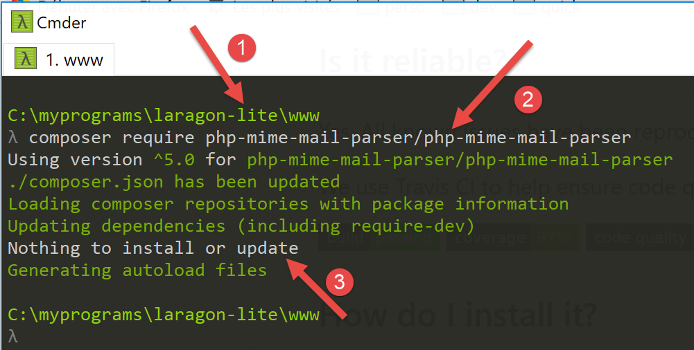
- في [1]، تأكد من أنك موجود في المجلد [<laragon>/www]؛
- في [2]، أمر تثبيت المكتبة [php-mime-mail-parser]؛
- في [3]، لم يتم تثبيت أي شيء هنا لأن المكتبة [php-mime-mail-parser] كانت مثبتة بالفعل؛
يتم تثبيت المكتبة [php-mime-mail-parser] في المجلد [<laragon>/www/vendor]:


- في [2-3]، مصادر مكتبة [php-mime-mail-parser]؛
الآن بعد تثبيت بيئة العمل، يمكننا الانتقال إلى كتابة البرنامج النصي [imap-03.php].
16.6.6.2. البرنامج النصي [imap-03.php]
يستخدم البرنامج النصي [imap-03.php] نفس ملف التكوين [config-imap-01.json] الذي استخدمته البرامج النصية السابقة:
البرنامج النصي [imap-03.php] هو التالي:
<?php
// عميل IMAP (بروتوكول الوصول إلى رسائل الإنترنت) الذي يتيح قراءة رسائل البريد الإلكتروني
// مكتوب باستخدام مكتبة [php-mime-mail-parser]
// متاح علىURL [https://github.com/php-mime-mail-parser/php-mime-mail-parser] (مايو 2019)
//
// الالتزام الصارم بأنواع المعلمات المعلنة للدوال
declare (strict_types=1);
// معالجة الأخطاء
error_reporting(E_ALL & ~ E_WARNING & ~E_DEPRECATED & ~E_NOTICE);
//ini_set("display_errors", "off");
//
// التبعيات
require_once 'C:/myprograms/laragon-lite/www/vendor/autoload.php';
// معلمات قراءة البريد
const CONFIG_FILE_NAME = "config-imap-01.json";
// استرداد التكوين
if (!file_exists(CONFIG_FILE_NAME)) {
print "Le fichier de configuration " . CONFIG_FILE_NAME . " n'existe pas";
exit;
}
$mailboxes = \json_decode(\file_get_contents(CONFIG_FILE_NAME), true);
// قراءة صناديق البريد
foreach ($mailboxes as $name => $infos) {
// المتابعة
print "------------Lecture de la boîte à lettres [$name]\n";
// قراءة صندوق البريد
readmailbox($name, $infos);
}
// النهاية
exit;
تعليقات
- الأسطر 18-23: يتم وضع محتوى ملف التكوين في القاموس [$mailboxes]؛
- الأسطر 26-31: تتم قراءة كل صندوق بريد بواسطة الدالة [readmailbox] (السطر 30). تقرأ هذه الدالة في الواقع الرسائل غير المقروءة في صندوق البريد. ويقابل كل صندوق بريد عنوان البريد الإلكتروني لمستخدم معين؛
الدالة [readmailbox] هي كما يلي:
function readmailbox(string $name, array $infos): void {
// يتم الاتصال
$imapResource = imap_open($name, $infos["user"], $infos["password"]);
if (!$imapResource) {
// فشل
print "La connexion au serveur [$name] a échoué : " . imap_last_error() . "\n";
exit;
}
// تم إنشاء الاتصال
print "Connexion établie avec le serveur [$name].\n";
// إجمالي عدد الرسائل في صندوق البريد
$nbmsg = imap_num_msg($imapResource);
print "Il y a [$nbmsg] messages dans la boîte à lettres [$name]\n";
// الرسائل غير المقروءة في صندوق البريد الحالي
if ($nbmsg > 0) {
print "Récupération de la liste des messages non lus de la boîte à lettres [$name]\n";
$msgNumbers = imap_search($imapResource, 'UNSEEN');
if ($msgNumbers === FALSE) {
print "Il n'y a pas de nouveaux messages dans la boîte à lettres [$name]\n";
} else {
// يتم تصفح قائمة الرسائل غير المقروءة
foreach ($msgNumbers as $msgNumber) {
print "---message n° [$msgNumber]\n";
// يتم استرداد نص الرسالة رقم $msgNumber
getMailBody($imapResource, $msgNumber, $infos);
// إذا كان البروتوكول هو POP3، يتم حذف الرسالة بعد استردادها
$pop3 = $infos["pop3"];
if ($pop3 !== NULL) {
// يتم وضع علامة «للحذف» على الرسالة
imap_delete($imapResource, $msgNumber);
}
}
// نهاية قراءة الرسائل غير المقروءة
if ($pop3 !== NULL) {
// يتم حذف الرسائل التي تم وضع علامة «للحذف» عليها
imap_expunge($imapResource);
}
}
}
// إغلاق الاتصال
$imapClose = imap_close($imapResource);
if (!$imapClose) {
// فشل
print "La fermeture de la connexion a échoué : " . imap_last_error() . "\n";
} else {
// نجاح
print "Fermeture de la connexion réussie.\n";
}
}
تعليقات
رمز الدالة [readmailbox] هو نفسه الموجود في البرامج النصية السابقة.
الدالة [getMailBody] (السطر 25) التي تحلل نص الرسالة (المحتوى + المرفقات) هي كما يلي:
// تحليل نص الرسالة
function getMailBody($imapResource, int $msgNumber, array $infos): void {
// استرداد النص الكامل للرسالة
$text = imap_fetchbody($imapResource, $msgNumber, "");
if ($text === FALSE) {
print "Le corps du message [$msgNumber] n'a pu être récupéré";
return;
}
// إنشاء محلل لتمحيص نص الرسالة
$parser = (new PhpMimeMailParser\Parser())->setText($text);
// استرداد الأجزاء المختلفة للرسالة
$outputDir = $infos["output-dir"] . "/message-$msgNumber";
getParts($parser, $msgNumber, $outputDir);
}
تعليقات
- السطر 2: تقبل الدالة [getMailBody] ثلاثة معلمات:
- [$imapResource]: المورد IMAP الذي تم الاتصال به؛
- [$msgNumber]: رقم الرسالة (في صندوق البريد) المراد معالجتها؛
- [$infos]: معلومات متنوعة عن صندوق البريد الذي يتم معالجته؛
- السطر 4: يتم استرداد الرسالة رقم [$msgNumber] بالكامل؛
- الأسطر 5-8: الحالة التي تعذر فيها استرداد محتوى الرسالة؛
- السطر 10: نبدأ في استخدام المكتبة [php-mime-mail-parser]. سيتولى الكائن [$parser] مهمة تحليل نص الرسالة؛
- السطر 12: سيكون [$outputDir] هو المجلد الذي سيتم فيه حفظ محتويات النص والمرفقات الخاصة بالرسالة رقم [$msgNumber]؛
- السطر 13: يُطلب من الدالة [getParts] العثور على الأجزاء المختلفة (المحتويات النصية والمرفقات) للرسالة رقم [$msgNumber] وحفظها في المجلد [$outputDir]؛
الدالة [getParts] هي كما يلي:
// استرداد الأجزاء المختلفة للرسالة
function getParts(PhpMimeMailParser\Parser $parser, int $msgNumber, string $outputDir): void {
// يتم إنشاء مجلد لحفظ الرسالة إذا لزم الأمر
if (!file_exists($outputDir)) {
if (!mkdir($outputDir)) {
print "Le dossier [$outputDir] n'a pu être créé\n";
return;
}
}
// يتم استرداد رؤوس الرسالة
$arrayHeaders = $parser->getHeaders();
// يتم حفظ الرسائل النصية
$parts = $parser->getInlineParts("text");
for ($i = 1; $i <= count($parts); $i++) {
print "-- Sauvegarde d'un message de type [text/plain]\n";
saveMessage($parts[$i - 1], 0, $arrayHeaders, "$outputDir/message_$i.txt");
}
// يتم حفظ الرسائل بتنسيق HTML
$parts = $parser->getInlineParts("html");
for ($i = 1; $i <= count($parts); $i++) {
print "-- Sauvegarde d'un message de type [text/html]\n";
saveMessage($parts[$i - 1], 1, $arrayHeaders, "$outputDir/message_$i.html");
}
// يتم استرداد المرفقات الخاصة بالرسالة
$attachments = $parser->getAttachments();
// رقم المرفق
$iAttachment = 0;
// تصفح قائمة المرفقات
foreach ($attachments as $attachment) {
// نوع المرفق
$fileType = $attachment->getContentType();
print "-- Sauvegarde d'un attachement de type [$fileType] dans le fichier [$outputDir/{$attachment->getFilename()}]\n";
// يتم حفظ المرفق
try {
$attachment->save($outputDir, PhpMimeMailParser\Parser::ATTACHMENT_DUPLICATE_SUFFIX);
} catch (Exception $e) {
print "L'attachement n'a pu être sauvegardé : " . $e->getMessage() . "\n";
}
// حالة خاصة لنوع message/rfc822
if ($fileType === "message/rfc822") {
// المرفق هو رسالة بحد ذاته - سنقوم بتحليله أيضًا
// يتم تغيير مجلد الحفظ
$iAttachment++;
$outputDir = $outputDir . "/rfc822-$iAttachment";
// يتم تغيير المحتوى المراد تحليله
$parser->setText($attachment->getContent());
// نقوم بتحليل الرسالة بطريقة متكررة
getParts($parser, $msgNumber, $outputDir);
}
}
}
تعليقات
- السطر 2: تقبل الدالة [getParts] ثلاثة معلمات:
- محلل [$parser] الذي تم إرسال النص الكامل للرسالة المراد تحليلها إليه؛
- [$msgNumber] هو رقم الرسالة قيد التحليل؛
- [$outputDir] هو المجلد الذي يجب حفظ محتويات الرسالة ومرفقاتها فيه؛
- الأسطر 4-9: إنشاء المجلد [$outputDir]؛
- السطر 11: استرداد رؤوس الرسالة قيد التحليل (من، إلى، الموضوع...)؛
- السطر 13: يتم استرداد أجزاء البريد الإلكتروني التي تحمل النوع [text/plain]. يتم استرداد جدول؛
- الأسطر 14-17: يتم حفظ جميع عناصر الجدول الذي تم استرداده، مع إعطاء كل عنصر اسم ملف مختلف؛
- السطر 19: يتم استرداد أجزاء البريد الإلكتروني التي تحمل النوع [text/html]. يتم استرداد مصفوفة؛
- الأسطر 20-23: يتم حفظ جميع عناصر المصفوفة المسترجعة، مع إعطاء كل عنصر اسم ملف مختلف؛
- السطر 25: يتم استرداد قائمة المرفقات الخاصة بالرسالة التي تم تحليلها؛
- السطر 29: يتم تصفح هذه القائمة؛
- السطر 24: يتم استرداد نوع المرفق (السمة Content-Type)؛
- الأسطر 34-38: حفظ المرفق في المجلد [$outputDir]. المعلمة الثانية [PhpMimeMailParser\Parser::ATTACHMENT_DUPLICATE_SUFFIX] هي استراتيجية لتسمية المرفقات. إذا كانت قيمة [$attachment→getFilename()] هي X وكان الملف X موجودًا بالفعل، فإن المكتبة [php-mime-mail-parser] تجرب الأسماء [X_1]، [X_2]، إلخ، حتى تجد اسم ملف غير موجود؛
- السطر 40: يتم التحقق مما إذا كان المرفق عبارة عن رسالة بريد إلكتروني؛
- الأسطر 41-48: إذا كان الأمر كذلك، يتم تحليل هذه الرسالة بدورها لاستخراج محتوياتها ومرفقاتها؛
- السطر 44: إذا كان [$outputDir] يساوي X وكان من بين مرفقات الرسالة التي تم تحليلها رسالتان بريد إلكتروني، فسيتم حفظ الأولى في المجلد [$outputDir/rfc822-1] والثانية في المجلد [$outputDir/rfc822-2]؛
- السطر 46: يصبح محتوى البريد الإلكتروني المرفق النص الجديد المراد تحليله؛
- السطر 48: يتم استدعاء الدالة [getParts] بشكل متكرر لتحليل النص الجديد؛
تقوم الدالة [saveMessage] بحفظ محتويات النص الخاصة بالرسالة المراد تحليلها:
// حفظ رسالة نصية
function saveMessage(string $text, int $type, array $arrayHeaders, string $filename): void {
// المحتوى المراد حفظه
$contents = "";
// إضافة العناوين
switch ($type) {
case 0:
// text/plain
foreach ($arrayHeaders as $key => $value) {
$contents .= "$key: $value\n";
}
$contents .= "\n";
break;
case 1:
// text/HTML
foreach ($arrayHeaders as $key => $value) {
$contents .= "$key: $value<br/>\n";
}
$contents .= "<br/>\n";
}
// إضافة نص الرسالة
$contents .= $text;
// حفظ كل شيء
if (!file_put_contents($filename, $contents)) {
// فشل
print "Le message n'a pu être sauvegardé dans le fichier [$filename]\n";
} else {
// نجاح
print "Le message a été sauvegardé dans le fichier [$filename]\n";
}
}
تعليقات
- تقبل الدالة [saveMessage] المعلمات التالية:
- [$text]: النص المراد حفظه؛
- [$type]: نوع النص (0: text/plain، 1: text/HTML)؛
- [$arrayHeaders]: رؤوس الرسالة التي تم تحليلها؛
- [$filename]: اسم الملف الذي يجب حفظ [$text] فيه؛
- السطر 4: سيمثل [$contents] النص الكامل المراد حفظه؛
- الأسطر 6-20: سيتم أولاً حفظ جميع رؤوس الرسالة (from، to، subject...)؛
- الأسطر 16-19: في حالة النص HTML، يتم إنهاء كل سطر بعلامة <br/> حتى يظهر كل عنوان بمفرده في سطر خاص به في المتصفح؛
- السطر 22: نضيف نص الرسالة المراد حفظه إلى العناوين؛
- الأسطر 24-30: يتم حفظ المجموعة بأكملها في الملف [$filename]؛
يُسهّل استخدام المكتبة [php-mime-mail-parser] بشكل كبير كتابة البرنامج النصي لقراءة رسائل البريد الإلكتروني.
يُستخدم البرنامج النصي [smtp-02.php] لإرسال بريد إلكتروني إلى المستخدم [guest@localhost] بالإعدادات التالية:
- الأسطر 11-15: هناك خمسة مرفقات؛
- السطر 15: [test-localhost-2.eml] هو بريد إلكتروني منظم على النحو التالي:
- يحتوي [test-localhost-2.eml] على 4 مرفقات (نفس المرفقات الموجودة في الأسطر 11-14) ورسالة بريد إلكتروني مرفقة؛
- الرسالة المرفقة بـ [test-localhost-2.eml] تحتوي على 4 مرفقات (نفس المرفقات الموجودة في الأسطر 11-14)؛
يُستخدم البرنامج النصي [imap-03.php] لقراءة صندوق بريد المستخدم [guest@localhost] بالتكوين التالي:
بعد التنفيذ، أصبحت شجرة مجلد [output/localhost-pop3] كما يلي:

- في [1]، المرفقات الخمسة للرسالة الإلكترونية التي استلمها [guest@localhost]؛
- إلى [2]، المرفقات الخمسة للرسالة الإلكترونية [test-localhost-2.eml] من [1]؛
- في [3]، المرفقات الأربعة للرسائل الإلكترونية [test-localhost.eml] من [2]؛
فيما يلي عروض وحدة التحكم:
------------Lecture de la boîte à lettres [{localhost:110/pop3}]
Connexion établie avec le serveur [{localhost:110/pop3}].
Il y a [1] messages dans la boîte à lettres [{localhost:110/pop3}]
Récupération de la liste des messages non lus de la boîte à lettres [{localhost:110/pop3}]
---message n° [1]
-- Sauvegarde d'un message de type [text/plain]
Le message a été sauvegardé dans le fichier [output/localhost-pop3/message-1/message_1.txt]
-- Sauvegarde d'un message de type [text/html]
Le message a été sauvegardé dans le fichier [output/localhost-pop3/message-1/message_1.html]
-- Sauvegarde d'un attachement de type [application/vnd.openxmlformats-officedocument.wordprocessingml.document] dans le fichier [output/localhost-pop3/message-1/Hello from SwiftMailer.docx]
-- Sauvegarde d'un attachement de type [application/pdf] dans le fichier [output/localhost-pop3/message-1/Hello from SwiftMailer.pdf]
-- Sauvegarde d'un attachement de type [application/vnd.oasis.opendocument.text] dans le fichier [output/localhost-pop3/message-1/Hello from SwiftMailer.odt]
-- Sauvegarde d'un attachement de type [image/png] dans le fichier [output/localhost-pop3/message-1/Cours-Tutoriels-Serge-Tahé-1568x268.png]
-- Sauvegarde d'un attachement de type [message/rfc822] dans le fichier [output/localhost-pop3/message-1/test-localhost-2.eml]
-- Sauvegarde d'un message de type [text/plain]
Le message a été sauvegardé dans le fichier [output/localhost-pop3/message-1/rfc822-1/message_1.txt]
-- Sauvegarde d'un message de type [text/html]
Le message a été sauvegardé dans le fichier [output/localhost-pop3/message-1/rfc822-1/message_1.html]
-- Sauvegarde d'un attachement de type [application/vnd.openxmlformats-officedocument.wordprocessingml.document] dans le fichier [output/localhost-pop3/message-1/rfc822-1/Hello from SwiftMailer.docx]
-- Sauvegarde d'un attachement de type [application/pdf] dans le fichier [output/localhost-pop3/message-1/rfc822-1/Hello from SwiftMailer.pdf]
-- Sauvegarde d'un attachement de type [application/vnd.oasis.opendocument.text] dans le fichier [output/localhost-pop3/message-1/rfc822-1/Hello from SwiftMailer.odt]
-- Sauvegarde d'un attachement de type [image/png] dans le fichier [output/localhost-pop3/message-1/rfc822-1/Cours-Tutoriels-Serge-Tahé-1568x268.png]
-- Sauvegarde d'un attachement de type [message/rfc822] dans le fichier [output/localhost-pop3/message-1/rfc822-1/test-localhost.eml]
-- Sauvegarde d'un message de type [text/plain]
Le message a été sauvegardé dans le fichier [output/localhost-pop3/message-1/rfc822-1/rfc822-1/message_1.txt]
-- Sauvegarde d'un message de type [text/html]
Le message a été sauvegardé dans le fichier [output/localhost-pop3/message-1/rfc822-1/rfc822-1/message_1.html]
-- Sauvegarde d'un attachement de type [application/vnd.openxmlformats-officedocument.wordprocessingml.document] dans le fichier [output/localhost-pop3/message-1/rfc822-1/rfc822-1/Hello from SwiftMailer.docx]
-- Sauvegarde d'un attachement de type [application/pdf] dans le fichier [output/localhost-pop3/message-1/rfc822-1/rfc822-1/Hello from SwiftMailer.pdf]
-- Sauvegarde d'un attachement de type [application/vnd.oasis.opendocument.text] dans le fichier [output/localhost-pop3/message-1/rfc822-1/rfc822-1/Hello from SwiftMailer.odt]
-- Sauvegarde d'un attachement de type [image/png] dans le fichier [output/localhost-pop3/message-1/rfc822-1/rfc822-1/Cours-Tutoriels-Serge-Tahé-1568x268.png]
Fermeture de la connexion réussie.
إذا قمنا بعرض [message_1.HTML] من [3] في متصفح، فسنحصل على ما يلي: